Opsin-shifted LWS photoreceptors: Visual models using opsin-shifted LWS receptors instead of filter-shifted LWS receptors in Main models
Supplementary Information
The aim
We tested how the LWS photoreceptors generated (opsin-shifted vs. filter-shifted) using different methods affect the contrasts.
In the following sections, we ran the same models as in the Main models but using the opsin-shifted LWS receptors for comparison.
The model parameters and the statistical methods remain the same as described in the Main models.
#Load R libraries
library(pavo)
library(dplyr)
library(stringr)
library(tidyr) #for gather() function
library(ggplot2)
library(lme4)
library(car)
library(multcomp)
library(boot) #for mean() function
library(pander) #for creating tidy tables
library(ggpubr) #for ggarrange() function
Data description
- We used the same spectral data and illumination as the Main models.
Sensitivity curves
ALL photoreceptor sensitivities (UVS, SWS, MWS, LWS) were generated from the Govardovskii template without apply filters.
Note: UVS, SWS, MWS photoreceptors were the same as those in the main models
#import sensitivity curves
specsensbuprest.aim1 <- read.csv("data/peak sensitivity_opsin shift_aim1.csv",header=TRUE) %>%
as.rspec()
specsensbuprest.aim2 <- read.csv("data/peak sensitivity_opsin shift_aim2.csv",header=TRUE) %>%
as.rspec()
#import irradiance
irradiance.d65 <- read.csv("data/d65.csv",header=TRUE) %>%
as.rspec(lim=c(300,800)) %>% #set import range
procspec(opt = c("min", "max")) #standardize the illumination spectrum
irradiance.twilight <- read.csv("data/civil twilight.csv",header=TRUE) %>%
as.rspec(lim=c(300,800)) %>%
procspec(opt = c("min", "max")) %>%
rename( twilight = Irradiance) %>%
irrad2flux() #convert the irradiance (μ Watt.cm^{-2}) to photon flux (μ mol.s^{-1}.m^{-2}) to derive correct quantum catch.
#import background - average leaf
aveleaf <- read.csv("data/aveleaf.csv",header=TRUE) %>% as.rspec()
#import and combine beetle, flower, leaf together
raw.dataset<-read.csv("data/refelectance spectra.csv",header=TRUE) %>% as.rspec()
dataset<- aggspec(raw.dataset, by = 3, FUN = mean) %>% #average three measurements to a representative one
procspec(opt = "smooth", span = 0.1, fixneg = "zero") #smooth the spectra and lift <0 to 0
#assign categories to each spectrum
category.list <- c("flower","leaf","beetle")
category <- rep(category.list , c(47*501,46*501,37*501))
wavelength<-rep(dataset[,1])
#transform the data for ploting purpose
dataset.transpose<-gather(dataset[,2:131], key = "species", value = "reflectance", na.rm = FALSE,
convert = FALSE, factor_key = FALSE)
dataset.plot.indivisually<-cbind(dataset.transpose, wavelength,category)
#split data by categories for future use
flower.spec<-dataset.plot.indivisually[1:23547,]
leaf.spec<-dataset.plot.indivisually[23548:46593,]
beetle.spec<-dataset.plot.indivisually[46594:65130,]
#merge the spectra before plot here
dataset.plot.indivisually$category2<-factor(dataset.plot.indivisually$category, levels=c("leaf","flower","beetle"))wl<-specsensbuprest.aim2[,1]
peaks<-gather(specsensbuprest.aim2[,2:9], peak, value) %>% cbind(wl)
peak.order <- c("UVS.355.A1.", "SWS.445.A1.", "MWS.530.A1.", "LWS.580.A1.", "LWS.600.A1.", "LWS.620.A1.", "LWS.640.A1.", "LWS.660.A1.") #to order the peaks in the legend
ggplot(peaks,aes(x=wl, y=value, col=peak))+
geom_line()+
guides(color=guide_legend(title="peak sensitivity"))+
scale_color_manual(
values = c("darkorchid4", "dodgerblue3", "olivedrab4", "orange1", "orange3","darkorange3", "orangered1", "red2"),
labels=c("355 nm", "445 nm","530 nm", "580 nm", "600 nm", "620 nm", "640 nm", "660 nm" ),
breaks=peak.order)+
xlab("Wavelength (nm)")+
ylab("Relative spectral sensitivity")+
theme_classic()
Figure caption: Sensitivity curves of the photoreceptors with different peak wavelengths.
Run the visual models
We ran the visual models with the same parameter settings and steps as in the Main models.
We first calculated the quantum catches, then calculated the contrasts.
#Quantum catch calculation
#Quantum catch - D65 - Aim 1
vmUSM=vismodel(dataset[1:501,], visual = specsensbuprest.aim1[, 1:4], bkg=aveleaf$aveleaf, illum = irradiance.d65[1:501,2], qcatch = 'fi', relative=FALSE, vonkries=TRUE)
vmUML=vismodel(dataset[1:501,], visual = specsensbuprest.aim1[, c(1,2,4,5)], bkg=aveleaf$aveleaf, illum = irradiance.d65[1:501,2], qcatch = 'fi', relative=FALSE, vonkries=TRUE)
vmUSL=vismodel(dataset[1:501,], visual = specsensbuprest.aim1[, c(1,2,3,5)], bkg=aveleaf$aveleaf, illum = irradiance.d65[1:501,2], qcatch = 'fi', relative=FALSE, vonkries=TRUE)
vmUSML=vismodel(dataset[1:501,], visual = specsensbuprest.aim1[, 1:5], bkg=aveleaf$aveleaf, illum = irradiance.d65[1:501,2], qcatch = 'fi', relative=FALSE, vonkries=TRUE)
#Quantum catch - D65 - Aim 2
buprest580=vismodel(dataset[1:501,], visual = specsensbuprest.aim2[, 1:5], bkg=aveleaf$aveleaf, illum = irradiance.d65[1:501,2], qcatch = 'fi', relative=FALSE, vonkries=TRUE)
buprest600=vismodel(dataset[1:501,], visual = specsensbuprest.aim2[, c(1,2,3,4,6)], bkg=aveleaf$aveleaf, illum = irradiance.d65[1:501,2], qcatch = 'fi', relative=FALSE, vonkries=TRUE)
buprest620=vismodel(dataset[1:501,], visual = specsensbuprest.aim2[, c(1,2,3,4,7)], bkg=aveleaf$aveleaf, illum = irradiance.d65[1:501,2], qcatch = 'fi', relative=FALSE, vonkries=TRUE)
buprest640=vismodel(dataset[1:501,], visual = specsensbuprest.aim2[, c(1,2,3,4,8)], bkg=aveleaf$aveleaf, illum = irradiance.d65[1:501,2], qcatch = 'fi', relative=FALSE, vonkries=TRUE)
buprest660=vismodel(dataset[1:501,], visual = specsensbuprest.aim2[, c(1,2,3,4,9)], bkg=aveleaf$aveleaf, illum = irradiance.d65[1:501,2], qcatch = 'fi', relative=FALSE, vonkries=TRUE)
#Quantum catch - twilight - Aim 1
vmUSM_twilight=vismodel(dataset[1:501,], visual = specsensbuprest.aim1[, 1:4], bkg=aveleaf$aveleaf, illum = irradiance.twilight[1:501,2], qcatch = 'fi', relative=FALSE, vonkries=TRUE)
vmUML_twilight=vismodel(dataset[1:501,], visual = specsensbuprest.aim1[, c(1,2,4,5)], bkg=aveleaf$aveleaf, illum = irradiance.twilight[1:501,2], qcatch = 'fi', relative=FALSE, vonkries=TRUE)
vmUSL_twilight=vismodel(dataset[1:501,], visual = specsensbuprest.aim1[, c(1,2,3,5)], bkg=aveleaf$aveleaf, illum = irradiance.twilight[1:501,2], qcatch = 'fi', relative=FALSE, vonkries=TRUE)
vmUSML_twilight=vismodel(dataset[1:501,], visual = specsensbuprest.aim1[, 1:5], bkg=aveleaf$aveleaf, illum = irradiance.twilight[1:501,2], qcatch = 'fi', relative=FALSE, vonkries=TRUE)
#Quantum catch - twilight - Aim 2
buprest580_twilight=vismodel(dataset[1:501,], visual = specsensbuprest.aim2[, 1:5], bkg=aveleaf$aveleaf, illum = irradiance.twilight[1:501,2], qcatch = 'fi', relative=FALSE, vonkries=TRUE)
buprest600_twilight=vismodel(dataset[1:501,], visual = specsensbuprest.aim2[, c(1,2,3,4,6)], bkg=aveleaf$aveleaf, illum = irradiance.twilight[1:501,2], qcatch = 'fi', relative=FALSE, vonkries=TRUE)
buprest620_twilight=vismodel(dataset[1:501,], visual = specsensbuprest.aim2[, c(1,2,3,4,7)], bkg=aveleaf$aveleaf, illum = irradiance.twilight[1:501,2], qcatch = 'fi', relative=FALSE, vonkries=TRUE)
buprest640_twilight=vismodel(dataset[1:501,], visual = specsensbuprest.aim2[, c(1,2,3,4,8)], bkg=aveleaf$aveleaf, illum = irradiance.twilight[1:501,2], qcatch = 'fi', relative=FALSE, vonkries=TRUE)
buprest660_twilight=vismodel(dataset[1:501,], visual = specsensbuprest.aim2[, c(1,2,3,4,9)], bkg=aveleaf$aveleaf, illum = irradiance.twilight[1:501,2], qcatch = 'fi', relative=FALSE, vonkries=TRUE)
#contrast calculation
#Contrast calculation- D65 - Aim 1
CvmUSM = coldist(vmUSM, noise="neural", achro=FALSE, n = c(1.6027, 1.4059, 1.7714), weber = 0.1059, weber.ref = 3)
CvmUML = coldist(vmUML, noise="neural", achro=FALSE, n = c(1.4416, 1.5933, 1.7451), weber = 0.1067, weber.ref = 3)
CvmUSL = coldist(vmUSL, noise="neural", achro=FALSE, n = c(1.5481, 1.3580, 1.8740), weber = 0.1030, weber.ref = 3)
CvmUSML = coldist(vmUSML, noise="neural", achro=FALSE, n = c(1.14,1,1.26,1.38), weber = 0.12, weber.ref = 4)
#Contrast calculation- D65 - Aim 2
Cbuprest580 = coldist(buprest580, noise="neural", achro=FALSE, n = c(1.14,1,1.26,1.38), weber = 0.12, weber.ref = 4)
Cbuprest600 = coldist(buprest600, noise="neural", achro=FALSE, n = c(1.14,1,1.26,1.38), weber = 0.12, weber.ref = 4)
Cbuprest620 = coldist(buprest620, noise="neural", achro=FALSE, n = c(1.14,1,1.26,1.38), weber = 0.12, weber.ref = 4)
Cbuprest640 = coldist(buprest640, noise="neural", achro=FALSE, n = c(1.14,1,1.26,1.38), weber = 0.12, weber.ref = 4)
Cbuprest660 = coldist(buprest660, noise="neural", achro=FALSE, n = c(1.14,1,1.26,1.38), weber = 0.12, weber.ref = 4)
#Contrast calculation- twilight - Aim 1
CvmUSM_twilight = coldist(vmUSM_twilight, noise="quantum", achro=FALSE, n = c(1.6027, 1.4059, 1.7714), weber = 0.1059, weber.ref = 3)
CvmUML_twilight = coldist(vmUML_twilight, noise="quantum", achro=FALSE, n = c(1.4416, 1.5933, 1.7451), weber = 0.1067, weber.ref = 3)
CvmUSL_twilight = coldist(vmUSL_twilight, noise="quantum", achro=FALSE, n = c(1.5481, 1.3580, 1.8740), weber = 0.1030, weber.ref = 3)
CvmUSML_twilight = coldist(vmUSML_twilight, noise="quantum", achro=FALSE, n = c(1.14,1,1.26,1.38), weber = 0.12, weber.ref = 4)
#Contrast calculation- twilight - Aim 2
Cbuprest580_twilight = coldist(buprest580_twilight, noise="quantum", achro=FALSE, n = c(1.14,1,1.26,1.38), weber = 0.12, weber.ref = 4)
Cbuprest600_twilight = coldist(buprest600_twilight, noise="quantum", achro=FALSE, n = c(1.14,1,1.26,1.38), weber = 0.12, weber.ref = 4)
Cbuprest620_twilight = coldist(buprest620_twilight, noise="quantum", achro=FALSE, n = c(1.14,1,1.26,1.38), weber = 0.12, weber.ref = 4)
Cbuprest640_twilight = coldist(buprest640_twilight, noise="quantum", achro=FALSE, n = c(1.14,1,1.26,1.38), weber = 0.12, weber.ref = 4)
Cbuprest660_twilight = coldist(buprest660_twilight, noise="quantum", achro=FALSE, n = c(1.14,1,1.26,1.38), weber = 0.12, weber.ref = 4)
#combine all contrast value in each comparison group
#Daylight - Aim 1
##flower vs leaf
VS1.fl_d65.aim1<- CvmUSM%>% filter(str_detect(patch1,"flower")) %>%
filter(str_detect(patch2,"leaves"))
VS1.fl_d65.aim1$vissys<-strrep("VS1.fl",1)
VS2.fl_d65.aim1<-CvmUML%>% filter(str_detect(patch1,"flower")) %>%
filter(str_detect(patch2,"leaves"))
VS2.fl_d65.aim1$vissys<-strrep("VS2.fl",1)
VS3.fl_d65.aim1<-CvmUSL%>% filter(str_detect(patch1,"flower")) %>%
filter(str_detect(patch2,"leaves"))
VS3.fl_d65.aim1$vissys<-strrep("VS3.fl",1)
VS4.fl_d65.aim1<-CvmUSML%>% filter(str_detect(patch1,"flower")) %>%
filter(str_detect(patch2,"leaves"))
VS4.fl_d65.aim1$vissys<-strrep("VS4.fl",1)
allvis.fl_d65.aim1<-VS1.fl_d65.aim1 %>% rbind(VS2.fl_d65.aim1) %>% rbind(VS3.fl_d65.aim1) %>%rbind(VS4.fl_d65.aim1)
##beetle vs leaf
VS1.bl_d65.aim1<- CvmUSM%>% filter(str_detect(patch2,"beetle")) %>%
filter(str_detect(patch1,"leaves"))
VS1.bl_d65.aim1$vissys<-strrep("VS1.bl",1)
VS2.bl_d65.aim1<-CvmUML%>% filter(str_detect(patch2,"beetle")) %>%
filter(str_detect(patch1,"leaves"))
VS2.bl_d65.aim1$vissys<-strrep("VS2.bl",1)
VS3.bl_d65.aim1<-CvmUSL%>% filter(str_detect(patch2,"beetle")) %>%
filter(str_detect(patch1,"leaves"))
VS3.bl_d65.aim1$vissys<-strrep("VS3.bl",1)
VS4.bl_d65.aim1<-CvmUSML%>% filter(str_detect(patch2,"beetle")) %>%
filter(str_detect(patch1,"leaves"))
VS4.bl_d65.aim1$vissys<-strrep("VS4.bl",1)
allvis.bl_d65.aim1<-VS1.bl_d65.aim1 %>% rbind(VS2.bl_d65.aim1) %>% rbind(VS3.bl_d65.aim1) %>%rbind(VS4.bl_d65.aim1)
##Beetle vs. Flower
VS1.bf_d65.aim1<- CvmUSM%>% filter(str_detect(patch1,"flower")) %>%
filter(str_detect(patch2,"beetle"))
VS1.bf_d65.aim1$vissys<-strrep("VS1.bf",1)
VS2.bf_d65.aim1<-CvmUML%>% filter(str_detect(patch1,"flower")) %>%
filter(str_detect(patch2,"beetle"))
VS2.bf_d65.aim1$vissys<-strrep("VS2.bf",1)
VS3.bf_d65.aim1<-CvmUSL%>% filter(str_detect(patch1,"flower")) %>%
filter(str_detect(patch2,"beetle"))
VS3.bf_d65.aim1$vissys<-strrep("VS3.bf",1)
VS4.bf_d65.aim1<-CvmUSML%>% filter(str_detect(patch1,"flower")) %>%
filter(str_detect(patch2,"beetle"))
VS4.bf_d65.aim1$vissys<-strrep("VS4.bf",1)
allvis.bf_d65.aim1<-VS1.bf_d65.aim1 %>% rbind(VS2.bf_d65.aim1) %>% rbind(VS3.bf_d65.aim1)%>%
rbind(VS4.bf_d65.aim1)
#Twiligth - Aim 1
##flower vs leaf
VS1.fl_twilight.aim1<- CvmUSM_twilight%>% filter(str_detect(patch1,"flower")) %>%
filter(str_detect(patch2,"leaves"))
VS1.fl_twilight.aim1$vissys<-strrep("VS1.fl",1)
VS2.fl_twilight.aim1<-CvmUML_twilight%>% filter(str_detect(patch1,"flower")) %>%
filter(str_detect(patch2,"leaves"))
VS2.fl_twilight.aim1$vissys<-strrep("VS2.fl",1)
VS3.fl_twilight.aim1<-CvmUSL_twilight%>% filter(str_detect(patch1,"flower")) %>%
filter(str_detect(patch2,"leaves"))
VS3.fl_twilight.aim1$vissys<-strrep("VS3.fl",1)
VS4.fl_twilight.aim1<-CvmUSML_twilight%>% filter(str_detect(patch1,"flower")) %>%
filter(str_detect(patch2,"leaves"))
VS4.fl_twilight.aim1$vissys<-strrep("VS4.fl",1)
allvis.fl_twilight.aim1<-VS1.fl_twilight.aim1 %>% rbind(VS2.fl_twilight.aim1) %>% rbind(VS3.fl_twilight.aim1) %>%rbind(VS4.fl_twilight.aim1)
##beetle vs leaf
VS1.bl_twilight.aim1<- CvmUSM_twilight%>% filter(str_detect(patch2,"beetle")) %>%
filter(str_detect(patch1,"leaves"))
VS1.bl_twilight.aim1$vissys<-strrep("VS1.bl",1)
VS2.bl_twilight.aim1<-CvmUML_twilight%>% filter(str_detect(patch2,"beetle")) %>%
filter(str_detect(patch1,"leaves"))
VS2.bl_twilight.aim1$vissys<-strrep("VS2.bl",1)
VS3.bl_twilight.aim1<-CvmUSL_twilight%>% filter(str_detect(patch2,"beetle")) %>%
filter(str_detect(patch1,"leaves"))
VS3.bl_twilight.aim1$vissys<-strrep("VS3.bl",1)
VS4.bl_twilight.aim1<-CvmUSML_twilight%>% filter(str_detect(patch2,"beetle")) %>%
filter(str_detect(patch1,"leaves"))
VS4.bl_twilight.aim1$vissys<-strrep("VS4.bl",1)
allvis.bl_twilight.aim1<-VS1.bl_twilight.aim1 %>% rbind(VS2.bl_twilight.aim1) %>% rbind(VS3.bl_twilight.aim1) %>%rbind(VS4.bl_twilight.aim1)
##Beetle vs. Flower
VS1.bf_twilight.aim1<- CvmUSM_twilight%>% filter(str_detect(patch1,"flower")) %>%
filter(str_detect(patch2,"beetle"))
VS1.bf_twilight.aim1$vissys<-strrep("VS1.bf",1)
VS2.bf_twilight.aim1<-CvmUML_twilight%>% filter(str_detect(patch1,"flower")) %>%
filter(str_detect(patch2,"beetle"))
VS2.bf_twilight.aim1$vissys<-strrep("VS2.bf",1)
VS3.bf_twilight.aim1<-CvmUSL_twilight%>% filter(str_detect(patch1,"flower")) %>%
filter(str_detect(patch2,"beetle"))
VS3.bf_twilight.aim1$vissys<-strrep("VS3.bf",1)
VS4.bf_twilight.aim1<-CvmUSML_twilight%>% filter(str_detect(patch1,"flower")) %>%
filter(str_detect(patch2,"beetle"))
VS4.bf_twilight.aim1$vissys<-strrep("VS4.bf",1)
allvis.bf_twilight.aim1<-VS1.bf_twilight.aim1 %>% rbind(VS2.bf_twilight.aim1) %>% rbind(VS3.bf_twilight.aim1) %>%rbind(VS4.bf_twilight.aim1)
#Daylight - Aim 2
##flower vs leaf
VS1.fl_d65.aim2<- Cbuprest580%>% filter(str_detect(patch1,"flower")) %>%
filter(str_detect(patch2,"leaves"))
VS1.fl_d65.aim2$vissys<-strrep("VS1.fl",1)
VS2.fl_d65.aim2<-Cbuprest600%>% filter(str_detect(patch1,"flower")) %>%
filter(str_detect(patch2,"leaves"))
VS2.fl_d65.aim2$vissys<-strrep("VS2.fl",1)
VS3.fl_d65.aim2<-Cbuprest620%>% filter(str_detect(patch1,"flower")) %>%
filter(str_detect(patch2,"leaves"))
VS3.fl_d65.aim2$vissys<-strrep("VS3.fl",1)
VS4.fl_d65.aim2<-Cbuprest640%>% filter(str_detect(patch1,"flower")) %>%
filter(str_detect(patch2,"leaves"))
VS4.fl_d65.aim2$vissys<-strrep("VS4.fl",1)
VS5.fl_d65.aim2<-Cbuprest660%>% filter(str_detect(patch1,"flower")) %>%
filter(str_detect(patch2,"leaves"))
VS5.fl_d65.aim2$vissys<-strrep("VS5.fl",1)
allvis.fl_d65.aim2<-VS1.fl_d65.aim2 %>% rbind(VS2.fl_d65.aim2) %>% rbind(VS3.fl_d65.aim2) %>%
rbind(VS4.fl_d65.aim2) %>%rbind(VS5.fl_d65.aim2)
##beetle vs leaf
VS1.bl_d65.aim2<- Cbuprest580%>% filter(str_detect(patch2,"beetle")) %>%
filter(str_detect(patch1,"leaves"))
VS1.bl_d65.aim2$vissys<-strrep("VS1.bl",1)
VS2.bl_d65.aim2<-Cbuprest600%>% filter(str_detect(patch2,"beetle")) %>%
filter(str_detect(patch1,"leaves"))
VS2.bl_d65.aim2$vissys<-strrep("VS2.bl",1)
VS3.bl_d65.aim2<-Cbuprest620%>% filter(str_detect(patch2,"beetle")) %>%
filter(str_detect(patch1,"leaves"))
VS3.bl_d65.aim2$vissys<-strrep("VS3.bl",1)
VS4.bl_d65.aim2<-Cbuprest640%>% filter(str_detect(patch2,"beetle")) %>%
filter(str_detect(patch1,"leaves"))
VS4.bl_d65.aim2$vissys<-strrep("VS4.bl",1)
VS5.bl_d65.aim2<-Cbuprest660%>% filter(str_detect(patch2,"beetle")) %>%
filter(str_detect(patch1,"leaves"))
VS5.bl_d65.aim2$vissys<-strrep("VS5.bl",1)
allvis.bl_d65.aim2<-VS1.bl_d65.aim2 %>% rbind(VS2.bl_d65.aim2) %>% rbind(VS3.bl_d65.aim2) %>%
rbind(VS4.bl_d65.aim2) %>%rbind(VS5.bl_d65.aim2)
##Beetle vs. Flower
VS1.bf_d65.aim2<- Cbuprest580%>% filter(str_detect(patch1,"flower")) %>%
filter(str_detect(patch2,"beetle"))
VS1.bf_d65.aim2$vissys<-strrep("VS1.bf",1)
VS2.bf_d65.aim2<-Cbuprest600%>% filter(str_detect(patch1,"flower")) %>%
filter(str_detect(patch2,"beetle"))
VS2.bf_d65.aim2$vissys<-strrep("VS2.bf",1)
VS3.bf_d65.aim2<-Cbuprest620%>% filter(str_detect(patch1,"flower")) %>%
filter(str_detect(patch2,"beetle"))
VS3.bf_d65.aim2$vissys<-strrep("VS3.bf",1)
VS4.bf_d65.aim2<-Cbuprest640%>% filter(str_detect(patch1,"flower")) %>%
filter(str_detect(patch2,"beetle"))
VS4.bf_d65.aim2$vissys<-strrep("VS4.bf",1)
VS5.bf_d65.aim2<-Cbuprest660%>% filter(str_detect(patch1,"flower")) %>%
filter(str_detect(patch2,"beetle"))
VS5.bf_d65.aim2$vissys<-strrep("VS5.bf",1)
allvis.bf_d65.aim2<-VS1.bf_d65.aim2 %>% rbind(VS2.bf_d65.aim2) %>% rbind(VS3.bf_d65.aim2) %>%
rbind(VS4.bf_d65.aim2) %>%rbind(VS5.bf_d65.aim2)
##Twiligth - Aim 2
##flower vs leaf
VS1.fl_twilight.aim2<- Cbuprest580_twilight %>% filter(str_detect(patch1,"flower")) %>%
filter(str_detect(patch2,"leaves"))
VS1.fl_twilight.aim2$vissys<-strrep("VS1.fl",1)
VS2.fl_twilight.aim2<-Cbuprest600_twilight %>% filter(str_detect(patch1,"flower")) %>%
filter(str_detect(patch2,"leaves"))
VS2.fl_twilight.aim2$vissys<-strrep("VS2.fl",1)
VS3.fl_twilight.aim2<-Cbuprest620_twilight %>% filter(str_detect(patch1,"flower")) %>%
filter(str_detect(patch2,"leaves"))
VS3.fl_twilight.aim2$vissys<-strrep("VS3.fl",1)
VS4.fl_twilight.aim2<-Cbuprest640_twilight %>% filter(str_detect(patch1,"flower")) %>%
filter(str_detect(patch2,"leaves"))
VS4.fl_twilight.aim2$vissys<-strrep("VS4.fl",1)
VS5.fl_twilight.aim2<-Cbuprest660_twilight %>% filter(str_detect(patch1,"flower")) %>%
filter(str_detect(patch2,"leaves"))
VS5.fl_twilight.aim2$vissys<-strrep("VS5.fl",1)
allvis.fl_twilight.aim2<-VS1.fl_twilight.aim2 %>% rbind(VS2.fl_twilight.aim2) %>% rbind(VS3.fl_twilight.aim2) %>%
rbind(VS4.fl_twilight.aim2) %>%rbind(VS5.fl_twilight.aim2)
##beetle vs leaf
VS1.bl_twilight.aim2<- Cbuprest580_twilight %>% filter(str_detect(patch2,"beetle")) %>%
filter(str_detect(patch1,"leaves"))
VS1.bl_twilight.aim2$vissys<-strrep("VS1.bl",1)
VS2.bl_twilight.aim2<-Cbuprest600_twilight %>% filter(str_detect(patch2,"beetle")) %>%
filter(str_detect(patch1,"leaves"))
VS2.bl_twilight.aim2$vissys<-strrep("VS2.bl",1)
VS3.bl_twilight.aim2<-Cbuprest620_twilight %>% filter(str_detect(patch2,"beetle")) %>%
filter(str_detect(patch1,"leaves"))
VS3.bl_twilight.aim2$vissys<-strrep("VS3.bl",1)
VS4.bl_twilight.aim2<-Cbuprest640_twilight %>% filter(str_detect(patch2,"beetle")) %>%
filter(str_detect(patch1,"leaves"))
VS4.bl_twilight.aim2$vissys<-strrep("VS4.bl",1)
VS5.bl_twilight.aim2<-Cbuprest660_twilight %>% filter(str_detect(patch2,"beetle")) %>%
filter(str_detect(patch1,"leaves"))
VS5.bl_twilight.aim2$vissys<-strrep("VS5.bl",1)
allvis.bl_twilight.aim2<-VS1.bl_twilight.aim2 %>% rbind(VS2.bl_twilight.aim2) %>% rbind(VS3.bl_twilight.aim2) %>% rbind(VS4.bl_twilight.aim2) %>%rbind(VS5.bl_twilight.aim2)
##Beetle vs. Flower
VS1.bf_twilight.aim2<- Cbuprest580_twilight %>% filter(str_detect(patch1,"flower")) %>%
filter(str_detect(patch2,"beetle"))
VS1.bf_twilight.aim2$vissys<-strrep("VS1.bf",1)
VS2.bf_twilight.aim2<-Cbuprest600_twilight %>% filter(str_detect(patch1,"flower")) %>%
filter(str_detect(patch2,"beetle"))
VS2.bf_twilight.aim2$vissys<-strrep("VS2.bf",1)
VS3.bf_twilight.aim2<-Cbuprest620_twilight %>% filter(str_detect(patch1,"flower")) %>%
filter(str_detect(patch2,"beetle"))
VS3.bf_twilight.aim2$vissys<-strrep("VS3.bf",1)
VS4.bf_twilight.aim2<-Cbuprest640_twilight %>% filter(str_detect(patch1,"flower")) %>%
filter(str_detect(patch2,"beetle"))
VS4.bf_twilight.aim2$vissys<-strrep("VS4.bf",1)
VS5.bf_twilight.aim2<-Cbuprest660_twilight %>% filter(str_detect(patch1,"flower")) %>%
filter(str_detect(patch2,"beetle"))
VS5.bf_twilight.aim2$vissys<-strrep("VS5.bf",1)
allvis.bf_twilight.aim2<-VS1.bf_twilight.aim2 %>% rbind(VS2.bf_twilight.aim2) %>% rbind(VS3.bf_twilight.aim2) %>% rbind(VS4.bf_twilight.aim2) %>%rbind(VS5.bf_twilight.aim2)Contrast tables
Aim 1
The table shows the mean contrast in each comparison group
#Visul model 1
system.list.aim1<- rbind.data.frame("USM", "UML", "USL", "USML") %>% rename(system = 1) # make a list of system namesDaylight
#Daylight
##list contrast from each comparison group
fl.contrast_d65.aim1 <- rbind.data.frame(mean(VS1.fl_d65.aim1$dS), mean(VS2.fl_d65.aim1$dS),mean(VS3.fl_d65.aim1$dS),mean(VS4.fl_d65.aim1$dS))
bl.contrast_d65.aim1 <-rbind.data.frame(mean(VS1.bl_d65.aim1$dS),mean(VS2.bl_d65.aim1$dS),mean(VS3.bl_d65.aim1$dS),mean(VS4.bl_d65.aim1$dS))
bf.contrast_d65.aim1 <-rbind.data.frame(mean(VS1.bf_d65.aim1$dS), mean(VS2.bf_d65.aim1$dS),mean(VS3.bf_d65.aim1$dS),mean(VS4.bf_d65.aim1$dS))
#combind comparison groups together in a table
contrast.list_d65.aim1<- system.list.aim1 %>% cbind(fl.contrast_d65.aim1) %>% cbind(bl.contrast_d65.aim1) %>% cbind(bf.contrast_d65.aim1) %>% dplyr:: rename(flower.vs.leaf = 2, beetle.vs.leaf = 3, beetle.vs.flower = 4) %>% pander()
contrast.list_d65.aim1| system | flower.vs.leaf | beetle.vs.leaf | beetle.vs.flower |
|---|---|---|---|
| USM | 5.866 | 3.87 | 6.203 |
| UML | 5.523 | 4.36 | 5.571 |
| USL | 5.851 | 4.347 | 6.202 |
| USML | 5.786 | 4.374 | 6.122 |
Twilight
#Twilight
##list contrast from each comparison group
fl.contrast_twilight.aim1 <- rbind.data.frame(mean(VS1.fl_twilight.aim1$dS), mean(VS2.fl_twilight.aim1$dS),mean(VS3.fl_twilight.aim1$dS),mean(VS4.fl_twilight.aim1$dS))
bl.contrast_twilight.aim1 <-rbind.data.frame(mean(VS1.bl_twilight.aim1$dS),mean(VS2.bl_twilight.aim1$dS),mean(VS3.bl_twilight.aim1$dS),mean(VS4.bl_twilight.aim1$dS))
bf.contrast_twilight.aim1 <-rbind.data.frame(mean(VS1.bf_twilight.aim1$dS), mean(VS2.bf_twilight.aim1$dS),mean(VS3.bf_twilight.aim1$dS),mean(VS4.bf_twilight.aim1$dS))
#combine comparison groups together in a table
contrast.list_twilight.aim1<- system.list.aim1 %>% cbind(fl.contrast_twilight.aim1) %>% cbind(bl.contrast_twilight.aim1) %>% cbind(bf.contrast_twilight.aim1) %>% dplyr:: rename(flower.vs.leaf = 2, beetle.vs.leaf = 3, beetle.vs.flower = 4) %>% pander()
contrast.list_twilight.aim1| system | flower.vs.leaf | beetle.vs.leaf | beetle.vs.flower |
|---|---|---|---|
| USM | 0.7393 | 0.3657 | 0.7503 |
| UML | 0.75 | 0.4677 | 0.7249 |
| USL | 0.781 | 0.4559 | 0.7988 |
| USML | 0.8777 | 0.5296 | 0.9063 |
Aim 2
The table shows the mean contrast in each comparison group
system.list.aim2<- rbind.data.frame("VS 580", "VS 600", "VS 620", "VS 640", "VS 660") %>% rename(system = 1) # make a list of system namesDaylight
#Daylight
##list contrast from each comparison group
fl.contrast_d65.aim2 <- rbind.data.frame(mean(VS1.fl_d65.aim2$dS), mean(VS2.fl_d65.aim2$dS),mean(VS3.fl_d65.aim2$dS),mean(VS4.fl_d65.aim2$dS),mean(VS5.fl_d65.aim2$dS))
bl.contrast_d65.aim2 <-rbind.data.frame(mean(VS1.bl_d65.aim2$dS),mean(VS2.bl_d65.aim2$dS),mean(VS3.bl_d65.aim2$dS),mean(VS4.bl_d65.aim2$dS),mean(VS5.bl_d65.aim2$dS))
bf.contrast_d65.aim2 <-rbind.data.frame(mean(VS1.bf_d65.aim2$dS), mean(VS2.bf_d65.aim2$dS),mean(VS3.bf_d65.aim2$dS),mean(VS4.bf_d65.aim2$dS),mean(VS5.bf_d65.aim2$dS))
#combind comparison groups together in a table
contrast.list_d65.aim2<- system.list.aim2 %>% cbind(fl.contrast_d65.aim2) %>% cbind(bl.contrast_d65.aim2) %>% cbind(bf.contrast_d65.aim2) %>% dplyr:: rename(flower.vs.leaf = 2, beetle.vs.leaf = 3, beetle.vs.flower = 4) %>% pander()
contrast.list_d65.aim2| system | flower.vs.leaf | beetle.vs.leaf | beetle.vs.flower |
|---|---|---|---|
| VS 580 | 5.57 | 4.089 | 5.96 |
| VS 600 | 5.786 | 4.374 | 6.122 |
| VS 620 | 6.034 | 4.666 | 6.335 |
| VS 640 | 6.119 | 4.882 | 6.566 |
| VS 660 | 5.968 | 5.03 | 6.778 |
Twilight
#Twilight
##list contrast from each comparison group
fl.contrast_twilight.aim2 <- rbind.data.frame(mean(VS1.fl_twilight.aim2$dS), mean(VS2.fl_twilight.aim2$dS),mean(VS3.fl_twilight.aim2$dS),mean(VS4.fl_twilight.aim2$dS),mean(VS5.fl_twilight.aim2$dS))
bl.contrast_twilight.aim2 <-rbind.data.frame(mean(VS1.bl_twilight.aim2$dS),mean(VS2.bl_twilight.aim2$dS),mean(VS3.bl_twilight.aim2$dS),mean(VS4.bl_twilight.aim2$dS),mean(VS5.bl_twilight.aim2$dS))
bf.contrast_twilight.aim2 <-rbind.data.frame(mean(VS1.bf_twilight.aim2$dS), mean(VS2.bf_twilight.aim2$dS),mean(VS3.bf_twilight.aim2$dS),mean(VS4.bf_twilight.aim2$dS),mean(VS5.bf_twilight.aim2$dS))
#combind comparison groups together in a table
contrast.list_twilight.aim2<- system.list.aim2 %>% cbind(fl.contrast_twilight.aim2) %>% cbind(bl.contrast_twilight.aim2) %>% cbind(bf.contrast_twilight.aim2) %>% dplyr:: rename(flower.vs.leaf = 2, beetle.vs.leaf = 3, beetle.vs.flower = 4) %>% pander()
contrast.list_twilight.aim2| system | flower.vs.leaf | beetle.vs.leaf | beetle.vs.flower |
|---|---|---|---|
| VS 580 | 0.8279 | 0.4744 | 0.859 |
| VS 600 | 0.8777 | 0.5296 | 0.9063 |
| VS 620 | 0.9217 | 0.5801 | 0.9647 |
| VS 640 | 0.9157 | 0.6058 | 1.012 |
| VS 660 | 0.8801 | 0.6151 | 1.037 |
Compare contrasts
- We applied the same statistical approaches to compare contrasts between visual systems as in the Main models.
#create different comparison groups for furthur GLMM analysis
#Organize data before GLMM
#D65 - Aim 1
##flower vs leaf
CvmUSM.flower.vs.leaf=
CvmUSM %>%filter(str_detect(patch1, "flower")) %>% filter(str_detect(patch2, "leaves"))
CvmUML.flower.vs.leaf=
CvmUML %>%filter(str_detect(patch1, "flower")) %>% filter(str_detect(patch2, "leaves"))
CvmUSL.flower.vs.leaf=
CvmUSL %>%filter(str_detect(patch1, "flower")) %>% filter(str_detect(patch2, "leaves"))
CvmUSML.flower.vs.leaf=
CvmUSML %>%filter(str_detect(patch1, "flower")) %>% filter(str_detect(patch2, "leaves"))
C.flower.vs.leaf.aim1=
CvmUSM.flower.vs.leaf %>% rbind(CvmUML.flower.vs.leaf) %>%
rbind(CvmUSL.flower.vs.leaf)%>% rbind(CvmUSML.flower.vs.leaf)
contrast.UVSWMW...flower.vs.leaf<-CvmUSM.flower.vs.leaf[,3]
contrast.UV..MWLW.flower.vs.leaf<-CvmUML.flower.vs.leaf[,3]
contrast.UVSW..LW.flower.vs.leaf<-CvmUSL.flower.vs.leaf[,3]
contrast.UVSWMWLW.flower.vs.leaf<-CvmUSML.flower.vs.leaf[,3]
com.contrast.flower.vs.leaf.aim1<-cbind(CvmUSM.flower.vs.leaf[,1:2],contrast.UVSWMW...flower.vs.leaf,contrast.UV..MWLW.flower.vs.leaf,contrast.UVSW..LW.flower.vs.leaf,contrast.UVSWMWLW.flower.vs.leaf)
compare.flower.vs.leaf.aim1 <- com.contrast.flower.vs.leaf.aim1 %>%
gather(key = "peak_wl.flower.vs.leaf", value = "dS", 3:6)
##beetle vs leaf
CvmUSM.beetle.vs.leaf=
CvmUSM %>%filter(str_detect(patch1, "leaves")) %>% filter(str_detect(patch2, "beetle"))
CvmUML.beetle.vs.leaf=
CvmUML %>%filter(str_detect(patch1, "leaves")) %>% filter(str_detect(patch2, "beetle"))
CvmUSL.beetle.vs.leaf=
CvmUSL %>%filter(str_detect(patch1, "leaves")) %>% filter(str_detect(patch2, "beetle"))
CvmUSML.beetle.vs.leaf=
CvmUSML %>%filter(str_detect(patch1, "leaves")) %>% filter(str_detect(patch2, "beetle"))
C.beetle.vs.leaf.aim1=
CvmUSM.beetle.vs.leaf %>% rbind(CvmUML.beetle.vs.leaf) %>%
rbind(CvmUSL.beetle.vs.leaf)%>% rbind(CvmUSML.beetle.vs.leaf)
contrast.UVSWMW...beetle.vs.leaf<-CvmUSM.beetle.vs.leaf[,3]
contrast.UV..MWLW.beetle.vs.leaf<-CvmUML.beetle.vs.leaf[,3]
contrast.UVSW..LW.beetle.vs.leaf<-CvmUSL.beetle.vs.leaf[,3]
contrast.UVSWMWLW.beetle.vs.leaf<-CvmUSML.beetle.vs.leaf[,3]
com.contrast.beetle.vs.leaf.aim1<-cbind(CvmUSM.beetle.vs.leaf[,1:2],contrast.UVSWMW...beetle.vs.leaf,contrast.UV..MWLW.beetle.vs.leaf,contrast.UVSW..LW.beetle.vs.leaf,contrast.UVSWMWLW.beetle.vs.leaf)
compare.beetle.vs.leaf.aim1 <- com.contrast.beetle.vs.leaf.aim1 %>%
gather(key = "peak_wl.beetle.vs.leaf", value = "dS", 3:6)
##Beetle vs. Flower
CvmUSM.beetle.vs.flower=
CvmUSM %>%filter(str_detect(patch1, "flower")) %>% filter(str_detect(patch2, "beetle"))
CvmUML.beetle.vs.flower=
CvmUML %>%filter(str_detect(patch1, "flower")) %>% filter(str_detect(patch2, "beetle"))
CvmUSL.beetle.vs.flower=
CvmUSL %>%filter(str_detect(patch1, "flower")) %>% filter(str_detect(patch2, "beetle"))
CvmUSML.beetle.vs.flower=
CvmUSML %>%filter(str_detect(patch1, "flower")) %>% filter(str_detect(patch2, "beetle"))
C.beetle.vs.flower.aim1=
CvmUSM.beetle.vs.flower %>% rbind(CvmUML.beetle.vs.flower) %>%
rbind(CvmUSL.beetle.vs.flower) %>% rbind(CvmUSML.beetle.vs.flower)
contrast.UVSWMW...beetle.vs.flower<-CvmUSM.beetle.vs.flower[,3]
contrast.UV..MWLW.beetle.vs.flower<-CvmUML.beetle.vs.flower[,3]
contrast.UVSW..LW.beetle.vs.flower<-CvmUSL.beetle.vs.flower[,3]
contrast.UVSWMWLW.beetle.vs.flower<-CvmUSML.beetle.vs.flower[,3]
com.contrast.beetle.vs.flower.aim1<-cbind(CvmUSM.beetle.vs.flower[,1:2],contrast.UVSWMW...beetle.vs.flower,contrast.UV..MWLW.beetle.vs.flower,contrast.UVSW..LW.beetle.vs.flower,contrast.UVSWMWLW.beetle.vs.flower)
compare.beetle.vs.flower.aim1 <- com.contrast.beetle.vs.flower.aim1 %>%
gather(key = "peak_wl.beetle.vs.flower", value = "dS", 3:6)
#D65 - Aim 2
##flower vs leaf
Cbuprest580.flower.vs.leaf=
Cbuprest580 %>%filter(str_detect(patch1, "flower")) %>% filter(str_detect(patch2, "leaves"))
Cbuprest600.flower.vs.leaf=
Cbuprest600 %>%filter(str_detect(patch1, "flower")) %>% filter(str_detect(patch2, "leaves"))
Cbuprest620.flower.vs.leaf=
Cbuprest620 %>%filter(str_detect(patch1, "flower")) %>% filter(str_detect(patch2, "leaves"))
Cbuprest640.flower.vs.leaf=
Cbuprest640 %>%filter(str_detect(patch1, "flower")) %>% filter(str_detect(patch2, "leaves"))
Cbuprest660.flower.vs.leaf=
Cbuprest660 %>%filter(str_detect(patch1, "flower")) %>% filter(str_detect(patch2, "leaves"))
Cbuprest.flower.vs.leaf.aim2=
Cbuprest580.flower.vs.leaf %>% rbind(Cbuprest600.flower.vs.leaf) %>%
rbind(Cbuprest620.flower.vs.leaf)%>% rbind(Cbuprest640.flower.vs.leaf) %>% rbind(Cbuprest660.flower.vs.leaf)
bup580.flower.vs.leaf<-Cbuprest580.flower.vs.leaf[,3]
bup600.flower.vs.leaf<-Cbuprest600.flower.vs.leaf[,3]
bup620.flower.vs.leaf<-Cbuprest620.flower.vs.leaf[,3]
bup640.flower.vs.leaf<-Cbuprest640.flower.vs.leaf[,3]
bup660.flower.vs.leaf<-Cbuprest660.flower.vs.leaf[,3]
com.bupcontrast.flower.vs.leaf.aim2<-cbind(Cbuprest.flower.vs.leaf.aim2[,1:2],bup580.flower.vs.leaf,bup600.flower.vs.leaf,bup620.flower.vs.leaf,bup640.flower.vs.leaf,bup660.flower.vs.leaf)
compare.flower.vs.leaf.aim2 <- com.bupcontrast.flower.vs.leaf.aim2 %>%
gather(key = "peak_wl.flower.vs.leaf", value = "dS", 3:7)
##beetle vs leaf
Cbuprest580.beetle.vs.leaf=
Cbuprest580 %>%filter(str_detect(patch1, "leaves")) %>% filter(str_detect(patch2, "beetle"))
Cbuprest600.beetle.vs.leaf=
Cbuprest600 %>%filter(str_detect(patch1, "leaves")) %>% filter(str_detect(patch2, "beetle"))
Cbuprest620.beetle.vs.leaf=
Cbuprest620 %>%filter(str_detect(patch1, "leaves")) %>% filter(str_detect(patch2, "beetle"))
Cbuprest640.beetle.vs.leaf=
Cbuprest640 %>%filter(str_detect(patch1, "leaves")) %>% filter(str_detect(patch2, "beetle"))
Cbuprest660.beetle.vs.leaf=
Cbuprest660 %>%filter(str_detect(patch1, "leaves")) %>% filter(str_detect(patch2, "beetle"))
Cbuprest.beetle.vs.leaf.aim2=
Cbuprest580.beetle.vs.leaf %>% rbind(Cbuprest600.beetle.vs.leaf)%>%
rbind(Cbuprest620.beetle.vs.leaf)%>% rbind(Cbuprest640.beetle.vs.leaf) %>% rbind(Cbuprest660.beetle.vs.leaf)
bup580.beetle.vs.leaf<-Cbuprest580.beetle.vs.leaf[,3]
bup600.beetle.vs.leaf<-Cbuprest600.beetle.vs.leaf[,3]
bup620.beetle.vs.leaf<-Cbuprest620.beetle.vs.leaf[,3]
bup640.beetle.vs.leaf<-Cbuprest640.beetle.vs.leaf[,3]
bup660.beetle.vs.leaf<-Cbuprest660.beetle.vs.leaf[,3]
com.bupcontrast.beetle.vs.leaf.aim2<-cbind(Cbuprest.beetle.vs.leaf.aim2[,1:2],bup580.beetle.vs.leaf,bup600.beetle.vs.leaf,bup620.beetle.vs.leaf,bup640.beetle.vs.leaf,bup660.beetle.vs.leaf)
compare.beetle.vs.leaf.aim2 <- com.bupcontrast.beetle.vs.leaf.aim2 %>%
gather(key = "peak_wl.beetle.vs.leaf", value = "dS", 3:7)
##Beetle vs. Flower
Cbuprest580.beetle.vs.flower=
Cbuprest580 %>%filter(str_detect(patch1, "flower")) %>% filter(str_detect(patch2, "beetle"))
Cbuprest600.beetle.vs.flower=
Cbuprest600 %>%filter(str_detect(patch1, "flower")) %>% filter(str_detect(patch2, "beetle"))
Cbuprest620.beetle.vs.flower=
Cbuprest620 %>%filter(str_detect(patch1, "flower")) %>% filter(str_detect(patch2, "beetle"))
Cbuprest640.beetle.vs.flower=
Cbuprest640 %>%filter(str_detect(patch1, "flower")) %>% filter(str_detect(patch2, "beetle"))
Cbuprest660.beetle.vs.flower=
Cbuprest660 %>%filter(str_detect(patch1, "flower")) %>% filter(str_detect(patch2, "beetle"))
Cbuprest.beetle.vs.flower.aim2=
Cbuprest580.beetle.vs.flower %>% rbind(Cbuprest600.beetle.vs.flower) %>%
rbind(Cbuprest620.beetle.vs.flower)%>% rbind(Cbuprest640.beetle.vs.flower) %>%
rbind(Cbuprest660.beetle.vs.flower)
bup580.beetle.vs.flower<-Cbuprest580.beetle.vs.flower[,3]
bup600.beetle.vs.flower<-Cbuprest600.beetle.vs.flower[,3]
bup620.beetle.vs.flower<-Cbuprest620.beetle.vs.flower[,3]
bup640.beetle.vs.flower<-Cbuprest640.beetle.vs.flower[,3]
bup660.beetle.vs.flower<-Cbuprest660.beetle.vs.flower[,3]
com.bupcontrast.beetle.vs.flower.aim2<-cbind(Cbuprest.beetle.vs.flower.aim2[,1:2],bup580.beetle.vs.flower,bup600.beetle.vs.flower,bup620.beetle.vs.flower,bup640.beetle.vs.flower,bup660.beetle.vs.flower)
compare.beetle.vs.flower.aim2 <- com.bupcontrast.beetle.vs.flower.aim2 %>%
gather(key = "peak_wl.beetle.vs.flower", value = "dS", 3:7)
#Twilight - Aim 1
##flower vs leaf
CvmUSM.flower.vs.leaf_twilight=
CvmUSM_twilight %>%filter(str_detect(patch1, "flower")) %>% filter(str_detect(patch2, "leaves"))
CvmUML.flower.vs.leaf_twilight=
CvmUML_twilight %>%filter(str_detect(patch1, "flower")) %>% filter(str_detect(patch2, "leaves"))
CvmUSL.flower.vs.leaf_twilight=
CvmUSL_twilight %>%filter(str_detect(patch1, "flower")) %>% filter(str_detect(patch2, "leaves"))
CvmUSML.flower.vs.leaf_twilight=
CvmUSML_twilight %>%filter(str_detect(patch1, "flower")) %>% filter(str_detect(patch2, "leaves"))
C.flower.vs.leaf_twilight.aim1=
CvmUSM.flower.vs.leaf_twilight %>% rbind(CvmUML.flower.vs.leaf_twilight) %>%
rbind(CvmUSL.flower.vs.leaf_twilight)%>% rbind(CvmUSML.flower.vs.leaf_twilight)
contrast.UVSWMW...flower.vs.leaf_twilight<-CvmUSM.flower.vs.leaf_twilight[,3]
contrast.UV..MWLW.flower.vs.leaf_twilight<-CvmUML.flower.vs.leaf_twilight[,3]
contrast.UVSW..LW.flower.vs.leaf_twilight<-CvmUSL.flower.vs.leaf_twilight[,3]
contrast.UVSWMWLW.flower.vs.leaf_twilight<-CvmUSML.flower.vs.leaf_twilight[,3]
com.contrast.flower.vs.leaf_twilight.aim1<-cbind(CvmUSM.flower.vs.leaf_twilight[,1:2],contrast.UVSWMW...flower.vs.leaf_twilight,contrast.UV..MWLW.flower.vs.leaf_twilight,contrast.UVSW..LW.flower.vs.leaf_twilight,contrast.UVSWMWLW.flower.vs.leaf_twilight)
compare.flower.vs.leaf_twilight.aim1 <- com.contrast.flower.vs.leaf_twilight.aim1 %>%
gather(key = "peak_wl.flower.vs.leaf", value = "dS", 3:6)
##beetle vs leaf
CvmUSM.beetle.vs.leaf_twilight=
CvmUSM_twilight %>%filter(str_detect(patch1, "leaves")) %>% filter(str_detect(patch2, "beetle"))
CvmUML.beetle.vs.leaf_twilight=
CvmUML_twilight %>%filter(str_detect(patch1, "leaves")) %>% filter(str_detect(patch2, "beetle"))
CvmUSL.beetle.vs.leaf_twilight=
CvmUSL_twilight %>%filter(str_detect(patch1, "leaves")) %>% filter(str_detect(patch2, "beetle"))
CvmUSML.beetle.vs.leaf_twilight=
CvmUSML_twilight %>%filter(str_detect(patch1, "leaves")) %>% filter(str_detect(patch2, "beetle"))
C.beetle.vs.leaf_twilight.aim1=
CvmUSM.beetle.vs.leaf_twilight %>% rbind(CvmUML.beetle.vs.leaf_twilight) %>%
rbind(CvmUSL.beetle.vs.leaf_twilight)%>% rbind(CvmUSML.beetle.vs.leaf_twilight)
contrast.UVSWMW...beetle.vs.leaf_twilight<-CvmUSM.beetle.vs.leaf_twilight[,3]
contrast.UV..MWLW.beetle.vs.leaf_twilight<-CvmUML.beetle.vs.leaf_twilight[,3]
contrast.UVSW..LW.beetle.vs.leaf_twilight<-CvmUSL.beetle.vs.leaf_twilight[,3]
contrast.UVSWMWLW.beetle.vs.leaf_twilight<-CvmUSML.beetle.vs.leaf_twilight[,3]
com.contrast.beetle.vs.leaf_twilight.aim1<-cbind(CvmUSM.beetle.vs.leaf_twilight[,1:2],contrast.UVSWMW...beetle.vs.leaf_twilight,contrast.UV..MWLW.beetle.vs.leaf_twilight,contrast.UVSW..LW.beetle.vs.leaf_twilight,contrast.UVSWMWLW.beetle.vs.leaf_twilight)
compare.beetle.vs.leaf_twilight.aim1 <- com.contrast.beetle.vs.leaf_twilight.aim1 %>%
gather(key = "peak_wl.beetle.vs.leaf", value = "dS", 3:6)
##Beetle vs. Flower
CvmUSM.beetle.vs.flower_twilight=
CvmUSM_twilight %>%filter(str_detect(patch1, "flower")) %>% filter(str_detect(patch2, "beetle"))
CvmUML.beetle.vs.flower_twilight=
CvmUML_twilight %>%filter(str_detect(patch1, "flower")) %>% filter(str_detect(patch2, "beetle"))
CvmUSL.beetle.vs.flower_twilight=
CvmUSL_twilight %>%filter(str_detect(patch1, "flower")) %>% filter(str_detect(patch2, "beetle"))
CvmUSML.beetle.vs.flower_twilight=
CvmUSML_twilight %>%filter(str_detect(patch1, "flower")) %>% filter(str_detect(patch2, "beetle"))
C.beetle.vs.flower_twilight.aim1=
CvmUSM.beetle.vs.flower_twilight %>% rbind(CvmUML.beetle.vs.flower_twilight) %>%
rbind(CvmUSL.beetle.vs.flower_twilight) %>% rbind(CvmUSML.beetle.vs.flower_twilight)
contrast.UVSWMW...beetle.vs.flower_twilight<-CvmUSM.beetle.vs.flower_twilight[,3]
contrast.UV..MWLW.beetle.vs.flower_twilight<-CvmUML.beetle.vs.flower_twilight[,3]
contrast.UVSW..LW.beetle.vs.flower_twilight<-CvmUSL.beetle.vs.flower_twilight[,3]
contrast.UVSWMWLW.beetle.vs.flower_twilight<-CvmUSML.beetle.vs.flower_twilight[,3]
com.contrast.beetle.vs.flower_twilight.aim1<-cbind(CvmUSM.beetle.vs.flower_twilight[,1:2],contrast.UVSWMW...beetle.vs.flower_twilight,contrast.UV..MWLW.beetle.vs.flower_twilight,contrast.UVSW..LW.beetle.vs.flower_twilight,contrast.UVSWMWLW.beetle.vs.flower_twilight)
compare.beetle.vs.flower_twilight.aim1 <- com.contrast.beetle.vs.flower_twilight.aim1 %>%
gather(key = "peak_wl.beetle.vs.flower", value = "dS", 3:6)
#Twilight - Aim 2
##flower vs leaf
Cbuprest580.flower.vs.leaf_twilight=
Cbuprest580_twilight %>%filter(str_detect(patch1, "flower")) %>% filter(str_detect(patch2, "leaves"))
Cbuprest600.flower.vs.leaf_twilight=
Cbuprest600_twilight %>%filter(str_detect(patch1, "flower")) %>% filter(str_detect(patch2, "leaves"))
Cbuprest620.flower.vs.leaf_twilight=
Cbuprest620_twilight %>%filter(str_detect(patch1, "flower")) %>% filter(str_detect(patch2, "leaves"))
Cbuprest640.flower.vs.leaf_twilight=
Cbuprest640_twilight %>%filter(str_detect(patch1, "flower")) %>% filter(str_detect(patch2, "leaves"))
Cbuprest660.flower.vs.leaf_twilight=
Cbuprest660_twilight %>%filter(str_detect(patch1, "flower")) %>% filter(str_detect(patch2, "leaves"))
Cbuprest.flower.vs.leaf_twilight.aim2=
Cbuprest580.flower.vs.leaf_twilight %>% rbind(Cbuprest600.flower.vs.leaf_twilight) %>%
rbind(Cbuprest620.flower.vs.leaf_twilight)%>% rbind(Cbuprest640.flower.vs.leaf_twilight) %>% rbind(Cbuprest660.flower.vs.leaf_twilight)
bup580.flower.vs.leaf_twilight<-Cbuprest580.flower.vs.leaf_twilight[,3]
bup600.flower.vs.leaf_twilight<-Cbuprest600.flower.vs.leaf_twilight[,3]
bup620.flower.vs.leaf_twilight<-Cbuprest620.flower.vs.leaf_twilight[,3]
bup640.flower.vs.leaf_twilight<-Cbuprest640.flower.vs.leaf_twilight[,3]
bup660.flower.vs.leaf_twilight<-Cbuprest660.flower.vs.leaf_twilight[,3]
com.bupcontrast.flower.vs.leaf_twilight.aim2<-cbind(Cbuprest.flower.vs.leaf_twilight.aim2[,1:2],bup580.flower.vs.leaf_twilight,bup600.flower.vs.leaf_twilight,bup620.flower.vs.leaf_twilight,bup640.flower.vs.leaf_twilight,bup660.flower.vs.leaf_twilight)
compare.flower.vs.leaf_twilight.aim2 <- com.bupcontrast.flower.vs.leaf_twilight.aim2 %>%
gather(key = "peak_wl.flower.vs.leaf", value = "dS", 3:7)
##beetle vs leaf
Cbuprest580.beetle.vs.leaf_twilight=
Cbuprest580_twilight %>%filter(str_detect(patch1, "leaves")) %>% filter(str_detect(patch2, "beetle"))
Cbuprest600.beetle.vs.leaf_twilight=
Cbuprest600_twilight %>%filter(str_detect(patch1, "leaves")) %>% filter(str_detect(patch2, "beetle"))
Cbuprest620.beetle.vs.leaf_twilight=
Cbuprest620_twilight %>%filter(str_detect(patch1, "leaves")) %>% filter(str_detect(patch2, "beetle"))
Cbuprest640.beetle.vs.leaf_twilight=
Cbuprest640_twilight %>%filter(str_detect(patch1, "leaves")) %>% filter(str_detect(patch2, "beetle"))
Cbuprest660.beetle.vs.leaf_twilight=
Cbuprest660_twilight %>%filter(str_detect(patch1, "leaves")) %>% filter(str_detect(patch2, "beetle"))
Cbuprest.beetle.vs.leaf_twilight.aim2=
Cbuprest580.beetle.vs.leaf_twilight %>% rbind(Cbuprest600.beetle.vs.leaf_twilight)%>%
rbind(Cbuprest620.beetle.vs.leaf_twilight)%>% rbind(Cbuprest640.beetle.vs.leaf_twilight) %>%
rbind(Cbuprest660.beetle.vs.leaf_twilight)
bup580.beetle.vs.leaf_twilight<-Cbuprest580.beetle.vs.leaf_twilight[,3]
bup600.beetle.vs.leaf_twilight<-Cbuprest600.beetle.vs.leaf_twilight[,3]
bup620.beetle.vs.leaf_twilight<-Cbuprest620.beetle.vs.leaf_twilight[,3]
bup640.beetle.vs.leaf_twilight<-Cbuprest640.beetle.vs.leaf_twilight[,3]
bup660.beetle.vs.leaf_twilight<-Cbuprest660.beetle.vs.leaf_twilight[,3]
com.bupcontrast.beetle.vs.leaf_twilight.aim2<-cbind(Cbuprest.beetle.vs.leaf_twilight.aim2[,1:2],bup580.beetle.vs.leaf_twilight,bup600.beetle.vs.leaf_twilight,bup620.beetle.vs.leaf_twilight,bup640.beetle.vs.leaf_twilight,bup660.beetle.vs.leaf_twilight)
compare.beetle.vs.leaf_twilight.aim2 <- com.bupcontrast.beetle.vs.leaf_twilight.aim2 %>%
gather(key = "peak_wl.beetle.vs.leaf", value = "dS", 3:7)
##Beetle vs. Flower
Cbuprest580.beetle.vs.flower_twilight=
Cbuprest580_twilight %>%filter(str_detect(patch1, "flower")) %>% filter(str_detect(patch2, "beetle"))
Cbuprest600.beetle.vs.flower_twilight=
Cbuprest600_twilight %>%filter(str_detect(patch1, "flower")) %>% filter(str_detect(patch2, "beetle"))
Cbuprest620.beetle.vs.flower_twilight=
Cbuprest620_twilight %>%filter(str_detect(patch1, "flower")) %>% filter(str_detect(patch2, "beetle"))
Cbuprest640.beetle.vs.flower_twilight=
Cbuprest640_twilight %>%filter(str_detect(patch1, "flower")) %>% filter(str_detect(patch2, "beetle"))
Cbuprest660.beetle.vs.flower_twilight=
Cbuprest660_twilight %>%filter(str_detect(patch1, "flower")) %>% filter(str_detect(patch2, "beetle"))
Cbuprest.beetle.vs.flower_twilight.aim2=
Cbuprest580.beetle.vs.flower_twilight %>%rbind(Cbuprest600.beetle.vs.flower_twilight) %>%
rbind(Cbuprest620.beetle.vs.flower_twilight) %>% rbind(Cbuprest640.beetle.vs.flower_twilight) %>%
rbind(Cbuprest660.beetle.vs.flower_twilight)
bup580.beetle.vs.flower_twilight<-Cbuprest580.beetle.vs.flower_twilight[,3]
bup600.beetle.vs.flower_twilight<-Cbuprest600.beetle.vs.flower_twilight[,3]
bup620.beetle.vs.flower_twilight<-Cbuprest620.beetle.vs.flower_twilight[,3]
bup640.beetle.vs.flower_twilight<-Cbuprest640.beetle.vs.flower_twilight[,3]
bup660.beetle.vs.flower_twilight<-Cbuprest660.beetle.vs.flower_twilight[,3]
com.bupcontrast.beetle.vs.flower_twilight.aim2<-cbind(Cbuprest.beetle.vs.flower_twilight.aim2[,1:2],bup580.beetle.vs.flower_twilight,bup600.beetle.vs.flower_twilight,bup620.beetle.vs.flower_twilight,bup640.beetle.vs.flower_twilight,bup660.beetle.vs.flower_twilight)
compare.beetle.vs.flower_twilight.aim2 <- com.bupcontrast.beetle.vs.flower_twilight.aim2 %>%
gather(key = "peak_wl.beetle.vs.flower", value = "dS", 3:7)Check assumptions
- Before running the GLMMs, we first check if the data follows the assumption of normality and homogeneity of variance
Click the tabs to choose the assumptions ( Normality / Homogeneity ) of the visual models ( Aim 1 / Aim 2 ) under different light conditions ( Daylight / Twilight)
#checking assumptions
##D65 - Aim 1
res.flower.vs.leaf_d65.aim1<-lm(compare.flower.vs.leaf.aim1$dS ~ compare.flower.vs.leaf.aim1$peak_wl.flower.vs.leaf)
res.beetle.vs.leaf_d65.aim1<-lm(compare.beetle.vs.leaf.aim1$dS ~ compare.beetle.vs.leaf.aim1$peak_wl.beetle.vs.leaf)
res.beetle.vs.flower_d65.aim1<-lm(compare.beetle.vs.flower.aim1$dS ~ compare.beetle.vs.flower.aim1$peak_wl.beetle.vs.flower)
##D65 - Aim 2
res.flower.vs.leaf_d65.aim2<-lm(compare.flower.vs.leaf.aim2$dS ~ compare.flower.vs.leaf.aim2$peak_wl.flower.vs.leaf)
res.beetle.vs.leaf_d65.aim2<-lm(compare.beetle.vs.leaf.aim2$dS ~ compare.beetle.vs.leaf.aim2$peak_wl.beetle.vs.leaf)
res.beetle.vs.flower_d65.aim2<-lm(compare.beetle.vs.flower.aim2$dS ~ compare.beetle.vs.flower.aim2$peak_wl.beetle.vs.flower)
##Twilight - Aim 1
res.flower.vs.leaf_twilight.aim1<-lm(compare.flower.vs.leaf.aim1$dS ~ compare.flower.vs.leaf.aim1$peak_wl.flower.vs.leaf)
res.beetle.vs.leaf_twilight.aim1<-lm(compare.beetle.vs.leaf.aim1$dS ~ compare.beetle.vs.leaf.aim1$peak_wl.beetle.vs.leaf)
res.beetle.vs.flower_twilight.aim1<-lm(compare.beetle.vs.flower.aim1$dS ~ compare.beetle.vs.flower.aim1$peak_wl.beetle.vs.flower)
##Twilight - Aim 2
res.flower.vs.leaf_twilight.aim2<-lm(compare.flower.vs.leaf.aim2$dS ~ compare.flower.vs.leaf.aim2$peak_wl.flower.vs.leaf)
res.beetle.vs.leaf_twilight.aim2<-lm(compare.beetle.vs.leaf.aim2$dS ~ compare.beetle.vs.leaf.aim2$peak_wl.beetle.vs.leaf)
res.beetle.vs.flower_twilight.aim2<-lm(compare.beetle.vs.flower.aim2$dS ~ compare.beetle.vs.flower.aim2$peak_wl.beetle.vs.flower)Normality
Aim 1


Homoscedasticity
Aim 1
D65
par (mfrow=c(1,3),oma=c(2,2,0,0)) #oma=c() to creat space for common lables
boxplot(compare.flower.vs.leaf.aim1$dS~compare.flower.vs.leaf.aim1$peak_wl.flower.vs.leaf, las=2,
main = "Flower vs. Leaf",
names=c("UML", "USL", "USM", "USML"))
boxplot(compare.beetle.vs.leaf.aim1$dS~compare.beetle.vs.leaf.aim1$peak_wl.beetle.vs.leaf, las=2,
main = "Beetle vs. Leaf",
names=c("UML", "USL", "USM", "USML"))
boxplot(compare.beetle.vs.flower.aim1$dS~compare.beetle.vs.flower.aim1$peak_wl.beetle.vs.flower, las=2,
main = "Beetle vs. Flower",
names=c("UML", "USL", "USM", "USML"))
mtext("Visual system",side=1,line=0,outer=TRUE,cex=1.3) #side assigns the position of the text e.g. bottom
mtext("Contrast (JND)",side=2,line=0,outer=TRUE,cex=1.3,las=0) #las assigns the orientation of the text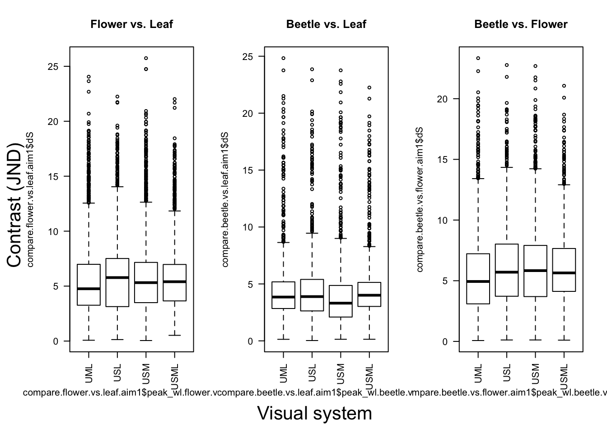
Twilight
par (mfrow=c(1,3),oma=c(2,2,0,0))
boxplot(compare.flower.vs.leaf_twilight.aim1$dS~compare.flower.vs.leaf_twilight.aim1$peak_wl.flower.vs.leaf, las=2,
main = "Flower vs. Leaf",
names=c("UML", "USL", "USM", "USML"))
boxplot(compare.beetle.vs.leaf_twilight.aim1$dS~compare.beetle.vs.leaf_twilight.aim1$peak_wl.beetle.vs.leaf, las=2,
main = "Beetle vs. Leaf",
names=c("UML", "USL", "USM", "USML"))
boxplot(compare.beetle.vs.flower_twilight.aim1$dS~compare.beetle.vs.flower_twilight.aim1$peak_wl.beetle.vs.flower, las=2,
main = "Beetle vs. Flower",
names=c("UML", "USL", "USM", "USML"))
mtext("Visual system",side=1,line=0,outer=TRUE,cex=1.3)
mtext("Contrast (JND)",side=2,line=0,outer=TRUE,cex=1.3,las=0)
Aim 2
D65
par (mfrow=c(1,3),oma=c(2,2,0,0))
boxplot(compare.flower.vs.leaf.aim2$dS~compare.flower.vs.leaf.aim2$peak_wl.flower.vs.leaf, las=2,
main = "Flower vs. Leaf",
names=c("VS 580", "VS 600", "VS 620", "VS 640", "VS 660"))
boxplot(compare.beetle.vs.leaf.aim2$dS~compare.beetle.vs.leaf.aim2$peak_wl.beetle.vs.leaf, las=2,
main = "Beetle vs. Leaf",
names=c("VS 580", "VS 600", "VS 620", "VS 640", "VS 660"))
boxplot(compare.beetle.vs.flower.aim2$dS~compare.beetle.vs.flower.aim2$peak_wl.beetle.vs.flower, las=2,
main = "Beetle vs. Flower",
names=c("VS 580", "VS 600", "VS 620", "VS 640", "VS 660"))
mtext("Visual system",side=1,line=0,outer=TRUE,cex=1.3)
mtext("Contrast (JND)",side=2,line=0,outer=TRUE,cex=1.3,las=0)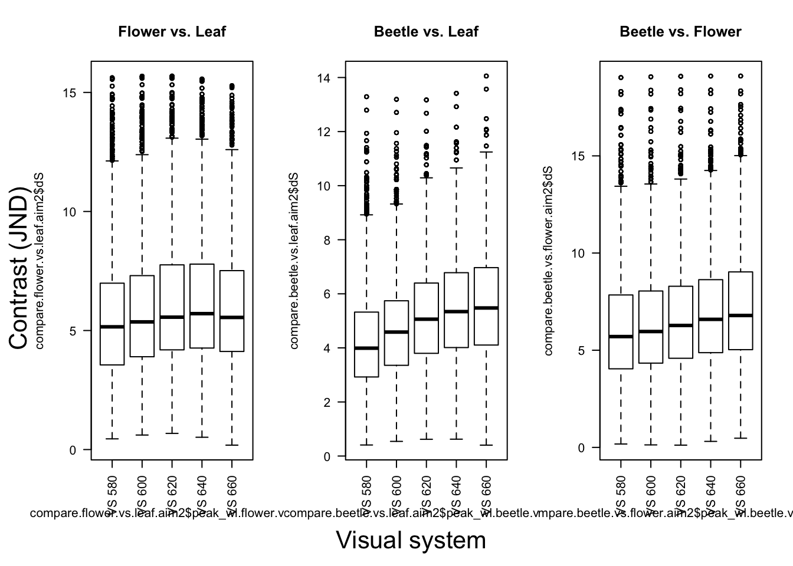
Twilight
par (mfrow=c(1,3),oma=c(2,2,0,0))
boxplot(compare.flower.vs.leaf_twilight.aim2$dS~compare.flower.vs.leaf_twilight.aim2$peak_wl.flower.vs.leaf, las=2,
main = "Flower vs. Leaf",
names=c("VS 580", "VS 600", "VS 620", "VS 640", "VS 660"))
boxplot(compare.beetle.vs.leaf_twilight.aim2$dS~compare.beetle.vs.leaf_twilight.aim2$peak_wl.beetle.vs.leaf, las=2,
main = "Beetle vs. Leaf",
names=c("VS 580", "VS 600", "VS 620", "VS 640", "VS 660"))
boxplot(compare.beetle.vs.flower_twilight.aim2$dS~compare.beetle.vs.flower_twilight.aim2$peak_wl.beetle.vs.flower, las=2,
main = "Beetle vs. Flower",
names=c("VS 580", "VS 600", "VS 620", "VS 640", "VS 660"))
mtext("Visual system",side=1,line=0,outer=TRUE,cex=1.3)
mtext("Contrast (JND)",side=2,line=0,outer=TRUE,cex=1.3,las=0)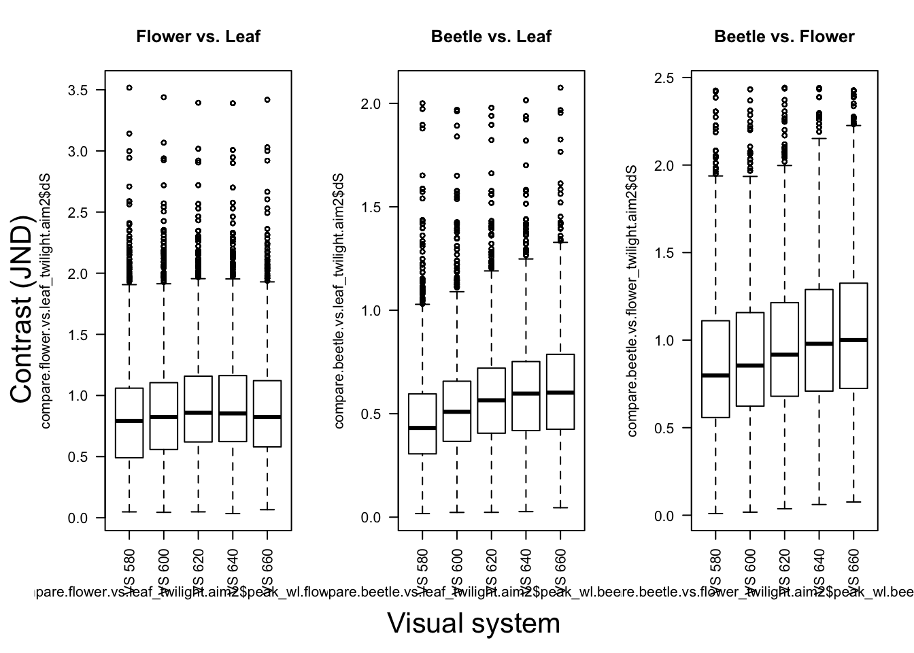
GLMM results
#GLMM - D65 - Aim 1
##Flower vs. Leaf
m.flower.vs.leaf_d65.aim1 <- lmer(dS~peak_wl.flower.vs.leaf + (1|patch2) + (1|patch1), data = compare.flower.vs.leaf.aim1,REML=F)
sum.flower.vs.leaf_d65.aim1<-summary(glht(m.flower.vs.leaf_d65.aim1, linfct = mcp(peak_wl.flower.vs.leaf = "Tukey")), test = adjusted("bonferroni"))
#REML=F, in order to fit the model using the likelihood ratio test. Otherwise, the lmer default will fit the model using the REML (REstricted Maximum Likelihood) criterion.
##Beetle vs. Leaf
m.beetle.vs.leaf_d65.aim1 <- lmer(dS~peak_wl.beetle.vs.leaf + (1|patch2) + (1|patch1), data = compare.beetle.vs.leaf.aim1,REML=F)
sum.beetle.vs.leaf_d65.aim1 <- summary(glht(m.beetle.vs.leaf_d65.aim1, linfct = mcp(peak_wl.beetle.vs.leaf = "Tukey")), test = adjusted("bonferroni"))
##Beetle vs. Flower
m.beetle.vs.flower_d65.aim1 <- lmer(dS~peak_wl.beetle.vs.flower + (1|patch2) + (1|patch1), data = compare.beetle.vs.flower.aim1,REML=F)
sum.beetle.vs.flower_d65.aim1 <-summary(glht(m.beetle.vs.flower_d65.aim1, linfct = mcp(peak_wl.beetle.vs.flower = "Tukey")), test = adjusted("bonferroni"))
###reshape data for heatmap
p1_d65.aim1<-sum.flower.vs.leaf_d65.aim1[["test"]][["pvalues"]]
p2_d65.aim1<-sum.beetle.vs.leaf_d65.aim1[["test"]][["pvalues"]]
p3_d65.aim1<-sum.beetle.vs.flower_d65.aim1[["test"]][["pvalues"]]
VislistA_d65.aim1<-c("USL", "USM","USML","USM","USML","USML")
VislistB_d65.aim1<-c("UML", "UML","UML","USL","USL","USM")
heat_d65.aim1<-data.frame(names(p1_d65.aim1),as.numeric(str_extract(p1_d65.aim1,"([0-9]+).*$"))) %>%
cbind(as.numeric(str_extract(p2_d65.aim1,"([0-9]+).*$"))) %>%
cbind(as.numeric(str_extract(p3_d65.aim1,"([0-9]+).*$"))) %>%
dplyr:: rename(orignial.list = 1, flower.vs.leaf = 2, beetle.vs.leaf = 3, beetle.vs.flower = 4) %>%
cbind(VislistA_d65.aim1) %>%
cbind(VislistB_d65.aim1) %>%
dplyr::select(-orignial.list)
##add asterisks for significant pairs
heat_d65.aim1$sig.flower.vs.leaf[heat_d65.aim1$flower.vs.leaf > 0.05] <- ""
heat_d65.aim1$sig.flower.vs.leaf[heat_d65.aim1$flower.vs.leaf < 0.05] <- "*"
heat_d65.aim1$sig.flower.vs.leaf[heat_d65.aim1$flower.vs.leaf < 0.01] <- "**"
heat_d65.aim1$sig.flower.vs.leaf[heat_d65.aim1$flower.vs.leaf < 0.0001] <- "***"
heat_d65.aim1$sig.beetle.vs.leaf[heat_d65.aim1$beetle.vs.leaf > 0.05] <- ""
heat_d65.aim1$sig.beetle.vs.leaf[heat_d65.aim1$beetle.vs.leaf < 0.05] <- "*"
heat_d65.aim1$sig.beetle.vs.leaf[heat_d65.aim1$beetle.vs.leaf < 0.01] <- "**"
heat_d65.aim1$sig.beetle.vs.leaf[heat_d65.aim1$beetle.vs.leaf < 0.0001] <- "***"
heat_d65.aim1$sig.beetle.vs.flower[heat_d65.aim1$beetle.vs.flower > 0.05] <- ""
heat_d65.aim1$sig.beetle.vs.flower[heat_d65.aim1$beetle.vs.flower < 0.05] <- "*"
heat_d65.aim1$sig.beetle.vs.flower[heat_d65.aim1$beetle.vs.flower < 0.01] <- "**"
heat_d65.aim1$sig.beetle.vs.flower[heat_d65.aim1$beetle.vs.flower < 0.0001] <- "***"
#GLMM - D65 - Aim 2
##Flower vs. Leaf
m.flower.vs.leaf_d65.aim2 <- lmer(dS~peak_wl.flower.vs.leaf + (1|patch2) + (1|patch1), data = compare.flower.vs.leaf.aim2,REML=F)
sum.flower.vs.leaf_d65.aim2 <- summary(glht(m.flower.vs.leaf_d65.aim2, linfct = mcp(peak_wl.flower.vs.leaf = "Tukey")), test = adjusted("bonferroni"))
##Beetle vs. Leaf
m.beetle.vs.leaf_d65.aim2 <- lmer(dS~peak_wl.beetle.vs.leaf + (1|patch2) + (1|patch1), data = compare.beetle.vs.leaf.aim2,REML=F)
sum.beetle.vs.leaf_d65.aim2 <- summary(glht(m.beetle.vs.leaf_d65.aim2, linfct = mcp(peak_wl.beetle.vs.leaf = "Tukey")), test = adjusted("bonferroni"))
##Beetle vs. Flower
m.beetle.vs.flower_d65.aim2 <- lmer(dS~peak_wl.beetle.vs.flower + (1|patch2) + (1|patch1), data = compare.beetle.vs.flower.aim2,REML=F)
sum.beetle.vs.flower_d65.aim2 <- summary(glht(m.beetle.vs.flower_d65.aim2, linfct = mcp(peak_wl.beetle.vs.flower = "Tukey")), test = adjusted("bonferroni"))
###reshape data for heatmap
p1_d65.aim2<-sum.flower.vs.leaf_d65.aim2[["test"]][["pvalues"]]
p2_d65.aim2<-sum.beetle.vs.leaf_d65.aim2[["test"]][["pvalues"]]
p3_d65.aim2<-sum.beetle.vs.flower_d65.aim2[["test"]][["pvalues"]]
VislistA_d65.aim2<-c("VS 600", "VS 620","VS 640","VS 660","VS 620","VS 640","VS 660","VS 640","VS 660","VS 660")
VislistB_d65.aim2<-c("VS 580","VS 580","VS 580","VS 580","VS 600","VS 600","VS 600","VS 620","VS 620","VS 640")
heat_d65.aim2<-data.frame(names(p1_d65.aim2),as.numeric(str_extract(p1_d65.aim2,"([0-9]+).*$"))) %>%
cbind(as.numeric(str_extract(p2_d65.aim2,"([0-9]+).*$"))) %>%
cbind(as.numeric(str_extract(p3_d65.aim2,"([0-9]+).*$"))) %>%
dplyr:: rename(orignial.list = 1, flower.vs.leaf = 2, beetle.vs.leaf = 3, beetle.vs.flower = 4) %>%
cbind(VislistA_d65.aim2) %>%
cbind(VislistB_d65.aim2) %>%
dplyr::select(-orignial.list)
##add asterisks for significant pairs
heat_d65.aim2$sig.flower.vs.leaf[heat_d65.aim2$flower.vs.leaf > 0.05] <- ""
heat_d65.aim2$sig.flower.vs.leaf[heat_d65.aim2$flower.vs.leaf < 0.05] <- "*"
heat_d65.aim2$sig.flower.vs.leaf[heat_d65.aim2$flower.vs.leaf < 0.01] <- "**"
heat_d65.aim2$sig.flower.vs.leaf[heat_d65.aim2$flower.vs.leaf < 0.0001] <- "***"
heat_d65.aim2$sig.beetle.vs.leaf[heat_d65.aim2$beetle.vs.leaf > 0.05] <- ""
heat_d65.aim2$sig.beetle.vs.leaf[heat_d65.aim2$beetle.vs.leaf < 0.05] <- "*"
heat_d65.aim2$sig.beetle.vs.leaf[heat_d65.aim2$beetle.vs.leaf < 0.01] <- "**"
heat_d65.aim2$sig.beetle.vs.leaf[heat_d65.aim2$beetle.vs.leaf < 0.0001] <- "***"
heat_d65.aim2$sig.beetle.vs.flower[heat_d65.aim2$beetle.vs.flower > 0.05] <- ""
heat_d65.aim2$sig.beetle.vs.flower[heat_d65.aim2$beetle.vs.flower < 0.05] <- "*"
heat_d65.aim2$sig.beetle.vs.flower[heat_d65.aim2$beetle.vs.flower < 0.01] <- "**"
heat_d65.aim2$sig.beetle.vs.flower[heat_d65.aim2$beetle.vs.flower < 0.0001] <- "***"
#GLMM - Twilight - Aim 1
##Flower vs. Leaf
m.flower.vs.leaf_twilight.aim1 <- lmer(dS~peak_wl.flower.vs.leaf + (1|patch2) + (1|patch1), data = compare.flower.vs.leaf_twilight.aim1,REML=F)
sum.flower.vs.leaf_twilight.aim1 <- summary(glht(m.flower.vs.leaf_twilight.aim1, linfct = mcp(peak_wl.flower.vs.leaf = "Tukey")), test = adjusted("bonferroni"))
##Beetle vs. Leaf
m.beetle.vs.leaf_twilight.aim1 <- lmer(dS~peak_wl.beetle.vs.leaf + (1|patch2) + (1|patch1), data = compare.beetle.vs.leaf_twilight.aim1,REML=F)
sum.beetle.vs.leaf_twilight.aim1<-summary(glht(m.beetle.vs.leaf_twilight.aim1, linfct = mcp(peak_wl.beetle.vs.leaf = "Tukey")), test = adjusted("bonferroni"))
##Beetle vs. Flower
m.beetle.vs.flower_twilight.aim1 <- lmer(dS~peak_wl.beetle.vs.flower + (1|patch2) + (1|patch1), data = compare.beetle.vs.flower_twilight.aim1,REML=F)
sum.beetle.vs.flower_twilight.aim1<-summary(glht(m.beetle.vs.flower_twilight.aim1, linfct = mcp(peak_wl.beetle.vs.flower = "Tukey")), test = adjusted("bonferroni"))
###reshape data for heatmap
p1_twilight.aim1<-sum.flower.vs.leaf_twilight.aim1[["test"]][["pvalues"]]
p2_twilight.aim1<-sum.beetle.vs.leaf_twilight.aim1[["test"]][["pvalues"]]
p3_twilight.aim1<-sum.beetle.vs.flower_twilight.aim1[["test"]][["pvalues"]]
VislistA_twilight.aim1<-c("USL", "USM","USML","USM","USML","USML")
VislistB_twilight.aim1<-c("UML", "UML","UML","USL","USL","USM")
heat_twilight.aim1<-data.frame(names(p1_twilight.aim1),as.numeric(str_extract(p1_twilight.aim1,"([0-9]+).*$"))) %>%
cbind(as.numeric(str_extract(p2_twilight.aim1,"([0-9]+).*$"))) %>%
cbind(as.numeric(str_extract(p3_twilight.aim1,"([0-9]+).*$"))) %>%
dplyr:: rename(orignial.list = 1, flower.vs.leaf = 2, beetle.vs.leaf = 3, beetle.vs.flower = 4) %>%
cbind(VislistA_twilight.aim1) %>%
cbind(VislistB_twilight.aim1) %>%
dplyr::select(-orignial.list)
##add asterisks for significant pairs
heat_twilight.aim1$sig.flower.vs.leaf[heat_twilight.aim1$flower.vs.leaf > 0.05] <- ""
heat_twilight.aim1$sig.flower.vs.leaf[heat_twilight.aim1$flower.vs.leaf < 0.05] <- "*"
heat_twilight.aim1$sig.flower.vs.leaf[heat_twilight.aim1$flower.vs.leaf < 0.01] <- "**"
heat_twilight.aim1$sig.flower.vs.leaf[heat_twilight.aim1$flower.vs.leaf < 0.0001] <- "***"
heat_twilight.aim1$sig.beetle.vs.leaf[heat_twilight.aim1$beetle.vs.leaf > 0.05] <- ""
heat_twilight.aim1$sig.beetle.vs.leaf[heat_twilight.aim1$beetle.vs.leaf < 0.05] <- "*"
heat_twilight.aim1$sig.beetle.vs.leaf[heat_twilight.aim1$beetle.vs.leaf < 0.01] <- "**"
heat_twilight.aim1$sig.beetle.vs.leaf[heat_twilight.aim1$beetle.vs.leaf < 0.0001] <- "***"
heat_twilight.aim1$sig.beetle.vs.flower[heat_twilight.aim1$beetle.vs.flower > 0.05] <- ""
heat_twilight.aim1$sig.beetle.vs.flower[heat_twilight.aim1$beetle.vs.flower < 0.05] <- "*"
heat_twilight.aim1$sig.beetle.vs.flower[heat_twilight.aim1$beetle.vs.flower < 0.01] <- "**"
heat_twilight.aim1$sig.beetle.vs.flower[heat_twilight.aim1$beetle.vs.flower < 0.0001] <- "***"
#GLMM - Twilight - Aim 2
##Flower vs. Leaf
m.flower.vs.leaf_twilight.aim2 <- lmer(dS~peak_wl.flower.vs.leaf + (1|patch2) + (1|patch1), data = compare.flower.vs.leaf_twilight.aim2,REML=F)
sum.flower.vs.leaf_twilight.aim2 <- summary(glht(m.flower.vs.leaf_twilight.aim2, linfct = mcp(peak_wl.flower.vs.leaf = "Tukey")), test = adjusted("bonferroni"))
##Beetle vs. Leaf
m.beetle.vs.leaf_twilight.aim2 <- lmer(dS~peak_wl.beetle.vs.leaf + (1|patch2) + (1|patch1), data = compare.beetle.vs.leaf_twilight.aim2,REML=F)
sum.beetle.vs.leaf_twilight.aim2 <- summary(glht(m.beetle.vs.leaf_twilight.aim2, linfct = mcp(peak_wl.beetle.vs.leaf = "Tukey")), test = adjusted("bonferroni"))
##Beetle vs. Flower
m.beetle.vs.flower_twilight.aim2 <- lmer(dS~peak_wl.beetle.vs.flower + (1|patch2) + (1|patch1), data = compare.beetle.vs.flower_twilight.aim2,REML=F)
sum.beetle.vs.flower_twilight.aim2 <-summary(glht(m.beetle.vs.flower_twilight.aim2, linfct = mcp(peak_wl.beetle.vs.flower = "Tukey")), test = adjusted("bonferroni"))
###reshape data for heatmap
p1_twilight.aim2<-sum.flower.vs.leaf_twilight.aim2[["test"]][["pvalues"]]
p2_twilight.aim2<-sum.beetle.vs.leaf_twilight.aim2[["test"]][["pvalues"]]
p3_twilight.aim2<-sum.beetle.vs.flower_twilight.aim2[["test"]][["pvalues"]]
VislistA_twilight.aim2<-c("VS 600", "VS 620","VS 640","VS 660","VS 620","VS 640","VS 660","VS 640","VS 660","VS 660")
VislistB_twilight.aim2<-c("VS 580","VS 580","VS 580","VS 580","VS 600","VS 600","VS 600","VS 620","VS 620","VS 640")
heat_twilight.aim2<-data.frame(names(p1_twilight.aim2),as.numeric(str_extract(p1_twilight.aim2,"([0-9]+).*$"))) %>%
cbind(as.numeric(str_extract(p2_twilight.aim2,"([0-9]+).*$"))) %>%
cbind(as.numeric(str_extract(p3_twilight.aim2,"([0-9]+).*$"))) %>%
dplyr:: rename(orignial.list = 1, flower.vs.leaf = 2, beetle.vs.leaf = 3, beetle.vs.flower = 4) %>%
cbind(VislistA_twilight.aim2) %>%
cbind(VislistB_twilight.aim2) %>%
dplyr::select(-orignial.list)
##add asterisks for significant pairs
heat_twilight.aim2$sig.flower.vs.leaf[heat_twilight.aim2$flower.vs.leaf > 0.05] <- ""
heat_twilight.aim2$sig.flower.vs.leaf[heat_twilight.aim2$flower.vs.leaf < 0.05] <- "*"
heat_twilight.aim2$sig.flower.vs.leaf[heat_twilight.aim2$flower.vs.leaf < 0.01] <- "**"
heat_twilight.aim2$sig.flower.vs.leaf[heat_twilight.aim2$flower.vs.leaf < 0.0001] <- "***"
heat_twilight.aim2$sig.beetle.vs.leaf[heat_twilight.aim2$beetle.vs.leaf > 0.05] <- ""
heat_twilight.aim2$sig.beetle.vs.leaf[heat_twilight.aim2$beetle.vs.leaf < 0.05] <- "*"
heat_twilight.aim2$sig.beetle.vs.leaf[heat_twilight.aim2$beetle.vs.leaf < 0.01] <- "**"
heat_twilight.aim2$sig.beetle.vs.leaf[heat_twilight.aim2$beetle.vs.leaf < 0.0001] <- "***"
heat_twilight.aim2$sig.beetle.vs.flower[heat_twilight.aim2$beetle.vs.flower > 0.05] <- ""
heat_twilight.aim2$sig.beetle.vs.flower[heat_twilight.aim2$beetle.vs.flower < 0.05] <- "*"
heat_twilight.aim2$sig.beetle.vs.flower[heat_twilight.aim2$beetle.vs.flower < 0.01] <- "**"
heat_twilight.aim2$sig.beetle.vs.flower[heat_twilight.aim2$beetle.vs.flower < 0.0001] <- "***"Results of Aim 1: comparing visual systems with different photoreceptor combinations
Click the tabs to see the results for each comparison group ( Flower vs. Leaf / Beetle vs. Leaf / Beetle vs. Flower) and under different light conditions ( Daylight / Twilight)
Flower vs. Leaf
Daylight
| Chisq | Df | Pr(>Chisq) | |
|---|---|---|---|
| peak_wl.flower.vs.leaf | 46.46 | 3 | 4.524e-10 |
Click the tabs to see posthoc results ( p-value summary plot / original model output )
Pair-wise p-values
ggplot(data = heat_d65.aim1, aes(x=VislistA_d65.aim1, y=VislistB_d65.aim1, fill=flower.vs.leaf)) +
geom_tile(colour="white", size = 4)+
geom_text(aes(VislistA_d65.aim1, VislistB_d65.aim1, label = paste(format(round(flower.vs.leaf, 2), nsmall = 2), sig.flower.vs.leaf)))+
scale_fill_continuous(high = "#132B43", low = "#56B1F7", limit=c(0,1))+ #delete if want to reverse the colour
theme_bw()+
theme(axis.title.x=element_blank(),
axis.title.y=element_blank(),
panel.grid = element_blank(),
panel.border = element_blank(),
axis.ticks = element_blank() )+
labs(fill = "p vaalue")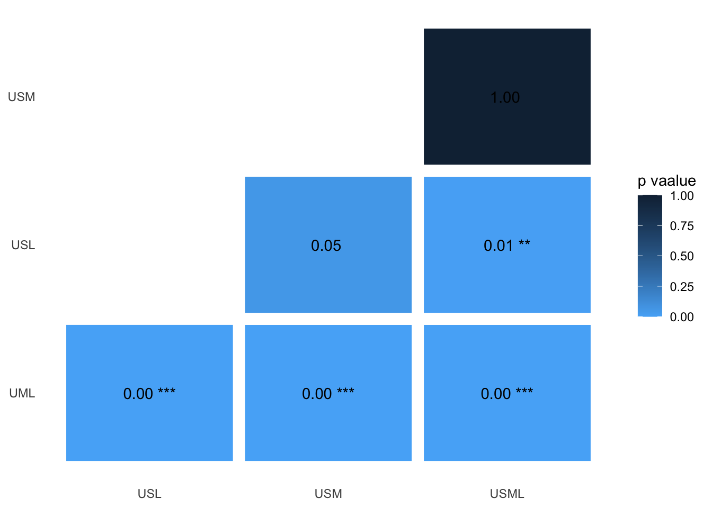
Original model output
##
## Simultaneous Tests for General Linear Hypotheses
##
## Multiple Comparisons of Means: Tukey Contrasts
##
##
## Fit: lmer(formula = dS ~ peak_wl.flower.vs.leaf + (1 | patch2) + (1 |
## patch1), data = compare.flower.vs.leaf.aim1, REML = F)
##
## Linear Hypotheses:
## Estimate
## contrast.UVSW..LW.flower.vs.leaf - contrast.UV..MWLW.flower.vs.leaf == 0 0.32859
## contrast.UVSWMW...flower.vs.leaf - contrast.UV..MWLW.flower.vs.leaf == 0 0.34351
## contrast.UVSWMWLW.flower.vs.leaf - contrast.UV..MWLW.flower.vs.leaf == 0 0.26348
## contrast.UVSWMW...flower.vs.leaf - contrast.UVSW..LW.flower.vs.leaf == 0 0.01492
## contrast.UVSWMWLW.flower.vs.leaf - contrast.UVSW..LW.flower.vs.leaf == 0 -0.06510
## contrast.UVSWMWLW.flower.vs.leaf - contrast.UVSWMW...flower.vs.leaf == 0 -0.08003
## Std. Error
## contrast.UVSW..LW.flower.vs.leaf - contrast.UV..MWLW.flower.vs.leaf == 0 0.05741
## contrast.UVSWMW...flower.vs.leaf - contrast.UV..MWLW.flower.vs.leaf == 0 0.05741
## contrast.UVSWMWLW.flower.vs.leaf - contrast.UV..MWLW.flower.vs.leaf == 0 0.05741
## contrast.UVSWMW...flower.vs.leaf - contrast.UVSW..LW.flower.vs.leaf == 0 0.05741
## contrast.UVSWMWLW.flower.vs.leaf - contrast.UVSW..LW.flower.vs.leaf == 0 0.05741
## contrast.UVSWMWLW.flower.vs.leaf - contrast.UVSWMW...flower.vs.leaf == 0 0.05741
## z value
## contrast.UVSW..LW.flower.vs.leaf - contrast.UV..MWLW.flower.vs.leaf == 0 5.724
## contrast.UVSWMW...flower.vs.leaf - contrast.UV..MWLW.flower.vs.leaf == 0 5.984
## contrast.UVSWMWLW.flower.vs.leaf - contrast.UV..MWLW.flower.vs.leaf == 0 4.590
## contrast.UVSWMW...flower.vs.leaf - contrast.UVSW..LW.flower.vs.leaf == 0 0.260
## contrast.UVSWMWLW.flower.vs.leaf - contrast.UVSW..LW.flower.vs.leaf == 0 -1.134
## contrast.UVSWMWLW.flower.vs.leaf - contrast.UVSWMW...flower.vs.leaf == 0 -1.394
## Pr(>|z|)
## contrast.UVSW..LW.flower.vs.leaf - contrast.UV..MWLW.flower.vs.leaf == 0 6.26e-08
## contrast.UVSWMW...flower.vs.leaf - contrast.UV..MWLW.flower.vs.leaf == 0 1.31e-08
## contrast.UVSWMWLW.flower.vs.leaf - contrast.UV..MWLW.flower.vs.leaf == 0 2.67e-05
## contrast.UVSWMW...flower.vs.leaf - contrast.UVSW..LW.flower.vs.leaf == 0 1.00
## contrast.UVSWMWLW.flower.vs.leaf - contrast.UVSW..LW.flower.vs.leaf == 0 1.00
## contrast.UVSWMWLW.flower.vs.leaf - contrast.UVSWMW...flower.vs.leaf == 0 0.98
##
## contrast.UVSW..LW.flower.vs.leaf - contrast.UV..MWLW.flower.vs.leaf == 0 ***
## contrast.UVSWMW...flower.vs.leaf - contrast.UV..MWLW.flower.vs.leaf == 0 ***
## contrast.UVSWMWLW.flower.vs.leaf - contrast.UV..MWLW.flower.vs.leaf == 0 ***
## contrast.UVSWMW...flower.vs.leaf - contrast.UVSW..LW.flower.vs.leaf == 0
## contrast.UVSWMWLW.flower.vs.leaf - contrast.UVSW..LW.flower.vs.leaf == 0
## contrast.UVSWMWLW.flower.vs.leaf - contrast.UVSWMW...flower.vs.leaf == 0
## ---
## Signif. codes: 0 '***' 0.001 '**' 0.01 '*' 0.05 '.' 0.1 ' ' 1
## (Adjusted p values reported -- bonferroni method)Twilight
| Chisq | Df | Pr(>Chisq) | |
|---|---|---|---|
| peak_wl.flower.vs.leaf | 406.9 | 3 | 6.953e-88 |
Click the tabs to see posthoc results ( p-value summary plot / original model output )
Pair-wise p-values
ggplot(data = heat_twilight.aim1, aes(x=VislistA_twilight.aim1, y=VislistB_twilight.aim1, fill=flower.vs.leaf)) +
geom_tile(colour="white", size = 4)+
geom_text(aes(VislistA_twilight.aim1, VislistB_twilight.aim1, label = paste(format(round(flower.vs.leaf, 2), nsmall = 2), sig.flower.vs.leaf)))+
scale_fill_continuous(high = "#132B43", low = "#56B1F7", limit=c(0,1))+ #delete if want to reverse the colour
theme_bw()+
theme(axis.title.x=element_blank(),
axis.title.y=element_blank(),
panel.grid = element_blank(),
panel.border = element_blank(),
axis.ticks = element_blank() )+
labs(fill = "p vaalue")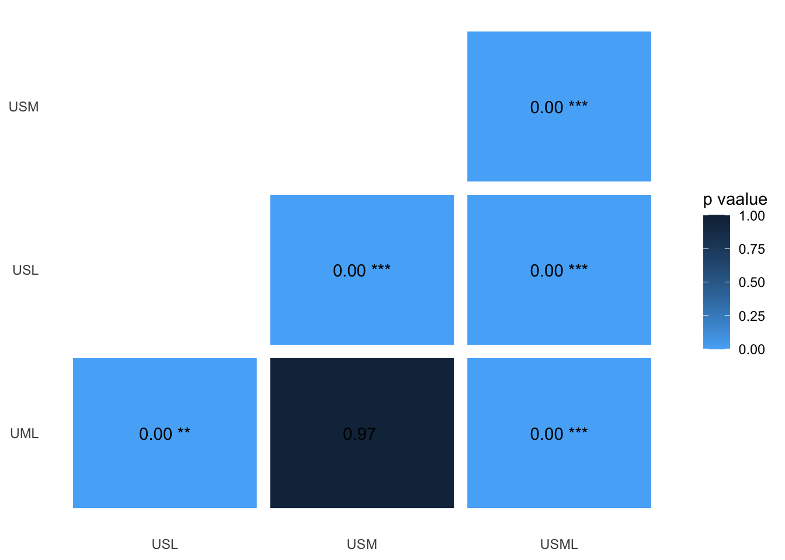
Original model output
##
## Simultaneous Tests for General Linear Hypotheses
##
## Multiple Comparisons of Means: Tukey Contrasts
##
##
## Fit: lmer(formula = dS ~ peak_wl.flower.vs.leaf + (1 | patch2) + (1 |
## patch1), data = compare.flower.vs.leaf_twilight.aim1, REML = F)
##
## Linear Hypotheses:
## Estimate
## contrast.UVSW..LW.flower.vs.leaf_twilight - contrast.UV..MWLW.flower.vs.leaf_twilight == 0 0.031042
## contrast.UVSWMW...flower.vs.leaf_twilight - contrast.UV..MWLW.flower.vs.leaf_twilight == 0 -0.010646
## contrast.UVSWMWLW.flower.vs.leaf_twilight - contrast.UV..MWLW.flower.vs.leaf_twilight == 0 0.127785
## contrast.UVSWMW...flower.vs.leaf_twilight - contrast.UVSW..LW.flower.vs.leaf_twilight == 0 -0.041688
## contrast.UVSWMWLW.flower.vs.leaf_twilight - contrast.UVSW..LW.flower.vs.leaf_twilight == 0 0.096743
## contrast.UVSWMWLW.flower.vs.leaf_twilight - contrast.UVSWMW...flower.vs.leaf_twilight == 0 0.138430
## Std. Error
## contrast.UVSW..LW.flower.vs.leaf_twilight - contrast.UV..MWLW.flower.vs.leaf_twilight == 0 0.007653
## contrast.UVSWMW...flower.vs.leaf_twilight - contrast.UV..MWLW.flower.vs.leaf_twilight == 0 0.007653
## contrast.UVSWMWLW.flower.vs.leaf_twilight - contrast.UV..MWLW.flower.vs.leaf_twilight == 0 0.007653
## contrast.UVSWMW...flower.vs.leaf_twilight - contrast.UVSW..LW.flower.vs.leaf_twilight == 0 0.007653
## contrast.UVSWMWLW.flower.vs.leaf_twilight - contrast.UVSW..LW.flower.vs.leaf_twilight == 0 0.007653
## contrast.UVSWMWLW.flower.vs.leaf_twilight - contrast.UVSWMW...flower.vs.leaf_twilight == 0 0.007653
## z value
## contrast.UVSW..LW.flower.vs.leaf_twilight - contrast.UV..MWLW.flower.vs.leaf_twilight == 0 4.056
## contrast.UVSWMW...flower.vs.leaf_twilight - contrast.UV..MWLW.flower.vs.leaf_twilight == 0 -1.391
## contrast.UVSWMWLW.flower.vs.leaf_twilight - contrast.UV..MWLW.flower.vs.leaf_twilight == 0 16.698
## contrast.UVSWMW...flower.vs.leaf_twilight - contrast.UVSW..LW.flower.vs.leaf_twilight == 0 -5.447
## contrast.UVSWMWLW.flower.vs.leaf_twilight - contrast.UVSW..LW.flower.vs.leaf_twilight == 0 12.641
## contrast.UVSWMWLW.flower.vs.leaf_twilight - contrast.UVSWMW...flower.vs.leaf_twilight == 0 18.089
## Pr(>|z|)
## contrast.UVSW..LW.flower.vs.leaf_twilight - contrast.UV..MWLW.flower.vs.leaf_twilight == 0 0.000299
## contrast.UVSWMW...flower.vs.leaf_twilight - contrast.UV..MWLW.flower.vs.leaf_twilight == 0 0.985258
## contrast.UVSWMWLW.flower.vs.leaf_twilight - contrast.UV..MWLW.flower.vs.leaf_twilight == 0 < 2e-16
## contrast.UVSWMW...flower.vs.leaf_twilight - contrast.UVSW..LW.flower.vs.leaf_twilight == 0 3.07e-07
## contrast.UVSWMWLW.flower.vs.leaf_twilight - contrast.UVSW..LW.flower.vs.leaf_twilight == 0 < 2e-16
## contrast.UVSWMWLW.flower.vs.leaf_twilight - contrast.UVSWMW...flower.vs.leaf_twilight == 0 < 2e-16
##
## contrast.UVSW..LW.flower.vs.leaf_twilight - contrast.UV..MWLW.flower.vs.leaf_twilight == 0 ***
## contrast.UVSWMW...flower.vs.leaf_twilight - contrast.UV..MWLW.flower.vs.leaf_twilight == 0
## contrast.UVSWMWLW.flower.vs.leaf_twilight - contrast.UV..MWLW.flower.vs.leaf_twilight == 0 ***
## contrast.UVSWMW...flower.vs.leaf_twilight - contrast.UVSW..LW.flower.vs.leaf_twilight == 0 ***
## contrast.UVSWMWLW.flower.vs.leaf_twilight - contrast.UVSW..LW.flower.vs.leaf_twilight == 0 ***
## contrast.UVSWMWLW.flower.vs.leaf_twilight - contrast.UVSWMW...flower.vs.leaf_twilight == 0 ***
## ---
## Signif. codes: 0 '***' 0.001 '**' 0.01 '*' 0.05 '.' 0.1 ' ' 1
## (Adjusted p values reported -- bonferroni method)Beetle vs. Leaf
Daylight
| Chisq | Df | Pr(>Chisq) | |
|---|---|---|---|
| peak_wl.beetle.vs.leaf | 147.4 | 3 | 9.691e-32 |
Click the tabs to see posthoc results ( p-value summary plot / original model output )
Pair-wise p-values
ggplot(data = heat_d65.aim1, aes(x=VislistA_d65.aim1, y=VislistB_d65.aim1, fill=beetle.vs.leaf)) +
geom_tile(colour="white", size = 4)+
geom_text(aes(VislistA_d65.aim1, VislistB_d65.aim1, label = paste(format(round(beetle.vs.leaf, 2), nsmall = 2), sig.beetle.vs.leaf))) +
scale_fill_continuous(high = "#132B43", low = "#56B1F7", limit=c(0,1))+ #delete if want to reverse the colour
theme_bw()+
theme(axis.title.x=element_blank(),
axis.title.y=element_blank(),
panel.grid = element_blank(),
panel.border = element_blank(),
axis.ticks = element_blank() )+
labs(fill = "p vaalue")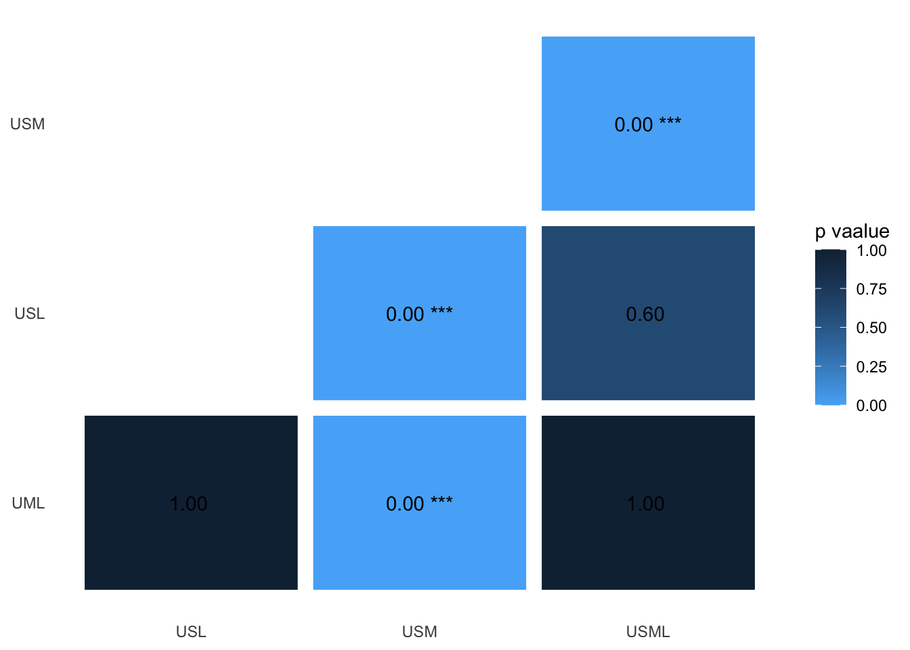
Original model output
##
## Simultaneous Tests for General Linear Hypotheses
##
## Multiple Comparisons of Means: Tukey Contrasts
##
##
## Fit: lmer(formula = dS ~ peak_wl.beetle.vs.leaf + (1 | patch2) + (1 |
## patch1), data = compare.beetle.vs.leaf.aim1, REML = F)
##
## Linear Hypotheses:
## Estimate
## contrast.UVSW..LW.beetle.vs.leaf - contrast.UV..MWLW.beetle.vs.leaf == 0 -0.01336
## contrast.UVSWMW...beetle.vs.leaf - contrast.UV..MWLW.beetle.vs.leaf == 0 -0.48983
## contrast.UVSWMWLW.beetle.vs.leaf - contrast.UV..MWLW.beetle.vs.leaf == 0 0.01423
## contrast.UVSWMW...beetle.vs.leaf - contrast.UVSW..LW.beetle.vs.leaf == 0 -0.47646
## contrast.UVSWMWLW.beetle.vs.leaf - contrast.UVSW..LW.beetle.vs.leaf == 0 0.02759
## contrast.UVSWMWLW.beetle.vs.leaf - contrast.UVSWMW...beetle.vs.leaf == 0 0.50405
## Std. Error
## contrast.UVSW..LW.beetle.vs.leaf - contrast.UV..MWLW.beetle.vs.leaf == 0 0.04950
## contrast.UVSWMW...beetle.vs.leaf - contrast.UV..MWLW.beetle.vs.leaf == 0 0.04950
## contrast.UVSWMWLW.beetle.vs.leaf - contrast.UV..MWLW.beetle.vs.leaf == 0 0.04950
## contrast.UVSWMW...beetle.vs.leaf - contrast.UVSW..LW.beetle.vs.leaf == 0 0.04950
## contrast.UVSWMWLW.beetle.vs.leaf - contrast.UVSW..LW.beetle.vs.leaf == 0 0.04950
## contrast.UVSWMWLW.beetle.vs.leaf - contrast.UVSWMW...beetle.vs.leaf == 0 0.04950
## z value
## contrast.UVSW..LW.beetle.vs.leaf - contrast.UV..MWLW.beetle.vs.leaf == 0 -0.270
## contrast.UVSWMW...beetle.vs.leaf - contrast.UV..MWLW.beetle.vs.leaf == 0 -9.896
## contrast.UVSWMWLW.beetle.vs.leaf - contrast.UV..MWLW.beetle.vs.leaf == 0 0.287
## contrast.UVSWMW...beetle.vs.leaf - contrast.UVSW..LW.beetle.vs.leaf == 0 -9.626
## contrast.UVSWMWLW.beetle.vs.leaf - contrast.UVSW..LW.beetle.vs.leaf == 0 0.557
## contrast.UVSWMWLW.beetle.vs.leaf - contrast.UVSWMW...beetle.vs.leaf == 0 10.183
## Pr(>|z|)
## contrast.UVSW..LW.beetle.vs.leaf - contrast.UV..MWLW.beetle.vs.leaf == 0 1
## contrast.UVSWMW...beetle.vs.leaf - contrast.UV..MWLW.beetle.vs.leaf == 0 <2e-16
## contrast.UVSWMWLW.beetle.vs.leaf - contrast.UV..MWLW.beetle.vs.leaf == 0 1
## contrast.UVSWMW...beetle.vs.leaf - contrast.UVSW..LW.beetle.vs.leaf == 0 <2e-16
## contrast.UVSWMWLW.beetle.vs.leaf - contrast.UVSW..LW.beetle.vs.leaf == 0 1
## contrast.UVSWMWLW.beetle.vs.leaf - contrast.UVSWMW...beetle.vs.leaf == 0 <2e-16
##
## contrast.UVSW..LW.beetle.vs.leaf - contrast.UV..MWLW.beetle.vs.leaf == 0
## contrast.UVSWMW...beetle.vs.leaf - contrast.UV..MWLW.beetle.vs.leaf == 0 ***
## contrast.UVSWMWLW.beetle.vs.leaf - contrast.UV..MWLW.beetle.vs.leaf == 0
## contrast.UVSWMW...beetle.vs.leaf - contrast.UVSW..LW.beetle.vs.leaf == 0 ***
## contrast.UVSWMWLW.beetle.vs.leaf - contrast.UVSW..LW.beetle.vs.leaf == 0
## contrast.UVSWMWLW.beetle.vs.leaf - contrast.UVSWMW...beetle.vs.leaf == 0 ***
## ---
## Signif. codes: 0 '***' 0.001 '**' 0.01 '*' 0.05 '.' 0.1 ' ' 1
## (Adjusted p values reported -- bonferroni method)Twilight
| Chisq | Df | Pr(>Chisq) | |
|---|---|---|---|
| peak_wl.beetle.vs.leaf | 1027 | 3 | 2.524e-222 |
Click the tabs to see posthoc results ( p-value summary plot / original model output )
Pair-wise p-values
ggplot(data = heat_twilight.aim1, aes(x=VislistA_twilight.aim1, y=VislistB_twilight.aim1, fill=beetle.vs.leaf)) +
geom_tile(colour="white", size = 4)+
geom_text(aes(VislistA_twilight.aim1, VislistB_twilight.aim1, label = paste(format(round(beetle.vs.leaf, 2), nsmall = 2), sig.beetle.vs.leaf))) +
scale_fill_continuous(high = "#132B43", low = "#56B1F7", limit=c(0,1))+ #delete if want to reverse the colour
theme_bw()+
theme(axis.title.x=element_blank(),
axis.title.y=element_blank(),
panel.grid = element_blank(),
panel.border = element_blank(),
axis.ticks = element_blank() )+
labs(fill = "p vaalue")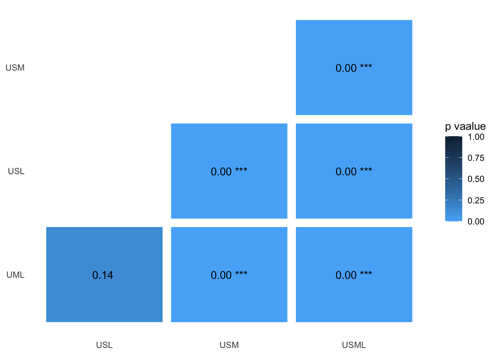
Original model output
##
## Simultaneous Tests for General Linear Hypotheses
##
## Multiple Comparisons of Means: Tukey Contrasts
##
##
## Fit: lmer(formula = dS ~ peak_wl.beetle.vs.leaf + (1 | patch2) + (1 |
## patch1), data = compare.beetle.vs.leaf_twilight.aim1, REML = F)
##
## Linear Hypotheses:
## Estimate
## contrast.UVSW..LW.beetle.vs.leaf_twilight - contrast.UV..MWLW.beetle.vs.leaf_twilight == 0 -0.011781
## contrast.UVSWMW...beetle.vs.leaf_twilight - contrast.UV..MWLW.beetle.vs.leaf_twilight == 0 -0.102044
## contrast.UVSWMWLW.beetle.vs.leaf_twilight - contrast.UV..MWLW.beetle.vs.leaf_twilight == 0 0.061908
## contrast.UVSWMW...beetle.vs.leaf_twilight - contrast.UVSW..LW.beetle.vs.leaf_twilight == 0 -0.090262
## contrast.UVSWMWLW.beetle.vs.leaf_twilight - contrast.UVSW..LW.beetle.vs.leaf_twilight == 0 0.073689
## contrast.UVSWMWLW.beetle.vs.leaf_twilight - contrast.UVSWMW...beetle.vs.leaf_twilight == 0 0.163952
## Std. Error
## contrast.UVSW..LW.beetle.vs.leaf_twilight - contrast.UV..MWLW.beetle.vs.leaf_twilight == 0 0.005167
## contrast.UVSWMW...beetle.vs.leaf_twilight - contrast.UV..MWLW.beetle.vs.leaf_twilight == 0 0.005167
## contrast.UVSWMWLW.beetle.vs.leaf_twilight - contrast.UV..MWLW.beetle.vs.leaf_twilight == 0 0.005167
## contrast.UVSWMW...beetle.vs.leaf_twilight - contrast.UVSW..LW.beetle.vs.leaf_twilight == 0 0.005167
## contrast.UVSWMWLW.beetle.vs.leaf_twilight - contrast.UVSW..LW.beetle.vs.leaf_twilight == 0 0.005167
## contrast.UVSWMWLW.beetle.vs.leaf_twilight - contrast.UVSWMW...beetle.vs.leaf_twilight == 0 0.005167
## z value
## contrast.UVSW..LW.beetle.vs.leaf_twilight - contrast.UV..MWLW.beetle.vs.leaf_twilight == 0 -2.28
## contrast.UVSWMW...beetle.vs.leaf_twilight - contrast.UV..MWLW.beetle.vs.leaf_twilight == 0 -19.75
## contrast.UVSWMWLW.beetle.vs.leaf_twilight - contrast.UV..MWLW.beetle.vs.leaf_twilight == 0 11.98
## contrast.UVSWMW...beetle.vs.leaf_twilight - contrast.UVSW..LW.beetle.vs.leaf_twilight == 0 -17.47
## contrast.UVSWMWLW.beetle.vs.leaf_twilight - contrast.UVSW..LW.beetle.vs.leaf_twilight == 0 14.26
## contrast.UVSWMWLW.beetle.vs.leaf_twilight - contrast.UVSWMW...beetle.vs.leaf_twilight == 0 31.73
## Pr(>|z|)
## contrast.UVSW..LW.beetle.vs.leaf_twilight - contrast.UV..MWLW.beetle.vs.leaf_twilight == 0 0.136
## contrast.UVSWMW...beetle.vs.leaf_twilight - contrast.UV..MWLW.beetle.vs.leaf_twilight == 0 <2e-16
## contrast.UVSWMWLW.beetle.vs.leaf_twilight - contrast.UV..MWLW.beetle.vs.leaf_twilight == 0 <2e-16
## contrast.UVSWMW...beetle.vs.leaf_twilight - contrast.UVSW..LW.beetle.vs.leaf_twilight == 0 <2e-16
## contrast.UVSWMWLW.beetle.vs.leaf_twilight - contrast.UVSW..LW.beetle.vs.leaf_twilight == 0 <2e-16
## contrast.UVSWMWLW.beetle.vs.leaf_twilight - contrast.UVSWMW...beetle.vs.leaf_twilight == 0 <2e-16
##
## contrast.UVSW..LW.beetle.vs.leaf_twilight - contrast.UV..MWLW.beetle.vs.leaf_twilight == 0
## contrast.UVSWMW...beetle.vs.leaf_twilight - contrast.UV..MWLW.beetle.vs.leaf_twilight == 0 ***
## contrast.UVSWMWLW.beetle.vs.leaf_twilight - contrast.UV..MWLW.beetle.vs.leaf_twilight == 0 ***
## contrast.UVSWMW...beetle.vs.leaf_twilight - contrast.UVSW..LW.beetle.vs.leaf_twilight == 0 ***
## contrast.UVSWMWLW.beetle.vs.leaf_twilight - contrast.UVSW..LW.beetle.vs.leaf_twilight == 0 ***
## contrast.UVSWMWLW.beetle.vs.leaf_twilight - contrast.UVSWMW...beetle.vs.leaf_twilight == 0 ***
## ---
## Signif. codes: 0 '***' 0.001 '**' 0.01 '*' 0.05 '.' 0.1 ' ' 1
## (Adjusted p values reported -- bonferroni method)Beetle vs. Flower
Daylight
| Chisq | Df | Pr(>Chisq) | |
|---|---|---|---|
| peak_wl.beetle.vs.flower | 111.8 | 3 | 4.609e-24 |
Click the tabs to see posthoc results ( p-value summary plot / original model output )
Pair-wise p-values
ggplot(data = heat_d65.aim1, aes(x=VislistA_d65.aim1, y=VislistB_d65.aim1, fill=beetle.vs.flower)) +
geom_tile(colour="white", size = 4)+
geom_text(aes(VislistA_d65.aim1, VislistB_d65.aim1, label = paste(format(round(beetle.vs.flower, 2), nsmall = 2), sig.beetle.vs.flower)))+
scale_fill_continuous(high = "#132B43", low = "#56B1F7", limit=c(0,1))+ #delete if want to reverse the colour
theme_bw()+
theme(axis.title.x=element_blank(),
axis.title.y=element_blank(),
panel.grid = element_blank(),
panel.border = element_blank(),
axis.ticks = element_blank() )+
labs(fill = "p vaalue")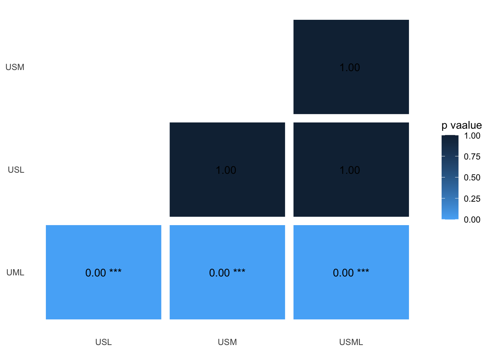
Original model output
##
## Simultaneous Tests for General Linear Hypotheses
##
## Multiple Comparisons of Means: Tukey Contrasts
##
##
## Fit: lmer(formula = dS ~ peak_wl.beetle.vs.flower + (1 | patch2) +
## (1 | patch1), data = compare.beetle.vs.flower.aim1, REML = F)
##
## Linear Hypotheses:
## Estimate
## contrast.UVSW..LW.beetle.vs.flower - contrast.UV..MWLW.beetle.vs.flower == 0 0.6310334
## contrast.UVSWMW...beetle.vs.flower - contrast.UV..MWLW.beetle.vs.flower == 0 0.6315562
## contrast.UVSWMWLW.beetle.vs.flower - contrast.UV..MWLW.beetle.vs.flower == 0 0.5502121
## contrast.UVSWMW...beetle.vs.flower - contrast.UVSW..LW.beetle.vs.flower == 0 0.0005227
## contrast.UVSWMWLW.beetle.vs.flower - contrast.UVSW..LW.beetle.vs.flower == 0 -0.0808214
## contrast.UVSWMWLW.beetle.vs.flower - contrast.UVSWMW...beetle.vs.flower == 0 -0.0813441
## Std. Error
## contrast.UVSW..LW.beetle.vs.flower - contrast.UV..MWLW.beetle.vs.flower == 0 0.0705664
## contrast.UVSWMW...beetle.vs.flower - contrast.UV..MWLW.beetle.vs.flower == 0 0.0705664
## contrast.UVSWMWLW.beetle.vs.flower - contrast.UV..MWLW.beetle.vs.flower == 0 0.0705664
## contrast.UVSWMW...beetle.vs.flower - contrast.UVSW..LW.beetle.vs.flower == 0 0.0705664
## contrast.UVSWMWLW.beetle.vs.flower - contrast.UVSW..LW.beetle.vs.flower == 0 0.0705664
## contrast.UVSWMWLW.beetle.vs.flower - contrast.UVSWMW...beetle.vs.flower == 0 0.0705664
## z value
## contrast.UVSW..LW.beetle.vs.flower - contrast.UV..MWLW.beetle.vs.flower == 0 8.942
## contrast.UVSWMW...beetle.vs.flower - contrast.UV..MWLW.beetle.vs.flower == 0 8.950
## contrast.UVSWMWLW.beetle.vs.flower - contrast.UV..MWLW.beetle.vs.flower == 0 7.797
## contrast.UVSWMW...beetle.vs.flower - contrast.UVSW..LW.beetle.vs.flower == 0 0.007
## contrast.UVSWMWLW.beetle.vs.flower - contrast.UVSW..LW.beetle.vs.flower == 0 -1.145
## contrast.UVSWMWLW.beetle.vs.flower - contrast.UVSWMW...beetle.vs.flower == 0 -1.153
## Pr(>|z|)
## contrast.UVSW..LW.beetle.vs.flower - contrast.UV..MWLW.beetle.vs.flower == 0 < 2e-16
## contrast.UVSWMW...beetle.vs.flower - contrast.UV..MWLW.beetle.vs.flower == 0 < 2e-16
## contrast.UVSWMWLW.beetle.vs.flower - contrast.UV..MWLW.beetle.vs.flower == 0 3.86e-14
## contrast.UVSWMW...beetle.vs.flower - contrast.UVSW..LW.beetle.vs.flower == 0 1
## contrast.UVSWMWLW.beetle.vs.flower - contrast.UVSW..LW.beetle.vs.flower == 0 1
## contrast.UVSWMWLW.beetle.vs.flower - contrast.UVSWMW...beetle.vs.flower == 0 1
##
## contrast.UVSW..LW.beetle.vs.flower - contrast.UV..MWLW.beetle.vs.flower == 0 ***
## contrast.UVSWMW...beetle.vs.flower - contrast.UV..MWLW.beetle.vs.flower == 0 ***
## contrast.UVSWMWLW.beetle.vs.flower - contrast.UV..MWLW.beetle.vs.flower == 0 ***
## contrast.UVSWMW...beetle.vs.flower - contrast.UVSW..LW.beetle.vs.flower == 0
## contrast.UVSWMWLW.beetle.vs.flower - contrast.UVSW..LW.beetle.vs.flower == 0
## contrast.UVSWMWLW.beetle.vs.flower - contrast.UVSWMW...beetle.vs.flower == 0
## ---
## Signif. codes: 0 '***' 0.001 '**' 0.01 '*' 0.05 '.' 0.1 ' ' 1
## (Adjusted p values reported -- bonferroni method)Twilight
| Chisq | Df | Pr(>Chisq) | |
|---|---|---|---|
| peak_wl.beetle.vs.flower | 445.1 | 3 | 3.831e-96 |
Click the tabs to see posthoc results ( p-value summary plot / original model output )
Pair-wise p-values
ggplot(data = heat_twilight.aim1, aes(x=VislistA_twilight.aim1, y=VislistB_twilight.aim1, fill=beetle.vs.flower)) +
geom_tile(colour="white", size = 4)+
geom_text(aes(VislistA_twilight.aim1, VislistB_twilight.aim1, label = paste(format(round(beetle.vs.flower, 2), nsmall = 2), sig.beetle.vs.flower)))+
scale_fill_continuous(high = "#132B43", low = "#56B1F7", limit=c(0,1))+ #delete if want to reverse the colour
theme_bw()+
theme(axis.title.x=element_blank(),
axis.title.y=element_blank(),
panel.grid = element_blank(),
panel.border = element_blank(),
axis.ticks = element_blank() )+
labs(fill = "p value")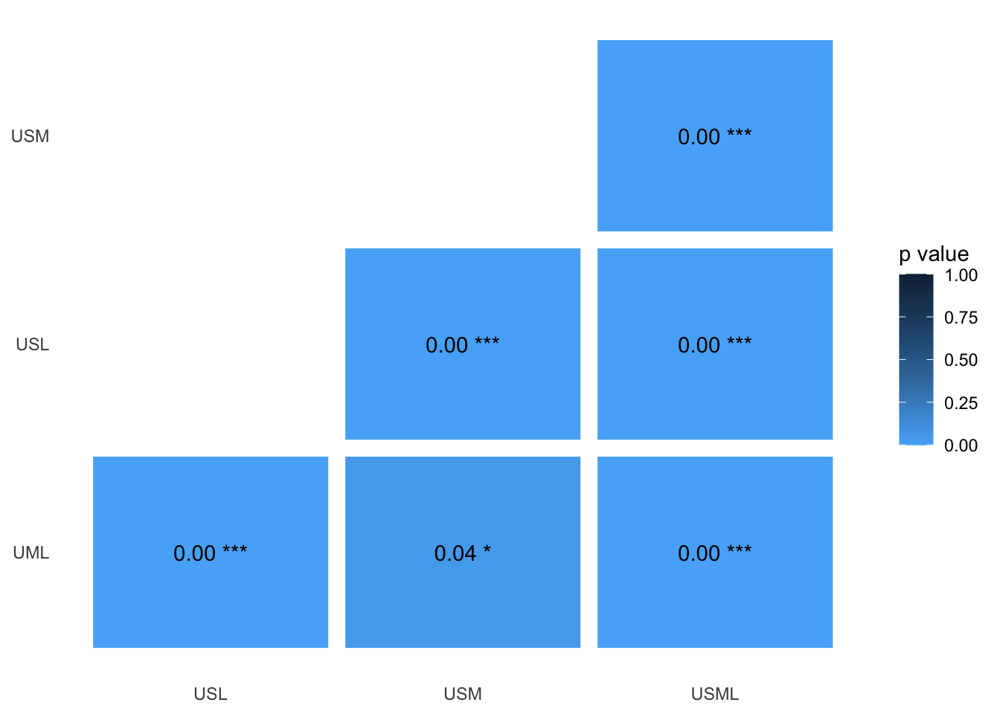
Original model output
##
## Simultaneous Tests for General Linear Hypotheses
##
## Multiple Comparisons of Means: Tukey Contrasts
##
##
## Fit: lmer(formula = dS ~ peak_wl.beetle.vs.flower + (1 | patch2) +
## (1 | patch1), data = compare.beetle.vs.flower_twilight.aim1,
## REML = F)
##
## Linear Hypotheses:
## Estimate
## contrast.UVSW..LW.beetle.vs.flower_twilight - contrast.UV..MWLW.beetle.vs.flower_twilight == 0 0.07388
## contrast.UVSWMW...beetle.vs.flower_twilight - contrast.UV..MWLW.beetle.vs.flower_twilight == 0 0.02540
## contrast.UVSWMWLW.beetle.vs.flower_twilight - contrast.UV..MWLW.beetle.vs.flower_twilight == 0 0.18147
## contrast.UVSWMW...beetle.vs.flower_twilight - contrast.UVSW..LW.beetle.vs.flower_twilight == 0 -0.04848
## contrast.UVSWMWLW.beetle.vs.flower_twilight - contrast.UVSW..LW.beetle.vs.flower_twilight == 0 0.10759
## contrast.UVSWMWLW.beetle.vs.flower_twilight - contrast.UVSWMW...beetle.vs.flower_twilight == 0 0.15607
## Std. Error
## contrast.UVSW..LW.beetle.vs.flower_twilight - contrast.UV..MWLW.beetle.vs.flower_twilight == 0 0.00932
## contrast.UVSWMW...beetle.vs.flower_twilight - contrast.UV..MWLW.beetle.vs.flower_twilight == 0 0.00932
## contrast.UVSWMWLW.beetle.vs.flower_twilight - contrast.UV..MWLW.beetle.vs.flower_twilight == 0 0.00932
## contrast.UVSWMW...beetle.vs.flower_twilight - contrast.UVSW..LW.beetle.vs.flower_twilight == 0 0.00932
## contrast.UVSWMWLW.beetle.vs.flower_twilight - contrast.UVSW..LW.beetle.vs.flower_twilight == 0 0.00932
## contrast.UVSWMWLW.beetle.vs.flower_twilight - contrast.UVSWMW...beetle.vs.flower_twilight == 0 0.00932
## z value
## contrast.UVSW..LW.beetle.vs.flower_twilight - contrast.UV..MWLW.beetle.vs.flower_twilight == 0 7.927
## contrast.UVSWMW...beetle.vs.flower_twilight - contrast.UV..MWLW.beetle.vs.flower_twilight == 0 2.726
## contrast.UVSWMWLW.beetle.vs.flower_twilight - contrast.UV..MWLW.beetle.vs.flower_twilight == 0 19.471
## contrast.UVSWMW...beetle.vs.flower_twilight - contrast.UVSW..LW.beetle.vs.flower_twilight == 0 -5.202
## contrast.UVSWMWLW.beetle.vs.flower_twilight - contrast.UVSW..LW.beetle.vs.flower_twilight == 0 11.544
## contrast.UVSWMWLW.beetle.vs.flower_twilight - contrast.UVSWMW...beetle.vs.flower_twilight == 0 16.745
## Pr(>|z|)
## contrast.UVSW..LW.beetle.vs.flower_twilight - contrast.UV..MWLW.beetle.vs.flower_twilight == 0 1.33e-14
## contrast.UVSWMW...beetle.vs.flower_twilight - contrast.UV..MWLW.beetle.vs.flower_twilight == 0 0.0385
## contrast.UVSWMWLW.beetle.vs.flower_twilight - contrast.UV..MWLW.beetle.vs.flower_twilight == 0 < 2e-16
## contrast.UVSWMW...beetle.vs.flower_twilight - contrast.UVSW..LW.beetle.vs.flower_twilight == 0 1.18e-06
## contrast.UVSWMWLW.beetle.vs.flower_twilight - contrast.UVSW..LW.beetle.vs.flower_twilight == 0 < 2e-16
## contrast.UVSWMWLW.beetle.vs.flower_twilight - contrast.UVSWMW...beetle.vs.flower_twilight == 0 < 2e-16
##
## contrast.UVSW..LW.beetle.vs.flower_twilight - contrast.UV..MWLW.beetle.vs.flower_twilight == 0 ***
## contrast.UVSWMW...beetle.vs.flower_twilight - contrast.UV..MWLW.beetle.vs.flower_twilight == 0 *
## contrast.UVSWMWLW.beetle.vs.flower_twilight - contrast.UV..MWLW.beetle.vs.flower_twilight == 0 ***
## contrast.UVSWMW...beetle.vs.flower_twilight - contrast.UVSW..LW.beetle.vs.flower_twilight == 0 ***
## contrast.UVSWMWLW.beetle.vs.flower_twilight - contrast.UVSW..LW.beetle.vs.flower_twilight == 0 ***
## contrast.UVSWMWLW.beetle.vs.flower_twilight - contrast.UVSWMW...beetle.vs.flower_twilight == 0 ***
## ---
## Signif. codes: 0 '***' 0.001 '**' 0.01 '*' 0.05 '.' 0.1 ' ' 1
## (Adjusted p values reported -- bonferroni method)
Results of Aim 2: comparing visual systems with different LWS peak sensitivities
Click the tabs to see the results for each comparison group ( Flower vs. Leaf / Beetle vs. Leaf / Beetle vs. Flower) and under different light conditions ( Daylight / Twilight)
Flower vs. Leaf
Daylight
| Chisq | Df | Pr(>Chisq) | |
|---|---|---|---|
| peak_wl.flower.vs.leaf | 911.9 | 4 | 4.5e-196 |
Click the tabs to see posthoc results ( p-value summary plot / original model output )
Pair-wise p-values
ggplot(data = heat_d65.aim2, aes(x=VislistA_d65.aim2, y=VislistB_d65.aim2, fill=flower.vs.leaf)) +
geom_tile(colour="white", size = 4)+
geom_text(aes(VislistA_d65.aim2, VislistB_d65.aim2, label = paste(format(round(flower.vs.leaf, 2), nsmall = 2), sig.flower.vs.leaf)))+
scale_fill_continuous(high = "#132B43", low = "#56B1F7", limit=c(0,1))+ #delete if want to reverse the colour
theme_bw()+
theme(axis.title.x=element_blank(),
axis.title.y=element_blank(),
panel.grid = element_blank(),
panel.border = element_blank(),
axis.ticks = element_blank() )+
labs(fill = "p vaalue")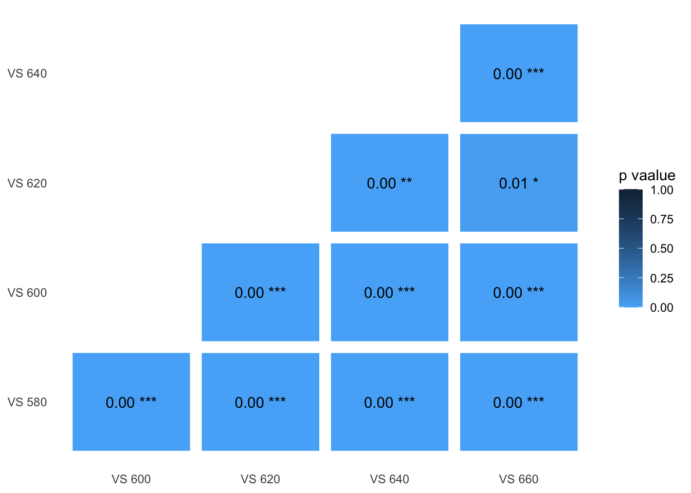
Original model output
##
## Simultaneous Tests for General Linear Hypotheses
##
## Multiple Comparisons of Means: Tukey Contrasts
##
##
## Fit: lmer(formula = dS ~ peak_wl.flower.vs.leaf + (1 | patch2) + (1 |
## patch1), data = compare.flower.vs.leaf.aim2, REML = F)
##
## Linear Hypotheses:
## Estimate Std. Error z value
## bup600.flower.vs.leaf - bup580.flower.vs.leaf == 0 0.21665 0.02054 10.546
## bup620.flower.vs.leaf - bup580.flower.vs.leaf == 0 0.46460 0.02054 22.616
## bup640.flower.vs.leaf - bup580.flower.vs.leaf == 0 0.54896 0.02054 26.723
## bup660.flower.vs.leaf - bup580.flower.vs.leaf == 0 0.39846 0.02054 19.397
## bup620.flower.vs.leaf - bup600.flower.vs.leaf == 0 0.24794 0.02054 12.070
## bup640.flower.vs.leaf - bup600.flower.vs.leaf == 0 0.33231 0.02054 16.176
## bup660.flower.vs.leaf - bup600.flower.vs.leaf == 0 0.18181 0.02054 8.850
## bup640.flower.vs.leaf - bup620.flower.vs.leaf == 0 0.08437 0.02054 4.107
## bup660.flower.vs.leaf - bup620.flower.vs.leaf == 0 -0.06614 0.02054 -3.220
## bup660.flower.vs.leaf - bup640.flower.vs.leaf == 0 -0.15050 0.02054 -7.326
## Pr(>|z|)
## bup600.flower.vs.leaf - bup580.flower.vs.leaf == 0 < 2e-16 ***
## bup620.flower.vs.leaf - bup580.flower.vs.leaf == 0 < 2e-16 ***
## bup640.flower.vs.leaf - bup580.flower.vs.leaf == 0 < 2e-16 ***
## bup660.flower.vs.leaf - bup580.flower.vs.leaf == 0 < 2e-16 ***
## bup620.flower.vs.leaf - bup600.flower.vs.leaf == 0 < 2e-16 ***
## bup640.flower.vs.leaf - bup600.flower.vs.leaf == 0 < 2e-16 ***
## bup660.flower.vs.leaf - bup600.flower.vs.leaf == 0 < 2e-16 ***
## bup640.flower.vs.leaf - bup620.flower.vs.leaf == 0 0.000401 ***
## bup660.flower.vs.leaf - bup620.flower.vs.leaf == 0 0.012839 *
## bup660.flower.vs.leaf - bup640.flower.vs.leaf == 0 2.36e-12 ***
## ---
## Signif. codes: 0 '***' 0.001 '**' 0.01 '*' 0.05 '.' 0.1 ' ' 1
## (Adjusted p values reported -- bonferroni method)Twilight
| Chisq | Df | Pr(>Chisq) | |
|---|---|---|---|
| peak_wl.flower.vs.leaf | 1171 | 4 | 2.64e-252 |
Click the tabs to see posthoc results ( p-value summary plot / original model output )
Pair-wise p-values
ggplot(data = heat_twilight.aim2, aes(x=VislistA_twilight.aim2, y=VislistB_twilight.aim2, fill=flower.vs.leaf)) +
geom_tile(colour="white", size = 4)+
geom_text(aes(VislistA_twilight.aim2, VislistB_twilight.aim2, label = paste(format(round(flower.vs.leaf, 2), nsmall = 2), sig.flower.vs.leaf)))+
scale_fill_continuous(high = "#132B43", low = "#56B1F7", limit=c(0,1))+ #delete if want to reverse the colour
theme_bw()+
theme(axis.title.x=element_blank(),
axis.title.y=element_blank(),
panel.grid = element_blank(),
panel.border = element_blank(),
axis.ticks = element_blank() )+
labs(fill = "p vaalue")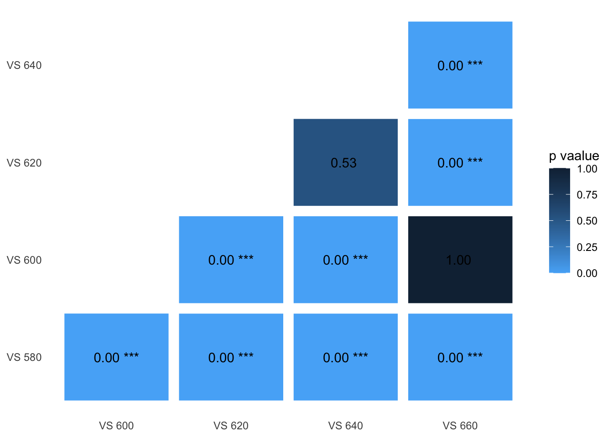
Original model output
##
## Simultaneous Tests for General Linear Hypotheses
##
## Multiple Comparisons of Means: Tukey Contrasts
##
##
## Fit: lmer(formula = dS ~ peak_wl.flower.vs.leaf + (1 | patch2) + (1 |
## patch1), data = compare.flower.vs.leaf_twilight.aim2, REML = F)
##
## Linear Hypotheses:
## Estimate
## bup600.flower.vs.leaf_twilight - bup580.flower.vs.leaf_twilight == 0 0.049834
## bup620.flower.vs.leaf_twilight - bup580.flower.vs.leaf_twilight == 0 0.093746
## bup640.flower.vs.leaf_twilight - bup580.flower.vs.leaf_twilight == 0 0.087751
## bup660.flower.vs.leaf_twilight - bup580.flower.vs.leaf_twilight == 0 0.052236
## bup620.flower.vs.leaf_twilight - bup600.flower.vs.leaf_twilight == 0 0.043911
## bup640.flower.vs.leaf_twilight - bup600.flower.vs.leaf_twilight == 0 0.037917
## bup660.flower.vs.leaf_twilight - bup600.flower.vs.leaf_twilight == 0 0.002402
## bup640.flower.vs.leaf_twilight - bup620.flower.vs.leaf_twilight == 0 -0.005995
## bup660.flower.vs.leaf_twilight - bup620.flower.vs.leaf_twilight == 0 -0.041509
## bup660.flower.vs.leaf_twilight - bup640.flower.vs.leaf_twilight == 0 -0.035515
## Std. Error
## bup600.flower.vs.leaf_twilight - bup580.flower.vs.leaf_twilight == 0 0.003097
## bup620.flower.vs.leaf_twilight - bup580.flower.vs.leaf_twilight == 0 0.003097
## bup640.flower.vs.leaf_twilight - bup580.flower.vs.leaf_twilight == 0 0.003097
## bup660.flower.vs.leaf_twilight - bup580.flower.vs.leaf_twilight == 0 0.003097
## bup620.flower.vs.leaf_twilight - bup600.flower.vs.leaf_twilight == 0 0.003097
## bup640.flower.vs.leaf_twilight - bup600.flower.vs.leaf_twilight == 0 0.003097
## bup660.flower.vs.leaf_twilight - bup600.flower.vs.leaf_twilight == 0 0.003097
## bup640.flower.vs.leaf_twilight - bup620.flower.vs.leaf_twilight == 0 0.003097
## bup660.flower.vs.leaf_twilight - bup620.flower.vs.leaf_twilight == 0 0.003097
## bup660.flower.vs.leaf_twilight - bup640.flower.vs.leaf_twilight == 0 0.003097
## z value
## bup600.flower.vs.leaf_twilight - bup580.flower.vs.leaf_twilight == 0 16.089
## bup620.flower.vs.leaf_twilight - bup580.flower.vs.leaf_twilight == 0 30.266
## bup640.flower.vs.leaf_twilight - bup580.flower.vs.leaf_twilight == 0 28.331
## bup660.flower.vs.leaf_twilight - bup580.flower.vs.leaf_twilight == 0 16.865
## bup620.flower.vs.leaf_twilight - bup600.flower.vs.leaf_twilight == 0 14.177
## bup640.flower.vs.leaf_twilight - bup600.flower.vs.leaf_twilight == 0 12.242
## bup660.flower.vs.leaf_twilight - bup600.flower.vs.leaf_twilight == 0 0.775
## bup640.flower.vs.leaf_twilight - bup620.flower.vs.leaf_twilight == 0 -1.935
## bup660.flower.vs.leaf_twilight - bup620.flower.vs.leaf_twilight == 0 -13.402
## bup660.flower.vs.leaf_twilight - bup640.flower.vs.leaf_twilight == 0 -11.466
## Pr(>|z|)
## bup600.flower.vs.leaf_twilight - bup580.flower.vs.leaf_twilight == 0 <2e-16
## bup620.flower.vs.leaf_twilight - bup580.flower.vs.leaf_twilight == 0 <2e-16
## bup640.flower.vs.leaf_twilight - bup580.flower.vs.leaf_twilight == 0 <2e-16
## bup660.flower.vs.leaf_twilight - bup580.flower.vs.leaf_twilight == 0 <2e-16
## bup620.flower.vs.leaf_twilight - bup600.flower.vs.leaf_twilight == 0 <2e-16
## bup640.flower.vs.leaf_twilight - bup600.flower.vs.leaf_twilight == 0 <2e-16
## bup660.flower.vs.leaf_twilight - bup600.flower.vs.leaf_twilight == 0 1.000
## bup640.flower.vs.leaf_twilight - bup620.flower.vs.leaf_twilight == 0 0.529
## bup660.flower.vs.leaf_twilight - bup620.flower.vs.leaf_twilight == 0 <2e-16
## bup660.flower.vs.leaf_twilight - bup640.flower.vs.leaf_twilight == 0 <2e-16
##
## bup600.flower.vs.leaf_twilight - bup580.flower.vs.leaf_twilight == 0 ***
## bup620.flower.vs.leaf_twilight - bup580.flower.vs.leaf_twilight == 0 ***
## bup640.flower.vs.leaf_twilight - bup580.flower.vs.leaf_twilight == 0 ***
## bup660.flower.vs.leaf_twilight - bup580.flower.vs.leaf_twilight == 0 ***
## bup620.flower.vs.leaf_twilight - bup600.flower.vs.leaf_twilight == 0 ***
## bup640.flower.vs.leaf_twilight - bup600.flower.vs.leaf_twilight == 0 ***
## bup660.flower.vs.leaf_twilight - bup600.flower.vs.leaf_twilight == 0
## bup640.flower.vs.leaf_twilight - bup620.flower.vs.leaf_twilight == 0
## bup660.flower.vs.leaf_twilight - bup620.flower.vs.leaf_twilight == 0 ***
## bup660.flower.vs.leaf_twilight - bup640.flower.vs.leaf_twilight == 0 ***
## ---
## Signif. codes: 0 '***' 0.001 '**' 0.01 '*' 0.05 '.' 0.1 ' ' 1
## (Adjusted p values reported -- bonferroni method)Beetle vs. Leaf
Daylight
| Chisq | Df | Pr(>Chisq) | |
|---|---|---|---|
| peak_wl.beetle.vs.leaf | 3199 | 4 | 0 |
Click the tabs to see posthoc results ( p-value summary plot / original model output )
Pair-wise p-values
ggplot(data = heat_d65.aim2, aes(x=VislistA_d65.aim2, y=VislistB_d65.aim2, fill=beetle.vs.leaf)) +
geom_tile(colour="white", size = 4)+
geom_text(aes(VislistA_d65.aim2, VislistB_d65.aim2, label = paste(format(round(beetle.vs.leaf, 2), nsmall = 2), sig.beetle.vs.leaf))) +
scale_fill_continuous(high = "#132B43", low = "#56B1F7", limit=c(0,1))+ #delete if want to reverse the colour
theme_bw()+
theme(axis.title.x=element_blank(),
axis.title.y=element_blank(),
panel.grid = element_blank(),
panel.border = element_blank(),
axis.ticks = element_blank() )+
labs(fill = "p vaalue")
Original model output
##
## Simultaneous Tests for General Linear Hypotheses
##
## Multiple Comparisons of Means: Tukey Contrasts
##
##
## Fit: lmer(formula = dS ~ peak_wl.beetle.vs.leaf + (1 | patch2) + (1 |
## patch1), data = compare.beetle.vs.leaf.aim2, REML = F)
##
## Linear Hypotheses:
## Estimate Std. Error z value
## bup600.beetle.vs.leaf - bup580.beetle.vs.leaf == 0 0.28548 0.01905 14.985
## bup620.beetle.vs.leaf - bup580.beetle.vs.leaf == 0 0.57696 0.01905 30.285
## bup640.beetle.vs.leaf - bup580.beetle.vs.leaf == 0 0.79306 0.01905 41.628
## bup660.beetle.vs.leaf - bup580.beetle.vs.leaf == 0 0.94105 0.01905 49.396
## bup620.beetle.vs.leaf - bup600.beetle.vs.leaf == 0 0.29148 0.01905 15.300
## bup640.beetle.vs.leaf - bup600.beetle.vs.leaf == 0 0.50758 0.01905 26.643
## bup660.beetle.vs.leaf - bup600.beetle.vs.leaf == 0 0.65557 0.01905 34.411
## bup640.beetle.vs.leaf - bup620.beetle.vs.leaf == 0 0.21610 0.01905 11.343
## bup660.beetle.vs.leaf - bup620.beetle.vs.leaf == 0 0.36409 0.01905 19.111
## bup660.beetle.vs.leaf - bup640.beetle.vs.leaf == 0 0.14799 0.01905 7.768
## Pr(>|z|)
## bup600.beetle.vs.leaf - bup580.beetle.vs.leaf == 0 < 2e-16 ***
## bup620.beetle.vs.leaf - bup580.beetle.vs.leaf == 0 < 2e-16 ***
## bup640.beetle.vs.leaf - bup580.beetle.vs.leaf == 0 < 2e-16 ***
## bup660.beetle.vs.leaf - bup580.beetle.vs.leaf == 0 < 2e-16 ***
## bup620.beetle.vs.leaf - bup600.beetle.vs.leaf == 0 < 2e-16 ***
## bup640.beetle.vs.leaf - bup600.beetle.vs.leaf == 0 < 2e-16 ***
## bup660.beetle.vs.leaf - bup600.beetle.vs.leaf == 0 < 2e-16 ***
## bup640.beetle.vs.leaf - bup620.beetle.vs.leaf == 0 < 2e-16 ***
## bup660.beetle.vs.leaf - bup620.beetle.vs.leaf == 0 < 2e-16 ***
## bup660.beetle.vs.leaf - bup640.beetle.vs.leaf == 0 7.99e-14 ***
## ---
## Signif. codes: 0 '***' 0.001 '**' 0.01 '*' 0.05 '.' 0.1 ' ' 1
## (Adjusted p values reported -- bonferroni method)Twilight
| Chisq | Df | Pr(>Chisq) | |
|---|---|---|---|
| peak_wl.beetle.vs.leaf | 5239 | 4 | 0 |
Click the tabs to see posthoc results ( p-value summary plot / original model output )
Pair-wise p-values
ggplot(data = heat_twilight.aim2, aes(x=VislistA_twilight.aim2, y=VislistB_twilight.aim2, fill=beetle.vs.leaf)) +
geom_tile(colour="white", size = 4)+
geom_text(aes(VislistA_twilight.aim2, VislistB_twilight.aim2, label = paste(format(round(beetle.vs.leaf, 2), nsmall = 2), sig.beetle.vs.leaf))) +
scale_fill_continuous(high = "#132B43", low = "#56B1F7", limit=c(0,1))+ #delete if want to reverse the colour
theme_bw()+
theme(axis.title.x=element_blank(),
axis.title.y=element_blank(),
panel.grid = element_blank(),
panel.border = element_blank(),
axis.ticks = element_blank() )+
labs(fill = "p vaalue")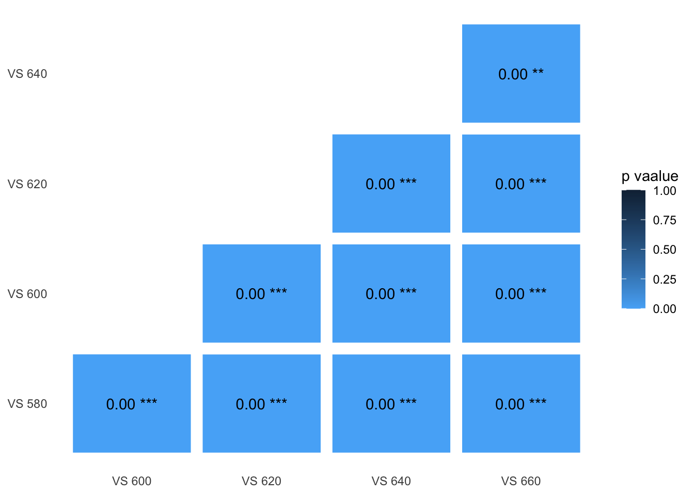
Original model output
##
## Simultaneous Tests for General Linear Hypotheses
##
## Multiple Comparisons of Means: Tukey Contrasts
##
##
## Fit: lmer(formula = dS ~ peak_wl.beetle.vs.leaf + (1 | patch2) + (1 |
## patch1), data = compare.beetle.vs.leaf_twilight.aim2, REML = F)
##
## Linear Hypotheses:
## Estimate
## bup600.beetle.vs.leaf_twilight - bup580.beetle.vs.leaf_twilight == 0 0.055243
## bup620.beetle.vs.leaf_twilight - bup580.beetle.vs.leaf_twilight == 0 0.105686
## bup640.beetle.vs.leaf_twilight - bup580.beetle.vs.leaf_twilight == 0 0.131434
## bup660.beetle.vs.leaf_twilight - bup580.beetle.vs.leaf_twilight == 0 0.140754
## bup620.beetle.vs.leaf_twilight - bup600.beetle.vs.leaf_twilight == 0 0.050443
## bup640.beetle.vs.leaf_twilight - bup600.beetle.vs.leaf_twilight == 0 0.076191
## bup660.beetle.vs.leaf_twilight - bup600.beetle.vs.leaf_twilight == 0 0.085511
## bup640.beetle.vs.leaf_twilight - bup620.beetle.vs.leaf_twilight == 0 0.025748
## bup660.beetle.vs.leaf_twilight - bup620.beetle.vs.leaf_twilight == 0 0.035068
## bup660.beetle.vs.leaf_twilight - bup640.beetle.vs.leaf_twilight == 0 0.009319
## Std. Error
## bup600.beetle.vs.leaf_twilight - bup580.beetle.vs.leaf_twilight == 0 0.002294
## bup620.beetle.vs.leaf_twilight - bup580.beetle.vs.leaf_twilight == 0 0.002294
## bup640.beetle.vs.leaf_twilight - bup580.beetle.vs.leaf_twilight == 0 0.002294
## bup660.beetle.vs.leaf_twilight - bup580.beetle.vs.leaf_twilight == 0 0.002294
## bup620.beetle.vs.leaf_twilight - bup600.beetle.vs.leaf_twilight == 0 0.002294
## bup640.beetle.vs.leaf_twilight - bup600.beetle.vs.leaf_twilight == 0 0.002294
## bup660.beetle.vs.leaf_twilight - bup600.beetle.vs.leaf_twilight == 0 0.002294
## bup640.beetle.vs.leaf_twilight - bup620.beetle.vs.leaf_twilight == 0 0.002294
## bup660.beetle.vs.leaf_twilight - bup620.beetle.vs.leaf_twilight == 0 0.002294
## bup660.beetle.vs.leaf_twilight - bup640.beetle.vs.leaf_twilight == 0 0.002294
## z value
## bup600.beetle.vs.leaf_twilight - bup580.beetle.vs.leaf_twilight == 0 24.078
## bup620.beetle.vs.leaf_twilight - bup580.beetle.vs.leaf_twilight == 0 46.064
## bup640.beetle.vs.leaf_twilight - bup580.beetle.vs.leaf_twilight == 0 57.286
## bup660.beetle.vs.leaf_twilight - bup580.beetle.vs.leaf_twilight == 0 61.348
## bup620.beetle.vs.leaf_twilight - bup600.beetle.vs.leaf_twilight == 0 21.986
## bup640.beetle.vs.leaf_twilight - bup600.beetle.vs.leaf_twilight == 0 33.208
## bup660.beetle.vs.leaf_twilight - bup600.beetle.vs.leaf_twilight == 0 37.270
## bup640.beetle.vs.leaf_twilight - bup620.beetle.vs.leaf_twilight == 0 11.223
## bup660.beetle.vs.leaf_twilight - bup620.beetle.vs.leaf_twilight == 0 15.284
## bup660.beetle.vs.leaf_twilight - bup640.beetle.vs.leaf_twilight == 0 4.062
## Pr(>|z|)
## bup600.beetle.vs.leaf_twilight - bup580.beetle.vs.leaf_twilight == 0 < 2e-16
## bup620.beetle.vs.leaf_twilight - bup580.beetle.vs.leaf_twilight == 0 < 2e-16
## bup640.beetle.vs.leaf_twilight - bup580.beetle.vs.leaf_twilight == 0 < 2e-16
## bup660.beetle.vs.leaf_twilight - bup580.beetle.vs.leaf_twilight == 0 < 2e-16
## bup620.beetle.vs.leaf_twilight - bup600.beetle.vs.leaf_twilight == 0 < 2e-16
## bup640.beetle.vs.leaf_twilight - bup600.beetle.vs.leaf_twilight == 0 < 2e-16
## bup660.beetle.vs.leaf_twilight - bup600.beetle.vs.leaf_twilight == 0 < 2e-16
## bup640.beetle.vs.leaf_twilight - bup620.beetle.vs.leaf_twilight == 0 < 2e-16
## bup660.beetle.vs.leaf_twilight - bup620.beetle.vs.leaf_twilight == 0 < 2e-16
## bup660.beetle.vs.leaf_twilight - bup640.beetle.vs.leaf_twilight == 0 0.000487
##
## bup600.beetle.vs.leaf_twilight - bup580.beetle.vs.leaf_twilight == 0 ***
## bup620.beetle.vs.leaf_twilight - bup580.beetle.vs.leaf_twilight == 0 ***
## bup640.beetle.vs.leaf_twilight - bup580.beetle.vs.leaf_twilight == 0 ***
## bup660.beetle.vs.leaf_twilight - bup580.beetle.vs.leaf_twilight == 0 ***
## bup620.beetle.vs.leaf_twilight - bup600.beetle.vs.leaf_twilight == 0 ***
## bup640.beetle.vs.leaf_twilight - bup600.beetle.vs.leaf_twilight == 0 ***
## bup660.beetle.vs.leaf_twilight - bup600.beetle.vs.leaf_twilight == 0 ***
## bup640.beetle.vs.leaf_twilight - bup620.beetle.vs.leaf_twilight == 0 ***
## bup660.beetle.vs.leaf_twilight - bup620.beetle.vs.leaf_twilight == 0 ***
## bup660.beetle.vs.leaf_twilight - bup640.beetle.vs.leaf_twilight == 0 ***
## ---
## Signif. codes: 0 '***' 0.001 '**' 0.01 '*' 0.05 '.' 0.1 ' ' 1
## (Adjusted p values reported -- bonferroni method)Beetle vs. Flower
Daylight
| Chisq | Df | Pr(>Chisq) | |
|---|---|---|---|
| peak_wl.beetle.vs.flower | 1160 | 4 | 7.281e-250 |
Click the tabs to see posthoc results ( p-value summary plot / original model output )
Pair-wise p-values
ggplot(data = heat_d65.aim2, aes(x=VislistA_d65.aim2, y=VislistB_d65.aim2, fill=beetle.vs.flower)) +
geom_tile(colour="white", size = 4)+
geom_text(aes(VislistA_d65.aim2, VislistB_d65.aim2, label = paste(format(round(beetle.vs.flower, 2), nsmall = 2), sig.beetle.vs.flower)))+
scale_fill_continuous(high = "#132B43", low = "#56B1F7", limit=c(0,1))+ #delete if want to reverse the colour
theme_bw()+
theme(axis.title.x=element_blank(),
axis.title.y=element_blank(),
panel.grid = element_blank(),
panel.border = element_blank(),
axis.ticks = element_blank() )+
labs(fill = "p vaalue")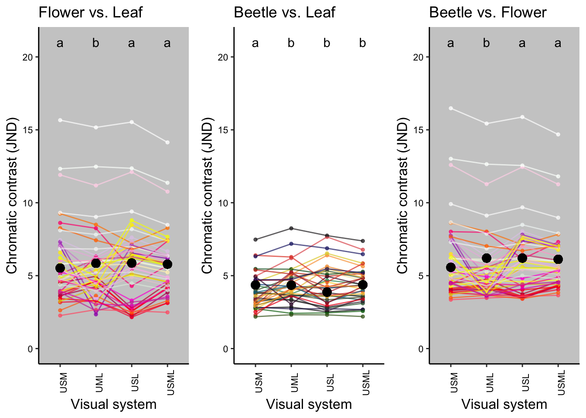
Original model output
##
## Simultaneous Tests for General Linear Hypotheses
##
## Multiple Comparisons of Means: Tukey Contrasts
##
##
## Fit: lmer(formula = dS ~ peak_wl.beetle.vs.flower + (1 | patch2) +
## (1 | patch1), data = compare.beetle.vs.flower.aim2, REML = F)
##
## Linear Hypotheses:
## Estimate Std. Error
## bup600.beetle.vs.flower - bup580.beetle.vs.flower == 0 0.16118 0.02736
## bup620.beetle.vs.flower - bup580.beetle.vs.flower == 0 0.37487 0.02736
## bup640.beetle.vs.flower - bup580.beetle.vs.flower == 0 0.60558 0.02736
## bup660.beetle.vs.flower - bup580.beetle.vs.flower == 0 0.81779 0.02736
## bup620.beetle.vs.flower - bup600.beetle.vs.flower == 0 0.21369 0.02736
## bup640.beetle.vs.flower - bup600.beetle.vs.flower == 0 0.44440 0.02736
## bup660.beetle.vs.flower - bup600.beetle.vs.flower == 0 0.65661 0.02736
## bup640.beetle.vs.flower - bup620.beetle.vs.flower == 0 0.23071 0.02736
## bup660.beetle.vs.flower - bup620.beetle.vs.flower == 0 0.44292 0.02736
## bup660.beetle.vs.flower - bup640.beetle.vs.flower == 0 0.21221 0.02736
## z value Pr(>|z|)
## bup600.beetle.vs.flower - bup580.beetle.vs.flower == 0 5.891 3.83e-08 ***
## bup620.beetle.vs.flower - bup580.beetle.vs.flower == 0 13.702 < 2e-16 ***
## bup640.beetle.vs.flower - bup580.beetle.vs.flower == 0 22.135 < 2e-16 ***
## bup660.beetle.vs.flower - bup580.beetle.vs.flower == 0 29.891 < 2e-16 ***
## bup620.beetle.vs.flower - bup600.beetle.vs.flower == 0 7.811 5.77e-14 ***
## bup640.beetle.vs.flower - bup600.beetle.vs.flower == 0 16.244 < 2e-16 ***
## bup660.beetle.vs.flower - bup600.beetle.vs.flower == 0 24.000 < 2e-16 ***
## bup640.beetle.vs.flower - bup620.beetle.vs.flower == 0 8.433 < 2e-16 ***
## bup660.beetle.vs.flower - bup620.beetle.vs.flower == 0 16.189 < 2e-16 ***
## bup660.beetle.vs.flower - bup640.beetle.vs.flower == 0 7.756 8.66e-14 ***
## ---
## Signif. codes: 0 '***' 0.001 '**' 0.01 '*' 0.05 '.' 0.1 ' ' 1
## (Adjusted p values reported -- bonferroni method)Twilight
| Chisq | Df | Pr(>Chisq) | |
|---|---|---|---|
| peak_wl.beetle.vs.flower | 2417 | 4 | 0 |
Click the tabs to see posthoc results ( p-value summary plot / original model output )
Pair-wise p-values
ggplot(data = heat_twilight.aim2, aes(x=VislistA_twilight.aim2, y=VislistB_twilight.aim2, fill=beetle.vs.flower)) +
geom_tile(colour="white", size = 4)+
geom_text(aes(VislistA_twilight.aim2, VislistB_twilight.aim2, label = paste(format(round(beetle.vs.flower, 2), nsmall = 2), sig.beetle.vs.flower)))+
scale_fill_continuous(high = "#132B43", low = "#56B1F7", limit=c(0,1))+ #delete if want to reverse the colour
theme_bw()+
theme(axis.title.x=element_blank(),
axis.title.y=element_blank(),
panel.grid = element_blank(),
panel.border = element_blank(),
axis.ticks = element_blank() )+
labs(fill = "p vaalue")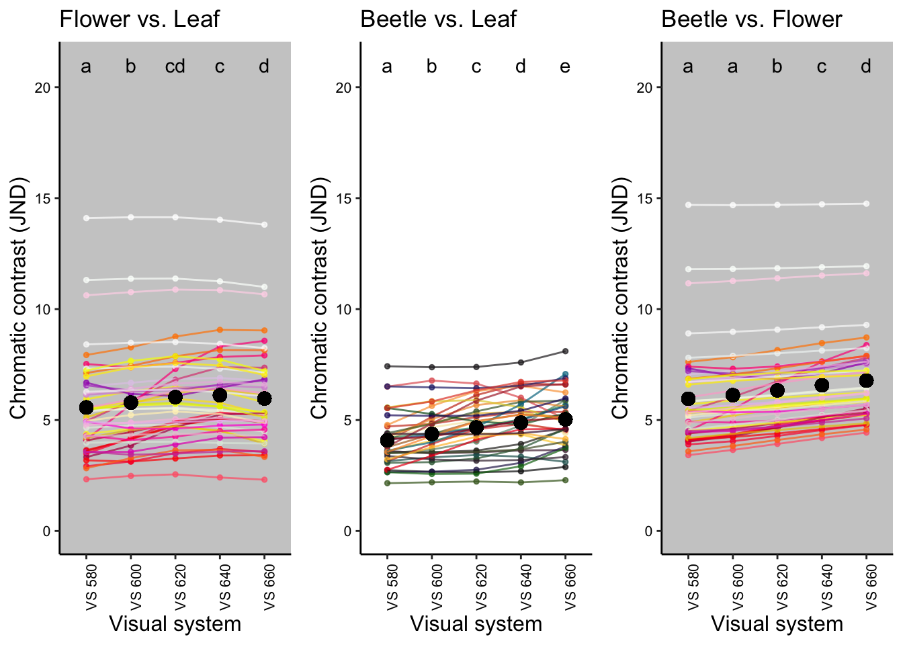
Original model output
##
## Simultaneous Tests for General Linear Hypotheses
##
## Multiple Comparisons of Means: Tukey Contrasts
##
##
## Fit: lmer(formula = dS ~ peak_wl.beetle.vs.flower + (1 | patch2) +
## (1 | patch1), data = compare.beetle.vs.flower_twilight.aim2,
## REML = F)
##
## Linear Hypotheses:
## Estimate
## bup600.beetle.vs.flower_twilight - bup580.beetle.vs.flower_twilight == 0 0.047302
## bup620.beetle.vs.flower_twilight - bup580.beetle.vs.flower_twilight == 0 0.105705
## bup640.beetle.vs.flower_twilight - bup580.beetle.vs.flower_twilight == 0 0.153429
## bup660.beetle.vs.flower_twilight - bup580.beetle.vs.flower_twilight == 0 0.178072
## bup620.beetle.vs.flower_twilight - bup600.beetle.vs.flower_twilight == 0 0.058403
## bup640.beetle.vs.flower_twilight - bup600.beetle.vs.flower_twilight == 0 0.106127
## bup660.beetle.vs.flower_twilight - bup600.beetle.vs.flower_twilight == 0 0.130770
## bup640.beetle.vs.flower_twilight - bup620.beetle.vs.flower_twilight == 0 0.047724
## bup660.beetle.vs.flower_twilight - bup620.beetle.vs.flower_twilight == 0 0.072367
## bup660.beetle.vs.flower_twilight - bup640.beetle.vs.flower_twilight == 0 0.024643
## Std. Error
## bup600.beetle.vs.flower_twilight - bup580.beetle.vs.flower_twilight == 0 0.004239
## bup620.beetle.vs.flower_twilight - bup580.beetle.vs.flower_twilight == 0 0.004239
## bup640.beetle.vs.flower_twilight - bup580.beetle.vs.flower_twilight == 0 0.004239
## bup660.beetle.vs.flower_twilight - bup580.beetle.vs.flower_twilight == 0 0.004239
## bup620.beetle.vs.flower_twilight - bup600.beetle.vs.flower_twilight == 0 0.004239
## bup640.beetle.vs.flower_twilight - bup600.beetle.vs.flower_twilight == 0 0.004239
## bup660.beetle.vs.flower_twilight - bup600.beetle.vs.flower_twilight == 0 0.004239
## bup640.beetle.vs.flower_twilight - bup620.beetle.vs.flower_twilight == 0 0.004239
## bup660.beetle.vs.flower_twilight - bup620.beetle.vs.flower_twilight == 0 0.004239
## bup660.beetle.vs.flower_twilight - bup640.beetle.vs.flower_twilight == 0 0.004239
## z value
## bup600.beetle.vs.flower_twilight - bup580.beetle.vs.flower_twilight == 0 11.159
## bup620.beetle.vs.flower_twilight - bup580.beetle.vs.flower_twilight == 0 24.937
## bup640.beetle.vs.flower_twilight - bup580.beetle.vs.flower_twilight == 0 36.196
## bup660.beetle.vs.flower_twilight - bup580.beetle.vs.flower_twilight == 0 42.009
## bup620.beetle.vs.flower_twilight - bup600.beetle.vs.flower_twilight == 0 13.778
## bup640.beetle.vs.flower_twilight - bup600.beetle.vs.flower_twilight == 0 25.036
## bup660.beetle.vs.flower_twilight - bup600.beetle.vs.flower_twilight == 0 30.850
## bup640.beetle.vs.flower_twilight - bup620.beetle.vs.flower_twilight == 0 11.259
## bup660.beetle.vs.flower_twilight - bup620.beetle.vs.flower_twilight == 0 17.072
## bup660.beetle.vs.flower_twilight - bup640.beetle.vs.flower_twilight == 0 5.814
## Pr(>|z|)
## bup600.beetle.vs.flower_twilight - bup580.beetle.vs.flower_twilight == 0 < 2e-16
## bup620.beetle.vs.flower_twilight - bup580.beetle.vs.flower_twilight == 0 < 2e-16
## bup640.beetle.vs.flower_twilight - bup580.beetle.vs.flower_twilight == 0 < 2e-16
## bup660.beetle.vs.flower_twilight - bup580.beetle.vs.flower_twilight == 0 < 2e-16
## bup620.beetle.vs.flower_twilight - bup600.beetle.vs.flower_twilight == 0 < 2e-16
## bup640.beetle.vs.flower_twilight - bup600.beetle.vs.flower_twilight == 0 < 2e-16
## bup660.beetle.vs.flower_twilight - bup600.beetle.vs.flower_twilight == 0 < 2e-16
## bup640.beetle.vs.flower_twilight - bup620.beetle.vs.flower_twilight == 0 < 2e-16
## bup660.beetle.vs.flower_twilight - bup620.beetle.vs.flower_twilight == 0 < 2e-16
## bup660.beetle.vs.flower_twilight - bup640.beetle.vs.flower_twilight == 0 6.12e-08
##
## bup600.beetle.vs.flower_twilight - bup580.beetle.vs.flower_twilight == 0 ***
## bup620.beetle.vs.flower_twilight - bup580.beetle.vs.flower_twilight == 0 ***
## bup640.beetle.vs.flower_twilight - bup580.beetle.vs.flower_twilight == 0 ***
## bup660.beetle.vs.flower_twilight - bup580.beetle.vs.flower_twilight == 0 ***
## bup620.beetle.vs.flower_twilight - bup600.beetle.vs.flower_twilight == 0 ***
## bup640.beetle.vs.flower_twilight - bup600.beetle.vs.flower_twilight == 0 ***
## bup660.beetle.vs.flower_twilight - bup600.beetle.vs.flower_twilight == 0 ***
## bup640.beetle.vs.flower_twilight - bup620.beetle.vs.flower_twilight == 0 ***
## bup660.beetle.vs.flower_twilight - bup620.beetle.vs.flower_twilight == 0 ***
## bup660.beetle.vs.flower_twilight - bup640.beetle.vs.flower_twilight == 0 ***
## ---
## Signif. codes: 0 '***' 0.001 '**' 0.01 '*' 0.05 '.' 0.1 ' ' 1
## (Adjusted p values reported -- bonferroni method)
Plot the contrasts
- Colours approximate human perception of either flower (left and right) or beetle (centre) colouration.
- Lines of the same colors connect the same sample
Aim 1
Daylight
#import the flower color code
color.code<-read.csv("data/color code list.csv",header=TRUE)
#create a list of species name used in the spec data and
name.list<-unique(dataset.transpose$species) %>%
sort() %>% #order it alphebatically as well
data.frame() %>% dplyr::rename(species = ".")#make it a data frame and name the column "species"
#creat flower name list for Aim 1
flower.colour.aim1 <- name.list %>% filter(str_detect(species, "flower")) %>% #select flower names
cbind(color.code %>% filter(str_detect(type, "flower")) %>% arrange(name)) %>% #select flower color codes and order it alphebatically
dplyr::select(-type) %>% #remove the redundant column
mutate(count = 4) %>% uncount(count) #repeat each row for 4 times for 4 visual systems
#creat beetle name list for Aim 1
beetle.colour.aim1 <- name.list %>% filter(str_detect(species, "beetle")) %>% #select flower names
cbind(color.code %>% filter(str_detect(type, "beetle")) %>% arrange(name)) %>% #select flower color codes and order it alphebatically
dplyr::select(-type) %>% #remove the redundant column
mutate(count = 4) %>% uncount(count) #repeat each row for 4 times for 4 visual systems
#make flower vs leaf plot
##add the mean
mean.fl_d65.aim1<-allvis.fl_d65.aim1 %>% mutate(patch3 = paste(allvis.fl_d65.aim1$vissys,allvis.fl_d65.aim1$patch1,sep=".")) %>%
#create a new column "patch3" which combines the category info of patch1(flowers) and vissys
group_by(patch3,vissys,patch1) %>% summarize(mean.dS.fl=mean(dS)) %>%
#create a column "mean.dS" as the mean dS for one patch1 to all corresponding patch2
ungroup() %>%
dplyr::select(-patch3) #remove the patch3 column because we don't need it anymore
##plot the mean
names(mean.fl_d65.aim1)[names(mean.fl_d65.aim1) == "patch1"] <- "flowerID"
#rename the column "patch1" because somehow it doesn't work in the ggplot function
mean.fl_d65.aim1<-mean.fl_d65.aim1[order(mean.fl_d65.aim1$flowerID),]
#make the data frame order by flowerID then when apply the colour code in the following step "viridis", the colour will be consistent in the same comparison accross different visual systems
##combine the colour code list to the mean.bf for ploting
mean.fl_d65.aim1$match.name<-flower.colour.aim1$species # this column is just for checking if match correctly
mean.fl_d65.aim1$colour<-flower.colour.aim1$colour
fl_d65.aim1<-ggplot(mean.fl_d65.aim1, aes(x=vissys, y=mean.dS.fl,group=flowerID))+
geom_point(col=mean.fl_d65.aim1$colour,size= 1, alpha=0.7) +
geom_line(col=mean.fl_d65.aim1$colour, size = 0.5, alpha=0.7)+
xlab("Visual system") +
ylab("Chromatic contrast (JND)") +
ylim(0,21)+
theme(panel.grid.major = element_blank(), panel.grid.minor = element_blank(),
panel.background = element_rect(fill = "grey80",size = NA), #make the backfround empty: panel.background = element_blank()
axis.title.x = element_text(size=12),
axis.text.x = element_text(size=8, colour="black", angle=90),
axis.title.y = element_text(size =12, vjust = 1),
axis.text.y = element_text(size=8, colour="black"),
axis.line.x = element_line(colour = 'black', size=0.5, linetype='solid'),
axis.line.y = element_line(colour = 'black', size=0.5, linetype='solid'),
legend.justification=c(1,0), legend.position=c(1,0.45),
legend.key = element_blank(),
legend.title = element_text(size = 10),
legend.text = element_text(size = 9))+
scale_x_discrete(limits = c("VS1.fl", "VS2.fl", "VS3.fl","VS4.fl"),
labels=c("USM", "UML", "USL","USML"))+
geom_hline(yintercept = 1,linetype="dotted")+ ##add a JND=1 line
geom_point(data = mean.fl_d65.aim1, aes(x= "VS1.fl", y= mean(VS1.fl_d65.aim1$dS)),
col="black", size=3)+ #add the mean point
geom_point(data = mean.fl_d65.aim1, aes(x= "VS2.fl", y= mean(VS2.fl_d65.aim1$dS)),
col="black", size=3)+ #add the mean point
geom_point(data = mean.fl_d65.aim1, aes(x= "VS3.fl", y= mean(VS3.fl_d65.aim1$dS)),
col="black", size=3)+ #add the mean point
geom_point(data = mean.fl_d65.aim1, aes(x= "VS4.fl", y= mean(VS4.fl_d65.aim1$dS)),
col="black", size=3)+ #add the mean point
#change the x labels
ggtitle("Flower vs. Leaf")+
annotate("text", x = c("VS1.fl", "VS2.fl", "VS3.fl","VS4.fl"), y = 21, label =c("a","b","a","a")) #add statistical info
#make beetle vs leaf plot
##add the mean
mean.bl_d65.aim1<-allvis.bl_d65.aim1 %>% mutate(patch3 = paste(allvis.bl_d65.aim1$vissys,allvis.bl_d65.aim1$patch2,sep=".")) %>%
#create a new column "patch3" which combines the category info of patch2(beetles) and vissys
group_by(patch3,vissys,patch2) %>% summarize(mean.dS.bl=mean(dS)) %>%
#create a column "mean.dS" as the mean dS for one patch1 to all corresponding patch2
ungroup() %>%
dplyr::select(-patch3) #remove the patch3 column because we don't need it anymore
##plot the mean
names(mean.bl_d65.aim1)[names(mean.bl_d65.aim1) == "patch2"] <- "beetleID"
#rename the column "patch1" because somehow it doesn't work in the ggplot function
mean.bl_d65.aim1<-mean.bl_d65.aim1[order(mean.bl_d65.aim1$beetleID),]
#make the data frame order bt beetleID then when apply the colour code in the following step "viridis", the colour will be consistent in the same comparison accross different visual systems
##combine the colour code list to the mean.bf for ploting
mean.bl_d65.aim1$match.name<-beetle.colour.aim1$species # this column is just for checking if match correctly
mean.bl_d65.aim1$colour<-beetle.colour.aim1$colour
bl_d65.aim1<-ggplot(mean.bl_d65.aim1, aes(x=vissys, y=mean.dS.bl,group=beetleID))+
geom_point(col=mean.bl_d65.aim1$colour, size= 1,alpha=0.7) +
geom_line(col=mean.bl_d65.aim1$colour, size = 0.5, alpha=0.7)+
xlab("Visual system") +
ylab("Chromatic contrast (JND)") +
ylim(0,21)+
theme(panel.background = element_blank(),
axis.title.x = element_text(size=12),
axis.text.x = element_text(size=8, colour="black", angle=90),
axis.title.y = element_text(size =12, vjust = 1),
axis.text.y = element_text(size=8, colour="black"),
axis.line.x = element_line(colour = 'black', size=0.5, linetype='solid'),
axis.line.y = element_line(colour = 'black', size=0.5, linetype='solid'),
legend.justification=c(1,0), legend.position=c(1,0.45),
legend.key = element_blank(),
legend.title = element_text(size = 10),
legend.text = element_text(size = 9))+
scale_x_discrete(limits = c("VS1.bl", "VS2.bl", "VS3.bl","VS4.bl"),
labels=c("USM", "UML", "USL","USML"))+
geom_hline(yintercept = 1,linetype="dotted")+ ##add a JND=1 line
geom_point(data = mean.bl_d65.aim1, aes(x= "VS1.bl", y= mean(VS1.bl_d65.aim1$dS)),
col="black", size=3)+ #add the mean point
geom_point(data = mean.bl_d65.aim1, aes(x= "VS2.bl", y= mean(VS2.bl_d65.aim1$dS)),
col="black", size=3)+ #add the mean point
geom_point(data = mean.bl_d65.aim1, aes(x= "VS3.bl", y= mean(VS3.bl_d65.aim1$dS)),
col="black", size=3)+ #add the mean point
geom_point(data = mean.bl_d65.aim1, aes(x= "VS4.bl", y= mean(VS4.bl_d65.aim1$dS)),
col="black", size=3)+ #add the mean point
#change the x labels
ggtitle("Beetle vs. Leaf")+annotate("text", x = c("VS1.bl", "VS2.bl", "VS3.bl","VS4.bl"), y = 21, label =c("a","b","b","b")) #add statistical info
#make Beetle vs. Flower plot
##add the mean
mean.bf_d65.aim1<-allvis.bf_d65.aim1 %>% mutate(patch3 = paste(allvis.bf_d65.aim1$vissys,allvis.bf_d65.aim1$patch1,sep=".")) %>%
#create a new column "patch3" which combines the category info of patch1(flowers) and vissys
group_by(patch3,vissys,patch1) %>% summarize(mean.dS.bf=mean(dS)) %>% #patch1(flowers
#create a column "mean.dS" as the mean dS for one patch1 to all corresponding patch2
ungroup() %>%
dplyr::select(-patch3) #remove the patch3 column because we don't need it anymore
##plot the mean
names(mean.bf_d65.aim1)[names(mean.bf_d65.aim1) == "patch1"] <- "flowerID"
#rename the column "patch1" because somehow it doesn't work in the ggplot function
mean.bf_d65.aim1<-mean.bf_d65.aim1[order(mean.bf_d65.aim1$flowerID),]
#make the data frame order bt flowerID then when apply the colour code in the following step "viridis", the colour will be consistent in the same comparison across different visual systems
##combine the colour code list to the mean.bf for ploting
mean.bf_d65.aim1$match.name<-flower.colour.aim1$species # this column is just for checking if match correctly
mean.bf_d65.aim1$colour<-flower.colour.aim1$colour
bf_d65.aim1<-ggplot(mean.bf_d65.aim1, aes(x=vissys, y=mean.dS.bf,group=flowerID))+
geom_point(col=mean.bf_d65.aim1$colour, size= 1, alpha=0.7) +
geom_line(col=mean.bf_d65.aim1$colour, size = 0.5, alpha=0.7)+
xlab("Visual system") +
ylab("Chromatic contrast (JND)") +
ylim(0,21)+
theme(panel.grid.major = element_blank(), panel.grid.minor = element_blank(),
panel.background = element_rect(fill = "grey80",size = NA),#make the backfround empty: panel.background = element_blank()
axis.title.x = element_text(size=12),
axis.text.x = element_text(size=8, colour="black", angle=90),
axis.title.y = element_text(size =12, vjust = 1),
axis.text.y = element_text(size=8, colour="black"),
axis.line.x = element_line(colour = 'black', size=0.5, linetype='solid'),
axis.line.y = element_line(colour = 'black', size=0.5, linetype='solid'),
legend.justification=c(1,0), legend.position=c(1,0.45),
legend.key = element_blank(),
legend.title = element_text(size = 10),
legend.text = element_text(size = 9))+
scale_x_discrete(limits = c("VS1.bf", "VS2.bf", "VS3.bf","VS4.bf"),
labels=c("USM", "UML", "USL","USML"))+
geom_hline(yintercept = 1,linetype="dotted")+ ##add a JND=1 line
geom_point(data = mean.bf_d65.aim1, aes(x= "VS1.bf", y= mean(VS1.bf_d65.aim1$dS)),
col="black", size=3)+ #add the mean point
geom_point(data = mean.bf_d65.aim1, aes(x= "VS2.bf", y= mean(VS2.bf_d65.aim1$dS)),
col="black", size=3)+ #add the mean point
geom_point(data = mean.bf_d65.aim1, aes(x= "VS3.bf", y= mean(VS3.bf_d65.aim1$dS)),
col="black", size=3)+ #add the mean point
geom_point(data = mean.bf_d65.aim1, aes(x= "VS4.bf", y= mean(VS4.bf_d65.aim1$dS)),
col="black", size=3)+ #add the mean point
#change the x labels
ggtitle("Beetle vs. Flower")+
annotate("text", x = c("VS1.bf", "VS2.bf", "VS3.bf","VS4.bf"), y = 21, label =c("a","b","a","a")) #add statistical info
#plot the contrasts from the 3 comparison groups together
figure_d65.aim1 <- ggarrange(fl_d65.aim1,bl_d65.aim1,bf_d65.aim1, ncol = 3, nrow = 1)
figure_d65.aim1![Figure caption: Comparison of chromatic contrast for visual systems with different photoreceptor combinations and the opsin-shifted LWS photoreceptor. Black dots show the means of the representative contrasts in visual systems. Each coloured dot represents the average contrast of each flower pattern to all leaves (left panel), each beetle colour to all leaves (middle panel) or each flower colour to all beetle colours (right panel). Colours of the dots correspond to the human-visible colour of the flower (left and right panels) or beetle (middle panel) with the lines of the same colour connecting the results between different visual systems. This is for graphical representation only; statistical tests are based on all pairwise combinations of spectra and not averages. Letters on the top of each panel show the significant difference in contrast between visual systems. Dotted horizontal line indicates JND=1. Three contrasts > 10 JND are from flowers that have high UV - blue chroma compared to beetles and leaves.](opsin_shifed_models_files/figure-html/unnamed-chunk-57-1.png)
Figure caption: Comparison of chromatic contrast for visual systems with different photoreceptor combinations and the opsin-shifted LWS photoreceptor. Black dots show the means of the representative contrasts in visual systems. Each coloured dot represents the average contrast of each flower pattern to all leaves (left panel), each beetle colour to all leaves (middle panel) or each flower colour to all beetle colours (right panel). Colours of the dots correspond to the human-visible colour of the flower (left and right panels) or beetle (middle panel) with the lines of the same colour connecting the results between different visual systems. This is for graphical representation only; statistical tests are based on all pairwise combinations of spectra and not averages. Letters on the top of each panel show the significant difference in contrast between visual systems. Dotted horizontal line indicates JND=1. Three contrasts > 10 JND are from flowers that have high UV - blue chroma compared to beetles and leaves.
Twilight
#make flower vs leaf plot
##add the mean
mean.fl_twilight.aim1<-allvis.fl_twilight.aim1 %>% mutate(patch3 = paste(allvis.fl_twilight.aim1$vissys,allvis.fl_twilight.aim1$patch1,sep=".")) %>%
#create a new column "patch3" which combines the category info of patch1(flowers) and vissys
group_by(patch3,vissys,patch1) %>% summarize(mean.dS.fl=mean(dS)) %>%
#create a column "mean.dS" as the mean dS for one patch1 to all corresponding patch2
ungroup() %>%
dplyr::select(-patch3) #remove the patch3 column because we don't need it anymore
##plot the mean
names(mean.fl_twilight.aim1)[names(mean.fl_twilight.aim1) == "patch1"] <- "flowerID"
#rename the column "patch1" because somehow it doesn't work in the ggplot function
mean.fl_twilight.aim1<-mean.fl_twilight.aim1[order(mean.fl_twilight.aim1$flowerID),]
#make the data frame order by flowerID then when apply the colour code in the following step "viridis", the colour will be consistent in the same comparison accross different visual systems
##combine the colour code list to the mean.bf for ploting
mean.fl_twilight.aim1$match.name<-flower.colour.aim1$species # this column is just for checking if match correctly
mean.fl_twilight.aim1$colour<-flower.colour.aim1$colour
fl_twilight.aim1<-ggplot(mean.fl_twilight.aim1, aes(x=vissys, y=mean.dS.fl,group=flowerID))+
geom_point(col=mean.fl_twilight.aim1$colour,size= 1, alpha=0.7) +
geom_line(col=mean.fl_twilight.aim1$colour, size = 0.5, alpha=0.7)+
xlab("Visual system") +
ylab("Chromatic contrast (JND)") +
ylim(0,2)+
theme(panel.grid.major = element_blank(), panel.grid.minor = element_blank(),
panel.background = element_rect(fill = "grey80",size = NA), #make the backfround empty: panel.background = element_blank()
axis.title.x = element_text(size=12),
axis.text.x = element_text(size=8, colour="black", angle=90),
axis.title.y = element_text(size =12, vjust = 1),
axis.text.y = element_text(size=8, colour="black"),
axis.line.x = element_line(colour = 'black', size=0.5, linetype='solid'),
axis.line.y = element_line(colour = 'black', size=0.5, linetype='solid'),
legend.justification=c(1,0), legend.position=c(1,0.45),
legend.key = element_blank(),
legend.title = element_text(size = 10),
legend.text = element_text(size = 9))+
scale_x_discrete(limits = c("VS1.fl", "VS2.fl", "VS3.fl","VS4.fl"),
labels=c("USM", "UML", "USL","USML"))+
geom_hline(yintercept = 1,linetype="dotted")+ ##add a JND=1 line
geom_point(data = mean.fl_twilight.aim1, aes(x= "VS1.fl", y= mean(VS1.fl_twilight.aim1$dS)),
col="black", size=3)+ #add the mean point
geom_point(data = mean.fl_twilight.aim1, aes(x= "VS2.fl", y= mean(VS2.fl_twilight.aim1$dS)),
col="black", size=3)+ #add the mean point
geom_point(data = mean.fl_twilight.aim1, aes(x= "VS3.fl", y= mean(VS3.fl_twilight.aim1$dS)),
col="black", size=3)+ #add the mean point
geom_point(data = mean.fl_twilight.aim1, aes(x= "VS4.fl", y= mean(VS4.fl_twilight.aim1$dS)),
col="black", size=3)+ #add the mean point
#change the x labels
ggtitle("Flower vs. Leaf")+
annotate("text", x = c("VS1.fl", "VS2.fl", "VS3.fl","VS4.fl"), y = 2, label =c("a","a","b","c")) #add statistical info
#make beetle vs leaf plot
##add the mean
mean.bl_twilight.aim1<-allvis.bl_twilight.aim1 %>% mutate(patch3 = paste(allvis.bl_twilight.aim1$vissys,allvis.bl_twilight.aim1$patch2,sep=".")) %>%
#create a new column "patch3" which combines the category info of patch2(beetles) and vissys
group_by(patch3,vissys,patch2) %>% summarize(mean.dS.bl=mean(dS)) %>%
#create a column "mean.dS" as the mean dS for one patch1 to all corresponding patch2
ungroup() %>%
dplyr::select(-patch3) #remove the patch3 column because we don't need it anymore
##plot the mean
names(mean.bl_twilight.aim1)[names(mean.bl_twilight.aim1) == "patch2"] <- "beetleID"
#rename the column "patch1" because somehow it doesn't work in the ggplot function
mean.bl_twilight.aim1<-mean.bl_twilight.aim1[order(mean.bl_twilight.aim1$beetleID),]
#make the data frame order bt beetleID then when apply the colour code in the following step "viridis", the colour will be consistent in the same comparison accross different visual systems
##combine the colour code list to the mean.bf for ploting
mean.bl_twilight.aim1$match.name<-beetle.colour.aim1$species # this column is just for checking if match correctly
mean.bl_twilight.aim1$colour<-beetle.colour.aim1$colour
bl_twilight.aim1<-ggplot(mean.bl_twilight.aim1, aes(x=vissys, y=mean.dS.bl,group=beetleID))+
geom_point(col=mean.bl_twilight.aim1$colour, size= 1,alpha=0.7) +
geom_line(col=mean.bl_twilight.aim1$colour, size = 0.5, alpha=0.7)+
xlab("Visual system") +
ylab("Chromatic contrast (JND)") +
ylim(0,2)+
theme(panel.background = element_blank(),
axis.title.x = element_text(size=12),
axis.text.x = element_text(size=8, colour="black", angle=90),
axis.title.y = element_text(size =12, vjust = 1),
axis.text.y = element_text(size=8, colour="black"),
axis.line.x = element_line(colour = 'black', size=0.5, linetype='solid'),
axis.line.y = element_line(colour = 'black', size=0.5, linetype='solid'),
legend.justification=c(1,0), legend.position=c(1,0.45),
legend.key = element_blank(),
legend.title = element_text(size = 10),
legend.text = element_text(size = 9))+
scale_x_discrete(limits = c("VS1.bl", "VS2.bl", "VS3.bl","VS4.bl"),
labels=c("USM", "UML", "USL","USML"))+
geom_hline(yintercept = 1,linetype="dotted")+ ##add a JND=1 line
geom_point(data = mean.bl_twilight.aim1, aes(x= "VS1.bl", y= mean(VS1.bl_twilight.aim1$dS)),
col="black", size=3)+ #add the mean point
geom_point(data = mean.bl_twilight.aim1, aes(x= "VS2.bl", y= mean(VS2.bl_twilight.aim1$dS)),
col="black", size=3)+ #add the mean point
geom_point(data = mean.bl_twilight.aim1, aes(x= "VS3.bl", y= mean(VS3.bl_twilight.aim1$dS)),
col="black", size=3)+ #add the mean point
geom_point(data = mean.bl_twilight.aim1, aes(x= "VS4.bl", y= mean(VS4.bl_twilight.aim1$dS)),
col="black", size=3)+ #add the mean point
#change the x labels
ggtitle("Beetle vs. Leaf")+
annotate("text", x = c("VS1.bl", "VS2.bl", "VS3.bl","VS4.bl"), y = 2, label =c("a","b","b","c")) #add statistical info
#make Beetle vs. Flower plot
##add the mean
mean.bf_twilight.aim1<-allvis.bf_twilight.aim1 %>% mutate(patch3 = paste(allvis.bf_twilight.aim1$vissys,allvis.bf_twilight.aim1$patch1,sep=".")) %>%
#create a new column "patch3" which combines the category info of patch1(flowers) and vissys
group_by(patch3,vissys,patch1) %>% summarize(mean.dS.bf=mean(dS)) %>% #patch1(flowers
#create a column "mean.dS" as the mean dS for one patch1 to all corresponding patch2
ungroup() %>%
dplyr::select(-patch3) #remove the patch3 column because we don't need it anymore
##plot the mean
names(mean.bf_twilight.aim1)[names(mean.bf_twilight.aim1) == "patch1"] <- "flowerID"
#rename the column "patch1" because somehow it doesn't work in the ggplot function
mean.bf_twilight.aim1<-mean.bf_twilight.aim1[order(mean.bf_twilight.aim1$flowerID),]
#make the data frame order bt flowerID then when apply the colour code in the following step "viridis", the colour will be consistent in the same comparison accross different visual systems
##combine the colour code list to the mean.bf for ploting
mean.bf_twilight.aim1$match.name<-flower.colour.aim1$species # this column is just for checking if match correctly
mean.bf_twilight.aim1$colour<-flower.colour.aim1$colour
bf_twilight.aim1<-ggplot(mean.bf_twilight.aim1, aes(x=vissys, y=mean.dS.bf,group=flowerID))+
geom_point(col=mean.bf_twilight.aim1$colour, size= 1, alpha=0.7) +
geom_line(col=mean.bf_twilight.aim1$colour, size = 0.5, alpha=0.7)+
xlab("Visual system") +
ylab("Chromatic contrast (JND)") +
ylim(0,2)+
theme(panel.grid.major = element_blank(), panel.grid.minor = element_blank(),
panel.background = element_rect(fill = "grey80",size = NA),#make the backfround empty: panel.background = element_blank()
axis.title.x = element_text(size=12),
axis.text.x = element_text(size=8, colour="black", angle=90),
axis.title.y = element_text(size =12, vjust = 1),
axis.text.y = element_text(size=8, colour="black"),
axis.line.x = element_line(colour = 'black', size=0.5, linetype='solid'),
axis.line.y = element_line(colour = 'black', size=0.5, linetype='solid'),
legend.justification=c(1,0), legend.position=c(1,0.45),
legend.key = element_blank(),
legend.title = element_text(size = 10),
legend.text = element_text(size = 9))+
scale_x_discrete(limits = c("VS1.bf", "VS2.bf", "VS3.bf","VS4.bf"),
labels=c("USM", "UML", "USL","USML"))+
geom_hline(yintercept = 1,linetype="dotted")+ ##add a JND=1 line
geom_point(data = mean.bf_twilight.aim1, aes(x= "VS1.bf", y= mean(VS1.bf_twilight.aim1$dS)),
col="black", size=3)+ #add the mean point
geom_point(data = mean.bf_twilight.aim1, aes(x= "VS2.bf", y= mean(VS2.bf_twilight.aim1$dS)),
col="black", size=3)+ #add the mean point
geom_point(data = mean.bf_twilight.aim1, aes(x= "VS3.bf", y= mean(VS3.bf_twilight.aim1$dS)),
col="black", size=3)+ #add the mean point
geom_point(data = mean.bf_twilight.aim1, aes(x= "VS4.bf", y= mean(VS4.bf_twilight.aim1$dS)),
col="black", size=3)+ #add the mean point
#change the x labels
ggtitle("Beetle vs. Flower")+
annotate("text", x = c("VS1.bf", "VS2.bf", "VS3.bf","VS4.bf"), y = 2, label =c("a","b","c","d")) #add statistical info
#plot the contrasts from the 3 comparison groups together
figure_twilight.aim1 <- ggarrange(fl_twilight.aim1,bl_twilight.aim1,bf_twilight.aim1, ncol = 3, nrow = 1)
figure_twilight.aim1![Figure caption: Comparison of chromatic contrast for visual systems with different photoreceptor combinations and the opsin-shifted LWS photoreceptor under twilight illumination. Black dots show the means of the representative contrasts in visual systems. Each coloured dot represents the average contrast of each flower pattern to all leaves (left panel), each beetle colour to all leaves (middle panel) or each flower colour to all beetle colours (right panel). Colours of the dots correspond to the human-visible colour of the flower (left and right panels) or beetle (middle panel) with the lines of the same colour connecting the results between different visual systems. This is for graphical representation only; statistical tests are based on all pairwise combinations of spectra and not averages. Letters on the top of each panel show the significant difference in contrast between visual systems. Dotted horizontal line indicates JND=1.](opsin_shifed_models_files/figure-html/unnamed-chunk-58-1.png)
Figure caption: Comparison of chromatic contrast for visual systems with different photoreceptor combinations and the opsin-shifted LWS photoreceptor under twilight illumination. Black dots show the means of the representative contrasts in visual systems. Each coloured dot represents the average contrast of each flower pattern to all leaves (left panel), each beetle colour to all leaves (middle panel) or each flower colour to all beetle colours (right panel). Colours of the dots correspond to the human-visible colour of the flower (left and right panels) or beetle (middle panel) with the lines of the same colour connecting the results between different visual systems. This is for graphical representation only; statistical tests are based on all pairwise combinations of spectra and not averages. Letters on the top of each panel show the significant difference in contrast between visual systems. Dotted horizontal line indicates JND=1.
Aim 2
Daylight
#create flower name list for Aim 2
flower.colour.aim2 <- name.list %>% filter(str_detect(species, "flower")) %>% #select flower names
cbind(color.code %>% filter(str_detect(type, "flower")) %>% arrange(name)) %>% #select flower color codes and order it alphebatically
dplyr::select(-type) %>% #remove the redundant column
mutate(count = 5) %>% uncount(count) #repeat each row for 5 times for 5 visual systems
#creat beetle name list for Aim 2
beetle.colour.aim2 <- name.list %>% filter(str_detect(species, "beetle")) %>% #select flower names
cbind(color.code %>% filter(str_detect(type, "beetle")) %>% arrange(name)) %>% #select flower color codes and order it alphebatically
dplyr::select(-type) %>% #remove the redundant column
mutate(count = 5) %>% uncount(count) #repeat each row for 5 times for 5 visual systems
#make flower vs leaf plot
##add the mean
mean.fl_d65.aim2<-allvis.fl_d65.aim2 %>% mutate(patch3 = paste(allvis.fl_d65.aim2$vissys,allvis.fl_d65.aim2$patch1,sep=".")) %>%
#create a new column "patch3" which combines the category info of patch1(flowers) and vissys
group_by(patch3,vissys,patch1) %>% summarize(mean.dS.fl=mean(dS)) %>%
#create a column "mean.dS" as the mean dS for one patch1 to all corresponding patch2
ungroup() %>%
dplyr::select(-patch3) #remove the patch3 column because we don't need it anymore
##plot the mean
names(mean.fl_d65.aim2)[names(mean.fl_d65.aim2) == "patch1"] <- "flowerID"
#rename the column "patch1" because somehow it doesn't work in the ggplot function
mean.fl_d65.aim2<-mean.fl_d65.aim2[order(mean.fl_d65.aim2$flowerID),]
#make the data frame order by flowerID then when apply the colour code in the following step "viridis", the colour will be consistent in the same comparison accross different visual systems
##combine the colour code list to the mean.bf for ploting
mean.fl_d65.aim2$match.name<-flower.colour.aim2$species # this column is just for checking if match correctly
mean.fl_d65.aim2$colour<-flower.colour.aim2$colour
fl_d65.aim2<-ggplot(mean.fl_d65.aim2, aes(x=vissys, y=mean.dS.fl,group=flowerID))+
geom_point(col=mean.fl_d65.aim2$colour,size= 1, alpha=0.7) +
geom_line(col=mean.fl_d65.aim2$colour, size = 0.5, alpha=0.7)+
xlab("Visual system") +
ylab("Chromatic contrast (JND)") +
ylim(0,21)+
theme(panel.grid.major = element_blank(), panel.grid.minor = element_blank(),
panel.background = element_rect(fill = "grey80",size = NA), #make the backfround empty: panel.background = element_blank()
axis.title.x = element_text(size=12),
axis.text.x = element_text(size=8, colour="black", angle =90),
axis.title.y = element_text(size =12, vjust = 1),
axis.text.y = element_text(size=8, colour="black"),
axis.line.x = element_line(colour = 'black', size=0.5, linetype='solid'),
axis.line.y = element_line(colour = 'black', size=0.5, linetype='solid'),
legend.justification=c(1,0), legend.position=c(1,0.45),
legend.key = element_blank(),
legend.title = element_text(size = 10),
legend.text = element_text(size = 9))+
scale_x_discrete(limits = c("VS1.fl", "VS2.fl", "VS3.fl","VS4.fl","VS5.fl"),
labels=c("VS 580", "VS 600","VS 620","VS 640","VS 660"))+
geom_hline(yintercept = 1,linetype="dotted")+ ##add a JND=1 line
geom_point(data = mean.fl_d65.aim2, aes(x= "VS1.fl", y= mean(VS1.fl_d65.aim2$dS)),
col="black", size=3)+ #add the mean point
geom_point(data = mean.fl_d65.aim2, aes(x= "VS2.fl", y= mean(VS2.fl_d65.aim2$dS)),
col="black", size=3)+ #add the mean point
geom_point(data = mean.fl_d65.aim2, aes(x= "VS3.fl", y= mean(VS3.fl_d65.aim2$dS)),
col="black", size=3)+ #add the mean point
geom_point(data = mean.fl_d65.aim2, aes(x= "VS4.fl", y= mean(VS4.fl_d65.aim2$dS)),
col="black", size=3)+ #add the mean point
geom_point(data = mean.fl_d65.aim2, aes(x= "VS5.fl", y= mean(VS5.fl_d65.aim2$dS)),
col="black", size=3)+ #add the mean point
#change the x labels
ggtitle("Flower vs. Leaf")+
annotate("text", x = c("VS1.fl", "VS2.fl", "VS3.fl","VS4.fl","VS5.fl"), y = 21, label =c("a","b","c","d","e")) #add statistical info
#make beetle vs leaf plot
##add the mean
mean.bl_d65.aim2<-allvis.bl_d65.aim2 %>% mutate(patch3 = paste(allvis.bl_d65.aim2$vissys,allvis.bl_d65.aim2$patch2,sep=".")) %>%
#create a new column "patch3" which combines the category info of patch2(beetles) and vissys
group_by(patch3,vissys,patch2) %>% summarize(mean.dS.bl=mean(dS)) %>%
#create a column "mean.dS" as the mean dS for one patch1 to all corresponding patch2
ungroup() %>%
dplyr::select(-patch3) #remove the patch3 column because we don't need it anymore
##plot the mean
names(mean.bl_d65.aim2)[names(mean.bl_d65.aim2) == "patch2"] <- "beetleID"
#rename the column "patch1" because somehow it doesn't work in the ggplot function
mean.bl_d65.aim2<-mean.bl_d65.aim2[order(mean.bl_d65.aim2$beetleID),]
#make the data frame order bt beetleID then when apply the colour code in the following step "viridis", the colour will be consistent in the same comparison accross different visual systems
##combine the colour code list to the mean.bf for ploting
mean.bl_d65.aim2$match.name<-beetle.colour.aim2$species # this column is just for checking if match correctly
mean.bl_d65.aim2$colour<-beetle.colour.aim2$colour
bl_d65.aim2<-ggplot(mean.bl_d65.aim2, aes(x=vissys, y=mean.dS.bl,group=beetleID))+
geom_point(col=mean.bl_d65.aim2$colour,size= 1, alpha=0.7) +
geom_line(col=mean.bl_d65.aim2$colour, size = 0.5, alpha=0.7)+
xlab("Visual system") +
ylab("Chromatic contrast (JND)") +
ylim(0,21)+
theme(panel.background = element_blank(),
axis.title.x = element_text(size=12),
axis.text.x = element_text(size=8, colour="black", angle =90),
axis.title.y = element_text(size =12, vjust = 1),
axis.text.y = element_text(size=8, colour="black"),
axis.line.x = element_line(colour = 'black', size=0.5, linetype='solid'),
axis.line.y = element_line(colour = 'black', size=0.5, linetype='solid'),
legend.justification=c(1,0), legend.position=c(1,0.45),
legend.key = element_blank(),
legend.title = element_text(size = 10),
legend.text = element_text(size = 9))+
scale_x_discrete(limits = c("VS1.bl", "VS2.bl", "VS3.bl","VS4.bl","VS5.bl"),
labels=c("VS 580", "VS 600","VS 620","VS 640","VS 660"))+
geom_hline(yintercept = 1,linetype="dotted")+ ##add a JND=1 line
geom_point(data = mean.bl_d65.aim2, aes(x= "VS1.bl", y= mean(VS1.bl_d65.aim2$dS)),
col="black", size=3)+ #add the mean point
geom_point(data = mean.bl_d65.aim2, aes(x= "VS2.bl", y= mean(VS2.bl_d65.aim2$dS)),
col="black", size=3)+ #add the mean point
geom_point(data = mean.bl_d65.aim2, aes(x= "VS3.bl", y= mean(VS3.bl_d65.aim2$dS)),
col="black", size=3)+ #add the mean point
geom_point(data = mean.bl_d65.aim2, aes(x= "VS4.bl", y= mean(VS4.bl_d65.aim2$dS)),
col="black", size=3)+ #add the mean point
geom_point(data = mean.bl_d65.aim2, aes(x= "VS5.bl", y= mean(VS5.bl_d65.aim2$dS)),
col="black", size=3)+ #add the mean point
#change the x labels
ggtitle("Beetle vs. Leaf")+
annotate("text", x = c("VS1.bl", "VS2.bl", "VS3.bl","VS4.bl","VS5.bl"), y = 21, label =c("a","b","c","d","e")) #add statistical info
#make Beetle vs. Flower plot
##add the mean
mean.bf_d65.aim2<-allvis.bf_d65.aim2 %>% mutate(patch3 = paste(allvis.bf_d65.aim2$vissys,allvis.bf_d65.aim2$patch1,sep=".")) %>%
#create a new column "patch3" which combines the category info of patch1(flowers) and vissys
group_by(patch3,vissys,patch1) %>% summarize(mean.dS.bf=mean(dS)) %>% #patch1(flowers
#create a column "mean.dS" as the mean dS for one patch1 to all corresponding patch2
ungroup() %>%
dplyr::select(-patch3) #remove the patch3 column because we don't need it anymore
##plot the mean dS
names(mean.bf_d65.aim2)[names(mean.bf_d65.aim2) == "patch1"] <- "flowerID"
#rename the column "patch1" because somehow it doesn't work in the ggplot function
mean.bf_d65.aim2<-mean.bf_d65.aim2[order(mean.bf_d65.aim2$flowerID),]
#make the data frame order bt flowerID then when apply the colour code in the following step "viridis", the colour will be consistent in the same comparison accross different visual systems
##combine the colour code list to the mean.bf for ploting
mean.bf_d65.aim2$match.name<-flower.colour.aim2$species # this column is just for checking if match correctly
mean.bf_d65.aim2$colour<-flower.colour.aim2$colour
bf_d65.aim2<-ggplot(mean.bf_d65.aim2, aes(x=vissys, y=mean.dS.bf,group=flowerID))+
geom_point(col=mean.bf_d65.aim2$colour, size= 1,alpha=0.7) +
geom_line(col=mean.bf_d65.aim2$colour, size = 0.5, alpha=0.7)+
xlab("Visual system") +
ylab("Chromatic contrast (JND)") +
ylim(0,21)+
theme(panel.grid.major = element_blank(), panel.grid.minor = element_blank(),
panel.background = element_rect(fill = "grey80",size = NA), #make the backfround empty: panel.background = element_blank()
axis.title.x = element_text(size=12),
axis.text.x = element_text(size=8, colour="black", angle =90),
axis.title.y = element_text(size =12, vjust = 1),
axis.text.y = element_text(size=8, colour="black"),
axis.line.x = element_line(colour = 'black', size=0.5, linetype='solid'),
axis.line.y = element_line(colour = 'black', size=0.5, linetype='solid'),
legend.justification=c(1,0), legend.position=c(1,0.45),
legend.key = element_blank(),
legend.title = element_text(size = 10),
legend.text = element_text(size = 9))+
scale_x_discrete(limits = c("VS1.bf", "VS2.bf", "VS3.bf","VS4.bf","VS5.bf"),
labels=c("VS 580", "VS 600","VS 620","VS 640","VS 660"))+
geom_hline(yintercept = 1,linetype="dotted")+ ##add a JND=1 line
geom_point(data = mean.bf_d65.aim2, aes(x= "VS1.bf", y= mean(VS1.bf_d65.aim2$dS)),
col="black", size=3)+ #add the mean point
geom_point(data = mean.bf_d65.aim2, aes(x= "VS2.bf", y= mean(VS2.bf_d65.aim2$dS)),
col="black", size=3)+ #add the mean point
geom_point(data = mean.bf_d65.aim2, aes(x= "VS3.bf", y= mean(VS3.bf_d65.aim2$dS)),
col="black", size=3)+ #add the mean point
geom_point(data = mean.bf_d65.aim2, aes(x= "VS4.bf", y= mean(VS4.bf_d65.aim2$dS)),
col="black", size=3)+ #add the mean point
geom_point(data = mean.bf_d65.aim2, aes(x= "VS5.bf", y= mean(VS5.bf_d65.aim2$dS)),
col="black", size=3)+ #add the mean point
#change the x labels
ggtitle("Beetle vs. Flower")+
annotate("text", x = c("VS1.bf", "VS2.bf", "VS3.bf","VS4.bf","VS5.bf"), y = 21, label =c("a","b","c","d","e")) #add statistical info
figure_d65.aim2 <- ggarrange(fl_d65.aim2,bl_d65.aim2,bf_d65.aim2, ncol = 3, nrow = 1)
figure_d65.aim2![Figure caption: Comparison of chromatic contrast between visual systems with the opsin-shifted LWS photoreceptor peaking at different wavelengths. Black dots show the means of the representative contrasts in visual systems. Each coloured dot represents the average contrast of each flower pattern to all leaves (left panel), each beetle colour to all leaves (middle panel) or each flower colour to all beetle colours (right panel). Colours of the dots correspond to the human-visible colour of the flower (left and right panels) or beetle (middle panel) with the lines of the same colour connecting the results between different visual systems. This is for graphical representation only; statistical tests are based on all pairwise combinations of spectra and not averages. Letters on the top of each panel show the significant difference in contrast between visual systems. Dotted horizontal line indicates JND=1. Three contrasts > 10 JND are from flowers that have high UV - blue chroma compared to beetles and leaves.](opsin_shifed_models_files/figure-html/unnamed-chunk-59-1.png)
Figure caption: Comparison of chromatic contrast between visual systems with the opsin-shifted LWS photoreceptor peaking at different wavelengths. Black dots show the means of the representative contrasts in visual systems. Each coloured dot represents the average contrast of each flower pattern to all leaves (left panel), each beetle colour to all leaves (middle panel) or each flower colour to all beetle colours (right panel). Colours of the dots correspond to the human-visible colour of the flower (left and right panels) or beetle (middle panel) with the lines of the same colour connecting the results between different visual systems. This is for graphical representation only; statistical tests are based on all pairwise combinations of spectra and not averages. Letters on the top of each panel show the significant difference in contrast between visual systems. Dotted horizontal line indicates JND=1. Three contrasts > 10 JND are from flowers that have high UV - blue chroma compared to beetles and leaves.
Twilight
#make flower vs leaf plot
##add the mean
mean.fl_twilight.aim2<-allvis.fl_twilight.aim2 %>% mutate(patch3 = paste(allvis.fl_twilight.aim2$vissys,allvis.fl_twilight.aim2$patch1,sep=".")) %>%
#create a new column "patch3" which combines the category info of patch1(flowers) and vissys
group_by(patch3,vissys,patch1) %>% summarize(mean.dS.fl=mean(dS)) %>%
#create a column "mean.dS" as the mean dS for one patch1 to all corresponding patch2
ungroup() %>%
dplyr::select(-patch3) #remove the patch3 column because we don't need it anymore
##plot the mean
names(mean.fl_twilight.aim2)[names(mean.fl_twilight.aim2) == "patch1"] <- "flowerID"
#rename the column "patch1" because somehow it doesn't work in the ggplot function
mean.fl_twilight.aim2<-mean.fl_twilight.aim2[order(mean.fl_twilight.aim2$flowerID),]
#make the data frame order by flowerID then when apply the colour code in the following step "viridis", the colour will be consistent in the same comparison accross different visual systems
##combine the colour code list to the mean.bf for ploting
mean.fl_twilight.aim2$match.name<-flower.colour.aim2$species # this column is just for checking if match correctly
mean.fl_twilight.aim2$colour<-flower.colour.aim2$colour
fl_twilight.aim2<-ggplot(mean.fl_twilight.aim2, aes(x=vissys, y=mean.dS.fl,group=flowerID))+
geom_point(col=mean.fl_twilight.aim2$colour,size= 1, alpha=0.7) +
geom_line(col=mean.fl_twilight.aim2$colour, size = 0.5, alpha=0.7)+
xlab("Visual system") +
ylab("Chromatic contrast (JND)") +
ylim(0,2)+
theme(panel.grid.major = element_blank(), panel.grid.minor = element_blank(),
panel.background = element_rect(fill = "grey80",size = NA), #make the backfround empty: panel.background = element_blank()
axis.title.x = element_text(size=12),
axis.text.x = element_text(size=8, colour="black", angle =90),
axis.title.y = element_text(size =12, vjust = 1),
axis.text.y = element_text(size=8, colour="black"),
axis.line.x = element_line(colour = 'black', size=0.5, linetype='solid'),
axis.line.y = element_line(colour = 'black', size=0.5, linetype='solid'),
legend.justification=c(1,0), legend.position=c(1,0.45),
legend.key = element_blank(),
legend.title = element_text(size = 10),
legend.text = element_text(size = 9))+
scale_x_discrete(limits = c("VS1.fl", "VS2.fl", "VS3.fl","VS4.fl","VS5.fl"),
labels=c("VS 580", "VS 600","VS 620","VS 640","VS 660"))+
geom_hline(yintercept = 1,linetype="dotted")+ ##add a JND=1 line
geom_point(data = mean.fl_twilight.aim2, aes(x= "VS1.fl", y= mean(VS1.fl_twilight.aim2$dS)),
col="black", size=3)+ #add the mean point
geom_point(data = mean.fl_twilight.aim2, aes(x= "VS2.fl", y= mean(VS2.fl_twilight.aim2$dS)),
col="black", size=3)+ #add the mean point
geom_point(data = mean.fl_twilight.aim2, aes(x= "VS3.fl", y= mean(VS3.fl_twilight.aim2$dS)),
col="black", size=3)+ #add the mean point
geom_point(data = mean.fl_twilight.aim2, aes(x= "VS4.fl", y= mean(VS4.fl_twilight.aim2$dS)),
col="black", size=3)+ #add the mean point
geom_point(data = mean.fl_twilight.aim2, aes(x= "VS5.fl", y= mean(VS5.fl_twilight.aim2$dS)),
col="black", size=3)+ #add the mean point
#change the x labels
ggtitle("Flower vs. Leaf")+
annotate("text", x = c("VS1.fl", "VS2.fl", "VS3.fl","VS4.fl","VS5.fl"), y = 2, label =c("a","b","c","c","b")) #add statistical info
#make beetle vs leaf plot
##add the mean
mean.bl_twilight.aim2<-allvis.bl_twilight.aim2 %>% mutate(patch3 = paste(allvis.bl_twilight.aim2$vissys,allvis.bl_twilight.aim2$patch2,sep=".")) %>%
#create a new column "patch3" which combines the category info of patch2(beetles) and vissys
group_by(patch3,vissys,patch2) %>% summarize(mean.dS.bl=mean(dS)) %>%
#create a column "mean.dS" as the mean dS for one patch1 to all corresponding patch2
ungroup() %>%
dplyr::select(-patch3) #remove the patch3 column because we don't need it anymore
##plot the mean
names(mean.bl_twilight.aim2)[names(mean.bl_twilight.aim2) == "patch2"] <- "beetleID"
#rename the column "patch1" because somehow it doesn't work in the ggplot function
mean.bl_twilight.aim2<-mean.bl_twilight.aim2[order(mean.bl_twilight.aim2$beetleID),]
#make the data frame order bt beetleID then when apply the colour code in the following step "viridis", the colour will be consistent in the same comparison accross different visual systems
##combine the colour code list to the mean.bf for ploting
mean.bl_twilight.aim2$match.name<-beetle.colour.aim2$species # this column is just for checking if match correctly
mean.bl_twilight.aim2$colour<-beetle.colour.aim2$colour
bl_twilight.aim2<-ggplot(mean.bl_twilight.aim2, aes(x=vissys, y=mean.dS.bl,group=beetleID))+
geom_point(col=mean.bl_twilight.aim2$colour,size= 1, alpha=0.7) +
geom_line(col=mean.bl_twilight.aim2$colour, size = 0.5, alpha=0.7)+
xlab("Visual system") +
ylab("Chromatic contrast (JND)") +
ylim(0,2)+
theme(panel.background = element_blank(),
axis.title.x = element_text(size=12),
axis.text.x = element_text(size=8, colour="black", angle =90),
axis.title.y = element_text(size =12, vjust = 1),
axis.text.y = element_text(size=8, colour="black"),
axis.line.x = element_line(colour = 'black', size=0.5, linetype='solid'),
axis.line.y = element_line(colour = 'black', size=0.5, linetype='solid'),
legend.justification=c(1,0), legend.position=c(1,0.45),
legend.key = element_blank(),
legend.title = element_text(size = 10),
legend.text = element_text(size = 9))+
scale_x_discrete(limits = c("VS1.bl", "VS2.bl", "VS3.bl","VS4.bl","VS5.bl"),
labels=c("VS 580", "VS 600","VS 620","VS 640","VS 660"))+
geom_hline(yintercept = 1,linetype="dotted")+ ##add a JND=1 line
geom_point(data = mean.bl_twilight.aim2, aes(x= "VS1.bl", y= mean(VS1.bl_twilight.aim2$dS)),
col="black", size=3)+ #add the mean point
geom_point(data = mean.bl_twilight.aim2, aes(x= "VS2.bl", y= mean(VS2.bl_twilight.aim2$dS)),
col="black", size=3)+ #add the mean point
geom_point(data = mean.bl_twilight.aim2, aes(x= "VS3.bl", y= mean(VS3.bl_twilight.aim2$dS)),
col="black", size=3)+ #add the mean point
geom_point(data = mean.bl_twilight.aim2, aes(x= "VS4.bl", y= mean(VS4.bl_twilight.aim2$dS)),
col="black", size=3)+ #add the mean point
geom_point(data = mean.bl_twilight.aim2, aes(x= "VS5.bl", y= mean(VS5.bl_twilight.aim2$dS)),
col="black", size=3)+ #add the mean point
#change the x labels
ggtitle("Beetle vs. Leaf")+
annotate("text", x = c("VS1.bl", "VS2.bl", "VS3.bl","VS4.bl","VS5.bl"), y = 2, label =c("a","b","c","d","e")) #add statistical info
#make Beetle vs. Flower plot
##add the mean
mean.bf_twilight.aim2<-allvis.bf_twilight.aim2 %>% mutate(patch3 = paste(allvis.bf_twilight.aim2$vissys,allvis.bf_twilight.aim2$patch1,sep=".")) %>%
#create a new column "patch3" which combines the category info of patch1(flowers) and vissys
group_by(patch3,vissys,patch1) %>% summarize(mean.dS.bf=mean(dS)) %>% #patch1(flowers
#create a column "mean.dS" as the mean dS for one patch1 to all corresponding patch2
ungroup() %>%
dplyr::select(-patch3) #remove the patch3 column because we don't need it anymore
##plot the mean dS
names(mean.bf_twilight.aim2)[names(mean.bf_twilight.aim2) == "patch1"] <- "flowerID"
#rename the column "patch1" because somehow it doesn't work in the ggplot function
mean.bf_twilight.aim2<-mean.bf_twilight.aim2[order(mean.bf_twilight.aim2$flowerID),]
#make the data frame order bt flowerID then when apply the colour code in the following step "viridis", the colour will be consistent in the same comparison accross different visual systems
##combine the colour code list to the mean.bf for ploting
mean.bf_twilight.aim2$match.name<-flower.colour.aim2$species # this column is just for checking if match correctly
mean.bf_twilight.aim2$colour<-flower.colour.aim2$colour
bf_twilight.aim2<-ggplot(mean.bf_twilight.aim2, aes(x=vissys, y=mean.dS.bf,group=flowerID))+
geom_point(col=mean.bf_twilight.aim2$colour, size= 1,alpha=0.7) +
geom_line(col=mean.bf_twilight.aim2$colour, size = 0.5, alpha=0.7)+
xlab("Visual system") +
ylab("Chromatic contrast (JND)") +
ylim(0,2)+
theme(panel.grid.major = element_blank(), panel.grid.minor = element_blank(),
panel.background = element_rect(fill = "grey80",size = NA), #make the backfround empty: panel.background = element_blank()
axis.title.x = element_text(size=12),
axis.text.x = element_text(size=8, colour="black", angle =90),
axis.title.y = element_text(size =12, vjust = 1),
axis.text.y = element_text(size=8, colour="black"),
axis.line.x = element_line(colour = 'black', size=0.5, linetype='solid'),
axis.line.y = element_line(colour = 'black', size=0.5, linetype='solid'),
legend.justification=c(1,0), legend.position=c(1,0.45),
legend.key = element_blank(),
legend.title = element_text(size = 10),
legend.text = element_text(size = 9))+
scale_x_discrete(limits = c("VS1.bf", "VS2.bf", "VS3.bf","VS4.bf","VS5.bf"),
labels=c("VS 580", "VS 600","VS 620","VS 640","VS 660"))+
geom_hline(yintercept = 1,linetype="dotted")+ ##add a JND=1 line
geom_point(data = mean.bf_twilight.aim2, aes(x= "VS1.bf", y= mean(VS1.bf_twilight.aim2$dS)),
col="black", size=3)+ #add the mean point
geom_point(data = mean.bf_twilight.aim2, aes(x= "VS2.bf", y= mean(VS2.bf_twilight.aim2$dS)),
col="black", size=3)+ #add the mean point
geom_point(data = mean.bf_twilight.aim2, aes(x= "VS3.bf", y= mean(VS3.bf_twilight.aim2$dS)),
col="black", size=3)+ #add the mean point
geom_point(data = mean.bf_twilight.aim2, aes(x= "VS4.bf", y= mean(VS4.bf_twilight.aim2$dS)),
col="black", size=3)+ #add the mean point
geom_point(data = mean.bf_twilight.aim2, aes(x= "VS5.bf", y= mean(VS5.bf_twilight.aim2$dS)),
col="black", size=3)+ #add the mean point
#change the x labels
ggtitle("Beetle vs. Flower")+
annotate("text", x = c("VS1.bf", "VS2.bf", "VS3.bf","VS4.bf","VS5.bf"), y = 2, label =c("a","b","c","d","e")) #add statistical info
figure_twilight.aim2 <- ggarrange(fl_twilight.aim2,bl_twilight.aim2,bf_twilight.aim2, ncol = 3, nrow = 1)
figure_twilight.aim2![Figure caption: Comparison of chromatic contrast between visual systems with the opsin-shifted LWS photoreceptor peaking at different wavelengths under twilight illumination. Black dots show the means of the representative contrasts in visual systems. Each coloured dot represents the average contrast of each flower pattern to all leaves (left panel), each beetle colour to all leaves (middle panel) or each flower colour to all beetle colours (right panel). Colours of the dots correspond to the human-visible colour of the flower (left and right panels) or beetle (middle panel) with the lines of the same colour connecting the results between different visual systems. This is for graphical representation only; statistical tests are based on all pairwise combinations of spectra and not averages. Letters on the top of each panel show the significant difference in contrast between visual systems. Dotted horizontal line indicates JND=1.](opsin_shifed_models_files/figure-html/unnamed-chunk-60-1.png)
Figure caption: Comparison of chromatic contrast between visual systems with the opsin-shifted LWS photoreceptor peaking at different wavelengths under twilight illumination. Black dots show the means of the representative contrasts in visual systems. Each coloured dot represents the average contrast of each flower pattern to all leaves (left panel), each beetle colour to all leaves (middle panel) or each flower colour to all beetle colours (right panel). Colours of the dots correspond to the human-visible colour of the flower (left and right panels) or beetle (middle panel) with the lines of the same colour connecting the results between different visual systems. This is for graphical representation only; statistical tests are based on all pairwise combinations of spectra and not averages. Letters on the top of each panel show the significant difference in contrast between visual systems. Dotted horizontal line indicates JND=1.
Summary
- Models with opsin-shifted LWS receptors showed qualitatively similar results for the comparison of beetles against leaves, with a LWS receptor improving contrast. However, only the presence of a SWS receptor improved contrasts of beetles against flowers and flowers against leaves.
- When increasing peak sensitivities from 580 nm to 660 nm,the results were similar to that of filter-shifted models – the contrasts increased from VS 580 to at least VS 640 but the differences in contrast between visual systems were smaller.